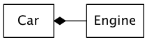

tij4
Table of Contents
- Chapter 1: Introduction to Objects
- The progress of abstraction
- An object has an interface
- An object procides services
- The hidden implementation
- Reusing the implementation
- Inheritance
- Is-a vs. is-like-a relationship
- Interchangeable objects with polymorphism
- The singly rooted hierarchy
- Containers
- Parameterized types (generics)
- Object creationg & lifetime
- Exception handling: dealing with errors
- Concurrent programming
- Java and the Internet
- Client/Server computing
- Server-side programming
- Chapter 02: Everything Is an Object
- Chapter 03: Operators
- Simpler print statements
- Using Java operators
- Precedence
- Assignment
- Mathematical operators
- Auto increment and decrement
- Relational operators
- Logical operators
- Literals
- Bitwise operators
- Shift operators
- Ternary if-else operator
- String operator + and +=
- Common pitfalls when using operators
- Casting Operators
- Java has no "sizeof"
- A compendium of operators
- Chapter 04: Controlling Execution
- Chapter 05: Initialization & Cleanup
- Chapter 06: Access Control
- Chapter 07: Reusing Classes
- Chapter 08: Polymorphism
- Chapter 09: Interfaces
- Chapter 10: Inner Classes
- Creating inner classes
- The link to the outer class
- Using .this and .new
- Inner classes and upcasting
- Inner classes in methods and scopes
- Anonymous inner classes
- Nested classes
- Why inner classes?
- Inheriting from inner classes
- Can inner classes be overridden?
- Local inner classes
- Inner-class identifiers
- Chapter 11: Holding Your Objects
- Chapter 12: Error Handling with Exceptions
- Chapter 13: Strings
- Chapter 14: Type Information
- Chapter 21: Concurrency
Chapter 1: Introduction to Objects
The progress of abstraction
- 所有的编程语言都提供了抽象:汇编是对机器码的抽象,c语言是对汇编的抽象
- c语言的抽象还是不够彻底:编程时,你依然需要了解很多关于"计算机组成部分"的知识, 而不是全身心的投入进去解决你的问题
- 后来者提供了更进一步的抽象,比如LISP就认为所有的问题最终都是list.
- 最后,我们来到了面向对象编程,它提供了当前最好的抽象:OOP允许你描述问题的时候, 描述的就是问题本身,而不需要描述机器的运行方法
- Java是在smalltalk的基础上建立起来的.两者都有如下特性,这些特性成就了一个纯
的面向对象语言:
- Everything is an object
- A program is a bunch of objects telling each other what to do by sending message
- Each object has its own memory made up of other objects
- Every object has a type.
- All objects of a particular type can receive the same message.
- 总结起来讲就是说一个object有:
- state (object有内部数据)
- behavior (object有public函数)
- identity (每个object都有自己独特的内存地址)
An object has an interface
- 在面向对象编程中,类这个概念很特殊,它的来历是
Objects that are identical except for their state during a program's execution are grouped together into "classes of objects"
- 类的用处,就是描述一类objects,他们有相同的特质(数据), 和相同的行为(函数).类 其实就是程序员自己定义的type.
- 为了让类能够做一些我们想要的动作,我们就需要类有自己的interface: 比如下面的
on(), off()等等

Figure 1: light.png
- interface只是指出了函数的使用方法(类似于函数声明),比如有其他地方的代码来实 现这些函数
An object procides services
- 一个对object的简单的理解方式是"把object理解为一个服务提供商":你的程序其实是 给用户提供服务, 而这个服务间接的由object提供出来.
- 这样的话,用java写程序其实就是把一个问题拆成多个object,如果这个object库里面 有,就直接用.否则就自己写
- 把object想象成service provider有很多额外的好处:
- 提高内聚性:很多object设计的毛病源自于一个object里面有太多的功能.
- 别人更容易理解你的代码,从而更好的复用.
The hidden implementation
- 在程序创作的过程中,很有必要把代码分成两个部分:
- class creator : thoses who create new data types: 类的创建者的目标是,创建 一个类,但是只暴露尽可能少的接口给用户(在完成功能的前提下)
- client programmer : class consumers who use the data type in their applcation:在一系列类的帮助下,进行快速开发
- 正是因为类的创建者需要在完成功能的情况下尽可能的少暴露他的接口.所以我们有如
下三种关键字来确定暴露和保护:
- public: 其修饰的代码能够为任何人所使用
- private: 其修饰的代码只能被自己看到
- protected: 其修饰作用和private一样,只是有一个例外,继承类可以访问父类的 protected部分(但不能访问其父类的private部分)
Reusing the implementation
- 代码重用是OOP的强大优势
- 最常见的代码重用的方法是 object composition:它往往代表一种"has-a"关系.

- 当然object composition还有一个变体就是aggregation,也是"has-a"关系,只不过被包
含的部分数量经常变化.(一个池塘里面鸭子的数量经常改变)

Figure 3: car.png
- composition有与生俱来的灵活性,因为被has的成员对象(member object)通常都是 private的, 这就意味着你可以随意改动他们,而不会对class client造成伤害.
- 使用composition,你甚至可以在运行期动态改变他们.而对于inheritance,你只能在 compile-time来创建.
Inheritance
- object的初衷是为了方便:可以把数据和函数打包,然后把主要精力放到解决问题,而不 需要同时兼顾各种系统的功能.所以我们引入了class来创建某种object
- 而inheritance则是为了能够小幅度的改变一个class,增加一些新的东西,就引入一个 新的class.老的class就叫做base,新才class就叫做derived.
- 继承的特点就是derived会随着base的改变而改变.这种改变不能说一定是好事
- 从一个base创建出一个derived的过程中,derived不仅仅拷贝了base的所有的数据(非 private的), 同时,更重要的是,derived拷贝了所有的interface.换句话说就是,所有 传递给base对象的,现在也可以传递给derived对象了.
- 所以derived和base类型是"一样的", inheritance的这种类型一致性是其特点
- 有两种方法让derived class变得更加与众不同一点:
- 添加新的interface:这很好理解,我比base class多了几种调用方法
- 更改已有的interface的内部实现
- 第1种方法看起来更符合java "extend"的感觉(延伸么…),但其实一般情况下,derived 基本都是靠第2种方法(Overriding)来让自己变得和base不那么一样.
Is-a vs. is-like-a relationship
- 如果一个derived class只更改了base的接口实现,自己并没有添加新的接口,那么我们 说这种继承较pure substitution,因为type完全相同,所以可以说是一种"is-a"的关系
- 如果你万不得已在derived里面引入了新的接口(函数),那也没问题,我们把他叫做一种 "is-like-a"的关系:这种关系也没啥问题,只是你新加了功能,可以有些组件是为你的base 的类写的,他并不知道你的新功能.
Interchangeable objects with polymorphism
- 我们之所以喜欢pure substitution是因为我们编程的时候,可以把所有的derived当作 是base(因为他们type其实"完全一致")
- 虽然编程上省了事,但编译器却要通过late binding的方式来完成在运行期才决定运行 哪个内存上代码的功能.这种late binding的方式叫做polymorphism(多肽)
- Java默认dynamic binding是class内部的函数的缺省行为, 不需要virtual(像c++ 一样)指定.
The singly rooted hierarchy
- Java不支持多继承模式,这有很多的好处:
- 可以对一类object施以同样的操作
- 所有的对象都可以在heap上创建
- argument传递变得简单
- garbage collector在单继承上更为简单
Containers
- container是一种保留着其他object ref的新type.它的大小可以动态决定.
Parameterized types (generics)
- 在JAVA5之前,container里面所有的内容都是Object类型的.所以container实现起来很 简单
- 但是container使用起来却有点风险.比如Shape类型的要先upcast成Object,然后存入, 读取的时候,要再downcast成Shape
- upcast总是成立的,因为Shape是一个Object,但是downcast却并不是总是成立,存在 着downcast的危险(虽然也可以抛出异常,但是毕竟增加了成本)
- 新的container的处理办法是泛型编程
ArrayList<Shape> shapes = new ArrayList<Shape>();
Object creationg & lifetime
- java使用new来创建新的heap object
- java所有的内存都是通过garbage collection来回收的.
Exception handling: dealing with errors
- Java把错误处理写入到了程序语言里面,那就是:exception
- 抛出的exception是由exception handler来处理的, exception handler就像和main函 数并行运行一样,平时不出现,exception出现的时候,他就出手相救了.
Concurrent programming
- java5开始支持多线程编程
Java and the Internet
- java在解决web上面的问题更得心应手
Client/Server computing
- 网络的世界中,server负责提供数据,client接受数据.
- 为了减小client端的latency,需要在server端使用的的软件叫做"中间件"
Server-side programming
- Java主要负责的是server端的开发.server遇到的比较麻烦的问题就是数据库事务(Database Transaction). 多线程也是一个考验
Chapter 02: Everything Is an Object
You manipulate objects with references
- 在Java里面,一切的事物都是object,但是写程序的时候,你所用到的总是reference(其 实内部实现的机制就是指针)
You must create all the objects
- java里面总是需要依靠new来把一个ref和一个object联系起来
String s = new String("asdf");
Where storage lives
- 通常来说,数据有如下五个地方存储:
- Registers: 寄存器通常无法自己控制
- The stack: 在RAM里面,CPU可以通过stack pointer来快速申请内存:向下移动 就是申请内存,向上移动就是释放内存. 对于Java来说,java只把自己的ref存在stack 里面(和c一样,指针在stack里面,对象存在heap里面)
- The heap: 在RAM里面.是存放所有Java object的地方.heap的使用更加灵活, 编译器不需要关注存储在heap里面待多久.但是heap的创建和释放都比stack更 浪费资源
- Constant storage: 常量一般都直接放到内存里面存放的代码部分(program code) 因为常量和代码一样不能改变
- Non-RAM storage: 也就是文件等.
Special case: primitive types
- Java里面并不是所有的类型都是一个ref在stack,对应一个object在heap的结构,这些
特殊的类型叫primitive type, 他们是创建在stack上的
primitive type size min max Wrapper Type boolean - - - Boolean char 16bits Unicode 0 Unicoe 2**16 -1 Character byte 8bits -128 +127 Byte short 16bits -2**15 2**15+1 Short int 32bits -2**31 +2**31-1 Integer long 64bits -2**63 +2**31-1 Long float 32bits IEEE754 IEEE754 Float doubl 64bits IEEE754 IEEE754 Double void - - - Void - Wrapper Type是heap版的primitive type.
High-precision numbers
- Java还支持高精度超大数: BigInteger, BigDecimal
Arrays in Java
- Java的数组如果越界的话,会exception的,这个是比c的进步
- Java的数组其实就是"一组reference", 每个ref都会被初始化成null. 你必须在使用 之前赋值,否则还是exception
- 虽然是"一组reference"但是其实你还是可以创建primitive类型的数组的
You never need to destroy an object
- 虽然Java也有scope的概念,但是你却不能在嵌套的scope里面声明相同的变量,虽然这
个在c/c++里面可行
{ int x = 12; { int x = 96; // Illegal } }
Scope of objects
- 下面的例子中, s(作为ref)的内存会在"}"之后就被系统收回.但是s指向的存储"a string"
内存却会依然被保留着.知道GC决定回收它.
{ String s = new String("a string"); } // End of scope
Creating new data types: class
Fields and methods
- 对于一个类来说主要就是存储数据和函数
Default values for primitive members
- 如果一个primitive data被创建的话(在stack上),并且他们是class的域的话,它们都
默认会有一个default值
Primitive type Default boolean false char '\u0000'(null) byte (byte)0 short (short)0 int 0 long 0L float 0.0f double 0.0d - 如果primitive date被创建,但是它不是class的域,而是某个函数的local variable,那 么它的值依然未知.
Methods, arguments, and return values
The argument list
- Java的函数参数看起来像是传递的object(heap的地址),其实还是传递的stack的地址(Java 叫做reference,其实我们更应该叫做pointer, 但是为了防止混淆,我们就说传递的还是 stack的值)
- 下面是一个c++的pass-by-reference的例子:
- vv是存的heapd的地址
- *vv是heap地址里面存的object (java中的 Integer jj = new Integer(23), 中的jj 其实就是c++里面的*vv)
- "&"+"参数"代表后面的参数没有使用"拷贝的替身",而是直接使用heap地址(这样就 会减少一次构造),这也就是c/c++所谓的pass-by-reference.
void doubleValue(int &v) { v = v * 2; } int main(int argc, char *argv[]) { int* vv = new int(23); cout << "vv address is " << vv << "vv value is " << *vv << endl; doubleValue(*vv); cout << "vv address is " << vv << "vv value is " << *vv << endl; return 0; } ////////////////////////////////////////// // result==> // // vv address is 0x8213b0vv value is 23 // // vv address is 0x8213b0vv value is 46 // ////////////////////////////////////////// - 所以JAVA一直一来都是"pass-by-value",因为我们的参数列表里面"没有&这个用法",所以 每次我们都是拷贝一个stack上的变量给他们,还是只能使用这个stack变量.
- Java中"pass-by-value"是无容置疑的,但是分下面两种情况讨论,会让人更明白:
- 基本类型(primitive type) 和 String str="somestr": 这两种情况都是"完完全全" 的"按值传递". method内部会创建一个替身的.这种情况下和c++值传递完全一样, 就不详细表述了
- 除了上面以外的所有的其他情况:因为Java中除了基本类型以外,java的变量其实就是一个
"指针",比如下面的例子
Dog myDog = new Dog("Rover"); foo(myDog); public void foo(Dog someDog) { someDog.setName("Max"); // AAA someDog = new Dog("Fifi"); // BBB }- 我们把myDog传入了foo,但是myDog其实就是一个新建的Dog object的address(比 如值为42)
- 在line AAA, someDog接受了参数,设置自己的地址为42, 然后被要求更改姓名为 Max
- 在line BBB, 一个新的Dog object创建了,地址是74, 然后someDog的地址被更新 为了74
- 函数返回了,我们的myDog改变了么? 没有!它还是指向42. 但是42里面的内容改了, 我们的狗叫"Max"了.
- Java其实就很C是一样的(C也没有pass-by-reference), C是通过指针传入来更改. 而Java,所有的非基本类型变量其实都是一个"指针".然后我们把"指针"传入函数, 指针指向谁我们是不能改变的,但是指针指向的内容我们可以改变.
Building a Java program
Name visibility
- C++引入了namespace的概念,但是却执行的不严格. Java对付name clashing的方法是强制 namespace. 一个name在一个package.name下面unique就可以了.
Using other components
- Java的lib引入的方法是import
The static keyword
- static用于创建属于class的函数和变量
- 虽然可以使用obj.static_value 和obj.static_func的方法,但是我们还是推荐使用 class.static_value和class.static_func.这样更能体现static属于整个类的特性.
Chapter 03: Operators
Simpler print statements
- TIJ设计了一种使用net.mindview.util.Print.*来替代System.out.println的方法.我 们不采用
Using Java operators
- 基本和c++一致
Precedence
- 也和c++一致,记得自己不太肯定的时候加括号就好了.
Assignment
- 如果赋值的对象是primitive的话,那么和c++没什么区别
- 如果赋值对象是object的话,因为在java里面我们只能处理reference.那么赋值其实就
是类似c++里面的指针指向的地址改变,也就是说c=d,意味着c和d都指向同一个object
package org.hfeng.tij4.operators; class Tank { int level; } public class Assignment { public static void main(String[] args) { Tank t1 = new Tank(); Tank t2 = new Tank(); t1.level = 9; t2.level = 47; System.out.println("1:t1.level:" + t1.level + ", t2.level:" + t2.level); t1 = t2; System.out.println("2:t1.level:" + t1.level + ", t2.level:" + t2.level); t1.level = 27; System.out.println("3:t1.level:" + t1.level + ", t2.level:" + t2.level); } } //////////////////////////////////////////////////// // <===================OUTPUT===================> // // 1:t1.level:9, t2.level:47 // // 2:t1.level:47, t2.level:47 // // 3:t1.level:27, t2.level:27 // //////////////////////////////////////////////////// - 这种现象叫做aliasing,而且是java对待object的最常用方法.
Aliasing during method calls
- 当你往一个当对象里面传递object的时候aliasing也会发生:虽然你的ref会有一个替
身,但是你实际指向的object还是有可能被改变. 这其实也就是我们前面说的,java的
pass-by-value, 但是java的非内置类型value就是一个"指针".
class Letter { char c; } public class PassObject { static void f(Letter y) { y.c = 'z'; } public static void main(String[] args) { Letter x = new Letter(); x.c = 'a'; System.out.println("1:x.c: " + x.c); f(x); System.out.println("2:x.c: " + x.c ); } } //////////////////////////////////////////////////// // <===================OUTPUT===================> // // Output===>: // // 1: x.c: a // // 2: x.c: z // ////////////////////////////////////////////////////
Mathematical operators
- 四则运算也没有什么新意
package org.hfeng.tij4.operators; import java.util.Random; public class MathOps { public static void main(String[] args) { //Create a seeded random number generator: Random rand = new Random(47); int i, j, k; // Choose value from 1 to 100; j = rand.nextInt(100) + 1; System.out.println("j: " + j); k = rand.nextInt(100) + 1; System.out.println("k: " + k); i = j + k; System.out.println("j + k : " + i); i = j - k; System.out.println("j - k : " + i); i = j * k; System.out.println("j * k : " + i); i = j / k; System.out.println("j / k : " + i); i = j % k; System.out.println("j % k : " + i); // Floating-point number tests: float u, v, w; v = rand.nextFloat(); System.out.println("v: " + v); w = rand.nextFloat(); System.out.println("w: " + w); u = v + w; System.out.println("v + w: " + u); u = v - w; System.out.println("v - w: " + u); u = v * w; System.out.println("v * w: " + u); u = v / w; System.out.println("v / w: " + u); // The folllowing also works for char, byte, short,int, long, and double u += v; System.out.println("u +=v: " + u); u -= v; System.out.println("u -=v: " + u); u *= v; System.out.println("u *=v: " + u); u /= v; System.out.println("u /=v: " + u); } } //////////////////////////////////////////////////// // <===================OUTPUT===================> // // j: 59 // // k: 56 // // j + k : 115 // // j - k : 3 // // j * k : 3304 // // j / k : 1 // // j % k : 3 // // v: 0.5309454 // // w: 0.0534122 // // v + w: 0.5843576 // // v - w: 0.47753322 // // v * w: 0.028358962 // // v / w: 9.940527 // // u +=v: 10.471473 // // u -=v: 9.940527 // // u *=v: 5.2778773 // // u /=v: 9.940527 // //////////////////////////////////////////////////// - 这个例子咱们用了到了Random, 如果我们不设置seed的话,系统默认会使用current time作为seed
Unary minus and plus operators
- '+'和'-'做符号用的时候,记得加个括号,更容易辨识
Auto increment and decrement
- 也是老生常谈了,pre和post的区别
package org.hfeng.tij4.operators; public class AutoInc { public static void main(String[] args) { int i = 1; System.out.println("i:" + i); System.out.println("++i:" + ++i); System.out.println("i++:" + i++); System.out.println("i:" + i); System.out.println("--i:" + --i); System.out.println("i--:" + i--); System.out.println("i:" + i); } } //////////////////////////////////////////////////// // <===================OUTPUT===================> // // i:1 // // ++i:2 // // i++:2 // // i:3 // // --i:2 // // i--:2 // // i:1 // //////////////////////////////////////////////////// - 顺便说一句,面试常考的题目就是++i和i++哪个效率高,正确的答案是:
- i++有可能会比++i要慢(或者说++i不可能比i++慢), 因为i的旧的值可能要存储起来 以便为后面的程序所使用
- 现代的编译器(或者说CPU)都会把++i的情况进行优化
- 但是我们还是推荐使用++i.这才是正确的使用方法
- i++其实是为极为特殊的情况下才使用的(我们保存一个值,增加了它,然后还想用它 刚才的值), 如果单纯使用i++其实是一个浪费:我们拷贝一个数的值,然后给这个数 加一,然后再把原来存才原始值扔掉…多余了两步操作.
Relational operators
- relational operator操作的结果是产生boolean result,其方法也是和C++差不多,
但是Java因为是一个reference的世界.所以relational operator比较的其实是两个
ref的值,也就是两个对象的内存地址,那肯定是不一样的
package org.hfeng.tij4.operators; public class Equivalence { public static void main(String[] args) { Integer n1 = new Integer(47); Integer n2 = new Integer(42); System.out.println(n1 == n2); System.out.println(n1 != n2); } } //////////////////////////////////////////////////// // <===================OUTPUT===================> // // false // // true // //////////////////////////////////////////////////// - 如果我们想比较两个object的"内涵"是不是一样呢?我们就需要函数equals()
package org.hfeng.tij4.operators; public class EqualsMethod { public static void main(String[] args) { Integer n1 = new Integer(47); Integer n2 = new Integer(47); System.out.println(n1.equals(n2)); } } //////////////////////////////////////////////////// // <===================OUTPUT===================> // // true // //////////////////////////////////////////////////// - 但是世界不是总那么美好..如果你自己创建了class,没有override equals的话,情况
就是直接返回false, 因为equals的默认的行为就是比较reference.
package org.hfeng.tij4.operators; class Value { int i; } public class EqualsMethod2 { public static void main(String[] args) { Value v1 = new Value(); Value v2 = new Value(); v1.i = v2.i = 100; System.out.println(v1.equals(v2)); } } //////////////////////////////////////////////////// // <===================OUTPUT===================> // // false // //////////////////////////////////////////////////// - 大部分的Java类库都会实现equals()所以我们可以方便的比较内容,而不是reference
Logical operators
- java的逻辑操作和c++一样,只不过"非零整数"无法再作为逻辑上的true, "零"也无法
再作为false
package org.hfeng.tij4.operators; import java.util.Random; public class Bool { public static void main(String[] args) { Random rand = new Random(47); int i = rand.nextInt(100); int j = rand.nextInt(100); System.out.println("i = " + i); System.out.println("j = " + j); System.out.println("(i > j) = " + (i > j)); System.out.println("(i < j) = " + (i < j)); System.out.println("(i >= j) = " + (i >= j)); System.out.println("(i <= j) = " + (i <= j)); System.out.println("(i == j) = " + (i == j)); System.out.println("(i != j) = " + (i != j)); System.out.println("((i < 10) && (j < 10)) =" + ((i < 10) && (j < 10))); System.out.println("((i < 10) || (j < 10)) =" + ((i < 10) || (j < 10))); } } //////////////////////////////////////////////////// // <===================OUTPUT===================> // // i = 58 // // j = 55 // // (i > j) = true // // (i < j) = false // // (i >= j) = true // // (i <= j) = false // // (i == j) = false // // (i != j) = true // // ((i < 10) && (j < 10)) =false // // ((i < 10) || (j < 10)) =false // ////////////////////////////////////////////////////
Short-circuiting
- 有些情况下,你会遇到叫做"short-circuiting"的情况,就是并不是所有的expression
都会去evaluated, 比如下面的例子,前面出现了false,那么false &&后面的expression
就完全不会去evaluate了.
package org.hfeng.tij4.operators; public class ShortCircuit { static boolean test1(int val) { System.out.println("test1(" + val + ")"); System.out.println("result: " + (val < 1)); return val < 1; } static boolean test2(int val) { System.out.println("test2(" + val + ")"); System.out.println("result: " + (val < 2)); return val < 2; } static boolean test3(int val) { System.out.println("test3(" + val + ")"); System.out.println("result: " + (val < 3)); return val < 3; } public static void main(String[] args) { boolean b = test1(0) && test2(2) && test3(2); System.out.println("expression is " + b); } } //////////////////////////////////////////////////// // <===================OUTPUT===================> // // test1(0) // // result: true // // test2(2) // // result: false // // expression is false // ////////////////////////////////////////////////////
Literals
- 有时候,需要在数字之外,增加一些辅助的字符来让编译器知道你的数据类型
package org.hfeng.tij4.operators; public class Literals { public static void main(String[] args) { int i1 = 0x2f; // Hexadecimal (lowercase) System.out.println("i1: " + Integer.toBinaryString(i1)); int i2 = 0x2F; // Hexadecimal (uppercase) System.out.println("i2: " + Integer.toBinaryString(i2)); int i3 = 0177; // Octal (leading zero) System.out.println("i3: " + Integer.toBinaryString(i3)); char c = 0xffff; // max char hex value System.out.println("c:" + Integer.toBinaryString(c)); byte b = 0x7f; // max byte hex value System.out.println("b:" + Integer.toBinaryString(b)); short s = 0x7fff; // max short hex value System.out.println("s:" + Integer.toBinaryString(s)); long n1 = 200L; // long suffix long n2 = 200l; // long suffix (but can be confusing) long n3 = 200; float f1 = 1; float f2 = 1F; // float suffix float f3 = 1f; // float suffix double d1 = 1d; // doubled suffix double d2 = 1D; // dobbled suffix } } //////////////////////////////////////////////////// // <===================OUTPUT===================> // // i1: 101111 // // i2: 101111 // // i3: 1111111 // // c:1111111111111111 // // b:1111111 // // s:111111111111111 // ////////////////////////////////////////////////////
Exponential notation
- Java遵循了C的规定,e代表是10为底的指数,而不是2.718,使用方法如下
public class Exponents { public static void main(String[] args) { // uppercase and lowercase 'e' are the same float expFloat = 1.39e-43f; expFloat = 1.39E-43f; System.out.println(expFloat); double expDouble = 47e47d; // 'd' is optional double expDouble2 = 47e47; // Automatically double System.out.println(expDouble); } } //////////////// // Output===> // // 1.39E-43 // // 4.7E48 // ////////////////
Bitwise operators
- 对bit的操作和c一样还是那四个:
- AND(&)
- OR(|)
- XOR(^)
- NOT(~)
Shift operators
- Java首先增加了一个叫做unsigned right shift的东西(三个'>', >>>),就是不管数字 是不是有符号的我直接在左边补齐0
- 下面是一个>>>的例子,我们会发现这个short和byte的>>>好像不管用(长度没变).这是
因为:
- 这两个类型每次使用的时候都会'首先'转换成int,
- >>>10个之后呢,再返回赋值给b(或者s)的时候,会被truncated,所以结果还是-1
- 最后一个没有,就成功显示了.因为最后没有再赋值回b(或者s)这一步
package org.hfeng.tij4.operators; public class URShift { public static void main(String[] args) { int i = -1; System.out.println(Integer.toBinaryString(i)); i >>>= 10; System.out.println(Integer.toBinaryString(i)); long l = -1; System.out.println(Long.toBinaryString(l)); l >>>= 10; System.out.println(Long.toBinaryString(l)); short s = -1; System.out.println(Integer.toBinaryString(s)); s >>>= 10; System.out.println(Integer.toBinaryString(s)); byte b = -1; System.out.println(Integer.toBinaryString(b)); b >>>= 10; System.out.println(Integer.toBinaryString(b)); b = -1; System.out.println(Integer.toBinaryString(b)); System.out.println(Integer.toBinaryString(b>>>10)); } } ////////////////////////////////////////////////////////////////////// // <===================OUTPUT===================> // // 11111111111111111111111111111111 // // 1111111111111111111111 // // 1111111111111111111111111111111111111111111111111111111111111111 // // 111111111111111111111111111111111111111111111111111111 // // 11111111111111111111111111111111 // // 11111111111111111111111111111111 // // 11111111111111111111111111111111 // // 11111111111111111111111111111111 // // 11111111111111111111111111111111 // // 1111111111111111111111 // ////////////////////////////////////////////////////////////////////// - Java还继承了带符号的转移>>:
- 如果是负数,那么就在高位插入1
- 如果是正数,那么就在高位插入0
- Java当然还得继承>>的对应操作<<, 它是位移bit向左,最右无脑插入0
- 对于int来说,每次只能shift 5位,而long可以shift 6位
package org.hfeng.tij4.operators; import java.util.Random; public class BitManipulation { public static void main(String[] args) { Random rand = new Random(47); int i = rand.nextInt(); int j = rand.nextInt(); printBinaryInt("-1", -1); printBinaryInt("+1", +1); int maxpos = 2147483647; printBinaryInt("maxpos", maxpos); int maxneg = -2147483648; printBinaryInt("maxneg", maxneg); printBinaryInt("i", i); printBinaryInt("~i", ~i); printBinaryInt("-i", -i); printBinaryInt("j", j); printBinaryInt("(i&j)", (i&j)); printBinaryInt("(i|j)", (i|j)); printBinaryInt("(i^j)", (i^j)); printBinaryInt("(i << 5)", (i << 5)); printBinaryInt("(i >> 5)", (i >> 5)); printBinaryInt("((~i)>>5)", ((~i)>>5)); printBinaryInt("(i >> 5)", (i >> 5)); printBinaryInt("((~i)>>5)", ((~i)>>5)); long l = rand.nextLong(); long m = rand.nextLong(); printBinaryLong("-1L", -1L); printBinaryLong("+1L", +1L); long ll = 9223372036854775807L; printBinaryLong("maxpos", ll); long lln = -9223372036854775807L; printBinaryLong("maxneg", lln); printBinaryLong("l", l); printBinaryLong("~l", ~l); printBinaryLong("-l", -l); printBinaryLong("m", m); printBinaryLong("(l&m)", (l&m)); printBinaryLong("(l|m)", (l|m)); printBinaryLong("(l^m)", (l^m)); printBinaryLong("(l << 5)", (l << 5)); printBinaryLong("(l >> 5)", (l >> 5)); printBinaryLong("((~l)>>5)", ((~l)>>5)); printBinaryLong("(l >> 5)", (l >> 5)); printBinaryLong("((~l)>>5)", ((~l)>>5)); } private static void printBinaryInt(String s, int i) { System.out.println(s + ", int: " + i + ", binary: \n" + Integer.toBinaryString(i)); } private static void printBinaryLong(String s, long i) { System.out.println(s + ", long: " + i + ", binary: \n" + Long.toBinaryString(i)); } } ////////////////////////////////////////////////////////////////////// // <===================OUTPUT===================> // // -1, int: -1, binary: // // 11111111111111111111111111111111 // // +1, int: 1, binary: // // 1 // // maxpos, int: 2147483647, binary: // // 1111111111111111111111111111111 // // maxneg, int: -2147483648, binary: // // 10000000000000000000000000000000 // // i, int: -1172028779, binary: // // 10111010001001000100001010010101 // // ~i, int: 1172028778, binary: // // 1000101110110111011110101101010 // // -i, int: 1172028779, binary: // // 1000101110110111011110101101011 // // j, int: 1717241110, binary: // // 1100110010110110000010100010110 // // (i&j), int: 570425364, binary: // // 100010000000000000000000010100 // // (i|j), int: -25213033, binary: // // 11111110011111110100011110010111 // // (i^j), int: -595638397, binary: // // 11011100011111110100011110000011 // // (i << 5), int: 1149784736, binary: // // 1000100100010000101001010100000 // // (i >> 5), int: -36625900, binary: // // 11111101110100010010001000010100 // // ((~i)>>5), int: 36625899, binary: // // 10001011101101110111101011 // // (i >> 5), int: -36625900, binary: // // 11111101110100010010001000010100 // // ((~i)>>5), int: 36625899, binary: // // 10001011101101110111101011 // // -1L, long: -1, binary: // // 1111111111111111111111111111111111111111111111111111111111111111 // // +1L, long: 1, binary: // // 1 // // maxpos, long: 9223372036854775807, binary: // // 111111111111111111111111111111111111111111111111111111111111111 // // maxneg, long: -9223372036854775807, binary: // // 1000000000000000000000000000000000000000000000000000000000000001 // // l, long: -8652529054300476342, binary: // // 1000011111101100000010101010101100001101101011000110110001001010 // // ~l, long: 8652529054300476341, binary: // // 111100000010011111101010101010011110010010100111001001110110101 // // -l, long: 8652529054300476342, binary: // // 111100000010011111101010101010011110010010100111001001110110110 // // m, long: 2955289354441303771, binary: // // 10100100000011010011000000001010010011111101111010011011011011 // // (l&m), long: 72066398748419146, binary: // // 100000000000010000000001000000001101001000010010001001010 // // (l|m), long: -5769306098607591717, binary: // // 1010111111101111010011101010101110011111111111111110111011011011 // // (l^m), long: -5841372497356010863, binary: // // 1010111011101111010001101010100110011110010110111100101010010001 // // (l << 5), long: -179768631971968704, binary: // // 1111110110000001010101010110000110110101100011011000100101000000 // // (l >> 5), long: -270391532946889886, binary: // // 1111110000111111011000000101010101011000011011010110001101100010 // // ((~l)>>5), long: 270391532946889885, binary: // // 1111000000100111111010101010100111100100101001110010011101 // // (l >> 5), long: -270391532946889886, binary: // // 1111110000111111011000000101010101011000011011010110001101100010 // // ((~l)>>5), long: 270391532946889885, binary: // // 1111000000100111111010101010100111100100101001110010011101 // //////////////////////////////////////////////////////////////////////
Ternary if-else operator
- 这也是c语言的遗产吧
package org.hfeng.tij4.operators; public class TernaryIfElse { static int ternary(int i) { return i < 10 ? i * 100 : i * 10; } static int standardIfElese(int i) { if (i < 10) { return i * 100; } else { return i * 10; } } public static void main(String[] args) { System.out.println(ternary(9)); System.out.println(ternary(10)); System.out.println(standardIfElese(9)); System.out.println(standardIfElese(10)); } } //////////////////////////////////////////////////// // <===================OUTPUT===================> // // 900 // // 100 // // 900 // // 100 // ////////////////////////////////////////////////////
String operator + and +=
- 如果+或者+=的两头有一头是String的话,那么剩下的一半自动本转换为String
package org.hfeng.tij4.operators; public class StringOperators { public static void main(String[] args) { int x = 0, y = 1, z = 2; String s = "x, y, z "; System.out.println(s + x + y + z); // example 1 System.out.println(x + " " + s); // example 2 System.out.println(y + z + " " + s); // example 3 s += "(summed) = "; System.out.println(s + (x + y + z)); // example 4 System.out.println("" + x); // example 5 } } //////////////////////////////////////////////////// // <===================OUTPUT===================> // // x, y, z 012 // // 0 x, y, z // // 3 x, y, z // // x, y, z (summed) = 3 // // 0 // ////////////////////////////////////////////////////- 例子1: 我们x一旦和s接触就变成了String,后面就接连变成String
- 例子2: x 在前但是+后面是" ",还是变成了String
- 例子3: y+z在前面先计算,所以不是12,而是3出现
- 例子4: 可以通过()来改变计算顺序
- 例子5: 这个是Integer.toString()的简化版
Common pitfalls when using operators
- c/c++里面常犯的两个错误,java在编译阶段就察觉到了,会抛出异常
- while(x=y) 的错误, java里面只能用boolean类型作为while等逻辑的参数, 赋值 语句x=y显然不行
- if (a & b) 的错误. &被误认为是&&的使用,也被java的编译器盯上了
Casting Operators
- java通常情况下会自动casting,比如你把int赋给float,java会自动帮你casting, 明
确的cast只是为了让代码更明显,或者强制某些并不一定cast的例子
public class Casting { public static void main(String[] args) { int i = 200; long lng = (long)i; lng = i; // "widening," so cast not really required long lng2 = (long)200; lng2 = 200; // A "narrowing conversion": i = (int)lng2; // Cast required } } - 在c/c++里面casting是会导致很多头疼的问题的,对于java来说,不存在这个问题,只是 在某些"narrowing conversion"的时候,可能会丢失数据(这也是为什么你要explicit 的指出问题的原因)
Truncation and rounding
- float和double转换成int的时候,会丢失小数部分
package org.hfeng.tij4.operators; public class CastingNumbers { public static void main(String[] args) { double above = 0.7, below = 0.4; float fabove = 0.7f, fbelow = 0.4f; System.out.println("(int)above: " + (int)above); System.out.println("(int)below: " + (int)below); System.out.println("(int)fabove: " + (int)fabove); System.out.println("(int)fbelow: " + (int)fbelow); } } //////////////////////////////////////////////////// // <===================OUTPUT===================> // // (int)above: 0 // // (int)below: 0 // // (int)fabove: 0 // // (int)fbelow: 0 // //////////////////////////////////////////////////// - 四舍五入这种事情,只有使用Math.round来实现
package org.hfeng.tij4.operators; public class RoundingNumbers { public static void main(String[] args) { double above = 0.7, below = 0.4; float fabove = 0.7f, fbelow = 0.4f; System.out.println("Math.round(above): " + Math.round(above)); System.out.println("Math.round(below): " + Math.round(below)); System.out.println("Math.round(fabove): " + Math.round(fabove)); System.out.println("Math.round(fbelow): " + Math.round(fbelow)); } } //////////////////////////////////////////////////// // <===================OUTPUT===================> // // Math.round(above): 1 // // Math.round(below): 0 // // Math.round(fabove): 1 // // Math.round(fbelow): 0 // ////////////////////////////////////////////////////
Promotion
- 你会发现你对精度小于int的类型(char, byte, short),我们对他们math,或者bitwise 操作的时候,它们总会先转换成int.所以在如果你想让他再赋值会较小的type你得进行cast
Java has no "sizeof"
- Java的所有int都是32bit,无须区sizeof问询
A compendium of operators
- java也是会溢出的.从它把integer设计成32bit开始,这个问题就无法避免了
package org.hfeng.tij4.operators; public class Overflow { public static void main(String[] args) { int big = Integer.MAX_VALUE; System.out.println("big = " + big); int bigger = big * 4; System.out.println("bigger = " + bigger); } } //////////////////////////////////////////////////// // <===================OUTPUT===================> // // big = 2147483647 // // bigger = -4 // ////////////////////////////////////////////////////
Chapter 04: Controlling Execution
true and false
- java不允许像c,c++一样使用数字作为boolean(隐式转换)
if-else
- if-else是最常见的flow control命令
package org.hfeng.tij4.control; public class IfElse { static int result = 0; static void test(int testval, int target) { if (testval > target) { result = +1; } else if (testval < target) { result = -1; } else { result = 0; } } public static void main(String[] args) { test(10, 5); System.out.println(result); test(5, 10); System.out.println(result); test(5, 5); System.out.println(result); } } //////////////////////////////////////////////////// // <===================OUTPUT===================> // // 1 // // -1 // // 0 // ////////////////////////////////////////////////////
Iteration
while
- 不需要知道具体循环多少次,比如下面,只有random刚好产生大于0.99的情况,才返回 运行次数随机
do-while
- 先do一次然后while,所以最少运行一次
for
- 知道运行次数的循环就用for
package org.hfeng.tij4.control; public class ListCharacters { public static void main(String[] args) { for (char c = 0; c < 128; c++) { if (Character.isLowerCase(c)) { System.out.println("value:" + (int)c + "character: " + c); } } } } //////////////////////////////////////////////////// // <===================OUTPUT===================> // // value:97character: a // // value:98character: b // // value:99character: c // // value:100character: d // // value:101character: e // // value:102character: f // // value:103character: g // // value:104character: h // // value:105character: i // // value:106character: j // // value:107character: k // // value:108character: l // // value:109character: m // // value:110character: n // // value:111character: o // // value:112character: p // // value:113character: q // // value:114character: r // // value:115character: s // // value:116character: t // // value:117character: u // // value:118character: v // // value:119character: w // // value:120character: x // // value:121character: y // // value:122character: z // ////////////////////////////////////////////////////
The comma operator
- comma operator只有一个地方可以使用,就是在for里面定义的时候,可以定义多个变
量, 但是变量必须是同一类型的
package org.hfeng.tij4.control; public class CommaOperator { public static void main(String[] args) { for(int i = 1, j = i + 10; i < 5; i++, j = i * 2) { System.out.println("i = " + i + ",j = " + j); } } } //////////////////////////////////////////////////// // <===================OUTPUT===================> // // i = 1,j = 11 // // i = 2,j = 4 // // i = 3,j = 6 // // i = 4,j = 8 // ////////////////////////////////////////////////////
Foreach syntax
- 用过python的会很熟悉,python里面的"for", 其实就是foreach
package org.hfeng.tij4.control; import java.util.Random; public class ForEachFloat { public static void main(String[] args) { Random rand = new Random(47); float f[] = new float[10]; for (int i = 0; i < 10; i++) { f[i] = rand.nextFloat(); } for(float x : f) { System.out.println(x); } } } //////////////////////////////////////////////////// // <===================OUTPUT===================> // // 0.72711575 // // 0.39982635 // // 0.5309454 // // 0.0534122 // // 0.16020656 // // 0.57799757 // // 0.18847865 // // 0.4170137 // // 0.51660204 // // 0.73734957 // //////////////////////////////////////////////////// - 对于所有的Iterable object,都可以使用foreach.String是Iterable的,当然也可以
使用for each
package org.hfeng.tij4.control; public class ForEachString { public static void main(String[] args) { for (char c : "An Afrian Swallow".toCharArray()) { System.out.printf(c + " "); } } } //////////////////////////////////////////////////// // <===================OUTPUT===================> // // A n A f r i a n S w a l l o w // //////////////////////////////////////////////////// - 虽然foreach看起来cool一点,但是它的效率较普通for要稍差
return
- return利用的巧妙可以简化代码(return后面的就不会执行了,是其唯一的特性)
package org.hfeng.tij4.control; public class IfElse2 { static int test(int testval, int target) { if (testval > target) { return +1; } else if (testval < target) { return -1; } else { return 0; //Match } } public static void main(String[] args) { System.out.println(test(10, 5)); System.out.println(test(5, 10)); System.out.println(test(5,5)); } } //////////////////////////////////////////////////// // <===================OUTPUT===================> // // 1 // // -1 // // 0 // //////////////////////////////////////////////////// //////////////////////////////////////////////////// // <===================OUTPUT===================> // // A n A f r i a n S w a l l o w // ////////////////////////////////////////////////////
break and continue
- break和continue常常容易混:
- break是从循环中跳出来,直接进行循环后面的代码 (break up就是完全分手了)
- continue是不再执行本次循环,跳到循环的下一次. (continue,暂时分开,重新开始恋情)
The infamous "goto"
- goto 臭名昭著,java已经放弃它了(但是还是把goto作为一个保留关键字)
- goto的错误在于"过度使用", 在某些极端情况下,goto反而是最好的方法. java放弃了 goto,但是使用break和continue来配合goto里面的label来进行跳转.
- 这个使用的情况基本上就是一种:嵌套的循环
label: outer-iteration { inner-iteration { //... break; // (1) //... continue; // (2) //... continue label; // (3) //... break label1; // (4) //.. } }- break就是普通的break了,跳出里层循环
- continue就是普通continue,放弃里层的一次循环
- continue label,就是放弃"外层当次剩余循环",进入"外层下一次循环"
- break label:跳出两次循环
- 一个实例来表示上面的四种跳转
package org.hfeng.tij4.control; // For loops with "labeled break" and "labeled continue" public class LabeledFor { public static void main(String[] args) { int i = 0; outer: //can't have statements here for (; true; ) { // infinite loop System.out.println("welcome back"); inner: //can't have satements here for (; i < 10; i++) { System.out.println("i = " + i); if (i == 2) { System.out.println("continue"); continue; } if (i == 3) { System.out.println("break"); i++; // Otherwise i never gets incremented break; } if (i == 7) { System.out.println("continue outer"); i++; // Otherwise i newver gets incremented continue outer; } if (i == 8) { System.out.println("break outer"); break outer; } for (int k = 0; k < 5; k++) { if (k == 3) { System.out.println("continue inner"); continue inner; } } } } } } //////////////////////////////////////////////////// // <===================OUTPUT===================> // // welcome back // // i = 0 // // continue inner // // i = 1 // // continue inner // // i = 2 // // continue // // i = 3 // // break // // welcome back // // i = 4 // // continue inner // // i = 5 // // continue inner // // i = 6 // // continue inner // // i = 7 // // continue outer // // welcome back // // i = 8 // // break outer // //////////////////////////////////////////////////// - 相似的使用while的例子如下
package org.hfeng.tij4.control; public class LabeledWhile { public static void main(String[] args) { int i = 0; outer: while (true) { System.out.println("Outer while loop"); while(true) { i++; System.out.println("i = " + i); if (i == 1) { System.out.println("continue"); continue; } if (i == 3) { System.out.println("continue outer"); continue outer; } if (i == 5) { System.out.println("break"); break; } if (i == 7) { System.out.println("break outer"); break outer; } } } } } //////////////////////////////////////////////////// // <===================OUTPUT===================> // // Outer while loop // // i = 1 // // continue // // i = 2 // // i = 3 // // continue outer // // Outer while loop // // i = 4 // // i = 5 // // break // // Outer while loop // // i = 6 // // i = 7 // // break outer // ////////////////////////////////////////////////////
switch
- switch也是c的贡献,我们需要记住case一定要是整形的数字,比如int或者char类型,java
里面的enum也被设计成可以和switch一起工作. 下例就是如何的区分元音非元音
package org.hfeng.tij4.control; import java.util.Random; public class VowelsAndConsonants { public static void main(String[] args) { Random rand = new Random(47); for (int i = 0; i < 100; i++) { int c = rand.nextInt(26) + 'a'; System.out.println((char)c + ", " + c + ":"); switch (c) { case 'a': case 'e': case 'i': case 'o': case 'u': System.out.println("vowel"); break; case 'y': System.out.println("Sometimes a vowel"); break; default: System.out.println("consonant"); } } } } //////////////////////////////////////////////////// // <===================OUTPUT===================> // // y, 121: // // Sometimes a vowel // // n, 110: // // consonant // // z, 122: // // consonant // // b, 98: // // consonant // // r, 114: // // consonant // // n, 110: // // consonant // // y, 121: // // Sometimes a vowel // // g, 103: // // consonant // // c, 99: // // consonant // // f, 102: // // consonant // // o, 111: // // vowel // ////////////////////////////////////////////////////
Chapter 05: Initialization & Cleanup
- java 继承了c++的ctor的概念,不过更简单.和c++一样,java保证在你使用之前,ctor已
经完成它的工作了
package org.hfeng.tij4.initialization; class Rock { Rock() { // ctor System.out.printf("Rock "); } } public class SimpleConstructor { public static void main(String[] args) { for (int i = 0; i < 10; i++) { new Rock(); } } } /////////////////////////////////////////////////////// // <===================OUTPUT===================> // // Rock Rock Rock Rock Rock Rock Rock Rock Rock Rock // /////////////////////////////////////////////////////// - 上面的例子是default ctor, 你也可以创建带参数的ctor.如果你创建了带参数的ctor
并且只有这一个ctor的话,那么只能用这个带参数的来创建类
package org.hfeng.tij4.initialization; class Rock2 { Rock2(int i) { System.out.printf("Rock " + i + " "); } } public class SimpleConstructor2 { public static void main(String[] args) { for (int i = 0; i < 8; i++) { new Rock2(i); } } } ////////////////////////////////////////////////////////////// // <===================OUTPUT===================> // // Rock 0 Rock 1 Rock 2 Rock 3 Rock 4 Rock 5 Rock 6 Rock 7 // ////////////////////////////////////////////////////////////// - 仔细观察会发现ctor是一个特殊的function.因为它没有返回值(不是返回void,而是没有)
Method overloading
- 一旦确定了ctor的实现方式,那么java使用overload那就是板上钉钉了.因为ctor不可
能只有一种实现方式,但是ctor的名字只能是和类相同.
package org.hfeng.tij4.initialization; class Tree { int height; Tree() { System.out.println("Planting a seedling"); height = 0; } Tree(int initialHeight) { height = initialHeight; System.out.println("Creating new Tree that is" + height + " feet tall"); } void info() { System.out.println("Tree is " + height + " feet tall"); } void info(String s) { System.out.println(s + ": Tree is " + height + " feet tall"); } } public class Overloading { public static void main(String[] args) { for (int i = 0; i < 5; i++) { Tree t = new Tree(i); t.info(); t.info("overloaded method"); } // Overloaded ctor; new Tree(); } } //////////////////////////////////////////////////// // <===================OUTPUT===================> // // Creating new Tree that is0 feet tall // // Tree is 0 feet tall // // overloaded method: Tree is 0 feet tall // // Creating new Tree that is1 feet tall // // Tree is 1 feet tall // // overloaded method: Tree is 1 feet tall // // Creating new Tree that is2 feet tall // // Tree is 2 feet tall // // overloaded method: Tree is 2 feet tall // // Creating new Tree that is3 feet tall // // Tree is 3 feet tall // // overloaded method: Tree is 3 feet tall // // Creating new Tree that is4 feet tall // // Tree is 4 feet tall // // overloaded method: Tree is 4 feet tall // // Planting a seedling // ////////////////////////////////////////////////////
Distinguishing overloaded methods
- 既然名字都相同了,那么函数参数至少"不能完全相同"
package org.hfeng.tij4.initialization; public class OverloadingOrder { static void f(String s, int i) { System.out.println("String: " + s + ", int: " + i); } static void f(int i, String s) { System.out.println("int: " + i + ", String:" + s); } public static void main(String[] args) { f("String first", 11); f(99, "Int First"); } } //////////////////////////////////////////////////// // <===================OUTPUT===================> // // String: String first, int: 11 // // int: 99, String:Int First // ////////////////////////////////////////////////////
Overloading with primitives
- primitive类型可能会自动的升级为较高精度的primitive(隐式转换),在这种情况下,
选择overload 函数的顺序是:
- 如果有exact match的,那首选exact match
- 如果没有exact match,那么就选精度升级最小的方法升级精度
- 如果传入的参数是常数,那么如果有int,首选int,否则选择精度最小的格式
- 如果传入的是char,如果没有char的话,会跳过byte和short,直接选择int
package org.hfeng.tij4.initialization; public class PrimitiveOverloading { void f1(char x) { System.out.println("f1(char)"); } void f1(byte x) { System.out.println("f1(byte)"); } void f1(short x) { System.out.println("f1(short)"); } void f1(int x) { System.out.println("f1(int)"); } void f1(long x) { System.out.println("f1(long)"); } void f1(float x) { System.out.println("f1(float)"); } void f1(double x) { System.out.println("f1(double)"); } //---------------------------------- void f2(byte x) { System.out.println("f2(byte)"); } void f2(short x) { System.out.println("f2(short)"); } void f2(int x) { System.out.println("f2(int)"); } void f2(long x) { System.out.println("f2(long)"); } void f2(float x) { System.out.println("f2(float)"); } void f2(double x) { System.out.println("f2(double)"); } //---------------------------------- void f3(short x) { System.out.println("f3(short)"); } void f3(int x) { System.out.println("f3(int)"); } void f3(long x) { System.out.println("f3(long)"); } void f3(float x) { System.out.println("f3(float)"); } void f3(double x) { System.out.println("f3(double)"); } //---------------------------------- void f4(int x) { System.out.println("f4(int)"); } void f4(long x) { System.out.println("f4(long)"); } void f4(float x) { System.out.println("f4(float)"); } void f4(double x) { System.out.println("f4(double)"); } //---------------------------------- void f5(long x) { System.out.println("f5(long)"); } void f5(float x) { System.out.println("f5(float)"); } void f5(double x) { System.out.println("f5(double)"); } //---------------------------------- void f6(float x) { System.out.println("f6(float)"); } void f6(double x) { System.out.println("f6(double)"); } //---------------------------------- void f7(double x) { System.out.println("f7(double)"); } //---------------------------------- void testConstVal() { System.out.print("5:"); f1(5);f2(5);f3(5);f4(5);f5(5);f6(5);f7(5); System.out.println(); } void testChar() { char x = 'x'; System.out.print("char:"); f1(x);f2(x);f3(x);f4(x);f5(x);f6(x);f7(x); System.out.println(); } void testByte() { byte x = '0'; System.out.print("byte:"); f1(x);f2(x);f3(x);f4(x);f5(x);f6(x);f7(x); System.out.println(); } void testShort() { short x = 'x'; System.out.print("short:"); f1(x);f2(x);f3(x);f4(x);f5(x);f6(x);f7(x); System.out.println(); } void testInt() { int x = 'x'; System.out.print("int:"); f1(x);f2(x);f3(x);f4(x);f5(x);f6(x);f7(x); System.out.println(); } void testLong() { long x = 'x'; System.out.print("long:"); f1(x);f2(x);f3(x);f4(x);f5(x);f6(x);f7(x); System.out.println(); } void testFloat() { float x = 'x'; System.out.print("float:"); f1(x);f2(x);f3(x);f4(x);f5(x);f6(x);f7(x); System.out.println(); } void testDouble() { double x = 'x'; System.out.print("double:"); f1(x);f2(x);f3(x);f4(x);f5(x);f6(x);f7(x); System.out.println(); } public static void main(String[] args) { PrimitiveOverloading p = new PrimitiveOverloading(); p.testConstVal(); p.testChar(); p.testByte(); p.testShort(); p.testInt(); p.testLong(); p.testFloat(); p.testDouble(); } } //////////////////////////////////////////////////// // <===================OUTPUT===================> // // 5:f1(int) // // f2(int) // // f3(int) // // f4(int) // // f5(long) // // f6(float) // // f7(double) // // // // char:f1(char) // // f2(int) // // f3(int) // // f4(int) // // f5(long) // // f6(float) // // f7(double) // // // // byte:f1(byte) // // f2(byte) // // f3(short) // // f4(int) // // f5(long) // // f6(float) // // f7(double) // // // // short:f1(short) // // f2(short) // // f3(short) // // f4(int) // // f5(long) // // f6(float) // // f7(double) // // // // int:f1(int) // // f2(int) // // f3(int) // // f4(int) // // f5(long) // // f6(float) // // f7(double) // // // // long:f1(long) // // f2(long) // // f3(long) // // f4(long) // // f5(long) // // f6(float) // // f7(double) // // // // float:f1(float) // // f2(float) // // f3(float) // // f4(float) // // f5(float) // // f6(float) // // f7(double) // // // // double:f1(double) // // f2(double) // // f3(double) // // f4(double) // // f5(double) // // f6(double) // // f7(double) // //////////////////////////////////////////////////// - 从精度低到精度高可以自动转换,反之则可能丢失数据,所以编译器会报错.当然如果
你明确了cast的话,就可以pass了
package org.hfeng.tij4.initialization; public class Demotion { void f7(char x) { System.out.println("f7(char)"); } void testDouble() { double x = 0; System.out.println("double argument"); f7((char)x); } public static void main(String[] args) { Demotion p = new Demotion(); p.testDouble(); } } //////////////////////////////////////////////////// // <===================OUTPUT===================> // // double argument // // f7(char) // ////////////////////////////////////////////////////
Overloading on return values
- 和c++一样,java不能依靠返回值的不同来overload,原因是c-like的函数都可以直接 调用,而不关心返回.比如int f(), 你也可以直接f()调用,那么和void f()就无法区 分了.
Default constructors
- 和C++一样,如果你不声明一个ctor的话,jvm会为你生成一个default ctor
package org.hfeng.tij4.initialization; class Bird{} public class DefaultConstructor { public static void main(String[] args) { Bird b = new Bird(); // Default } } - 哪怕你是定义了任意一个ctor, jvm就不会再为你创建任何ctor了, 下面的例子如果你再
输入new Bird2()的话,编译器会报错
package org.hfeng.tij4.initialization; class Bird2 { Bird2(int i) {} Bird2(double d) {} } public class NoSynthesis { public static void main(String[] args) { //! Bird2 b = new Bird2(); // no deafult Bird2 b2 = new Bird2(1); Bird2 b3 = new Bird2(1.0); } }
The this keyword
- C++中有this指针,而在java中,this被改造成了reference,更加安全了.
- this一定要在"必要的的时候"使用,其他情况下不应该使用.this必要的情况,有如下两
种(后面还有):
- 把自己作为返回值
package org.hfeng.tij4.initialization; public class Leaf { int i = 0; Leaf increment() { i++; return this; } void print() { System.out.println("i = " + i); } public static void main(String[] args) { Leaf x = new Leaf(); x.increment().increment().increment().print(); } } //////////////////////////////////////////////////// // <===================OUTPUT===================> // // i = 3 // //////////////////////////////////////////////////// - 自己作为参数传递给"自己调用的函数"
package org.hfeng.tij4.initialization; class Person { public void eat(Apple apple) { Apple peeled = apple.getPeeled(); System.out.println("Yummy"); } } class Peeler { static Apple peel(Apple apple) { // .. remove peel return apple; } } class Apple { Apple getPeeled() { return Peeler.peel(this); } } public class PassingThis { public static void main(String[] args) { new Person().eat(new Apple()); } } //////////////////////////////////////////////////// // <===================OUTPUT===================> // // Yummy // ////////////////////////////////////////////////////
- 把自己作为返回值
Calling constructors from constructors
- this"必要"使用的情况还有如下两种(都是在ctor的情况下):
- 如果函数参数和类的data名字一样,那么为了防止歧义,我们一般使用下例中的写法 'this.s = s;'
- 如果我们有多个ctor,想要在某个ctor里面调用另外y一个'重载的'ctor(使用已有 ctor,而不是重新写一遍,符合DRY原则),那么我们可以使用this, 这个时候this意 义完全不一样了,它成了"另外的ctor"的化身,这用法只可以在ctor中使用
package org.hfeng.tij4.initialization; public class Flower { int petalCount = 0; String s = "initial value"; Flower(int petals) { petalCount = petals; System.out.println("Ctor w/ int arg only, petalCount=" + petalCount); } Flower(String ss) { System.out.println("Ctor w/ String arg only, s =" + ss); s = ss; } Flower(String s, int petals) { this(petals); //! this(s); // Can't call two! this.s = s; // Another use of "this" System.out.println("String & int args"); } Flower() { this("hi", 47); System.out.println("default ctor(no args)"); } void printPetalCount() { //! this(11); // Not inside non-ctor! System.out.println("petalCount = " + petalCount + " s = " + s); } public static void main(String[] args) { Flower x = new Flower(); x.printPetalCount(); } } //////////////////////////////////////////////////// // <===================OUTPUT===================> // // Ctor w/ int arg only, petalCount=47 // // String & int args // // default ctor(no args) // // petalCount = 47 s = hi // ////////////////////////////////////////////////////
The meaning of static
- 从this的角度上理解一下static函数就是,类的static函数是一群没有this的函数,没 有this也就没有object,它们是class的附属.
- 因为static函数里面没有this,所以你不可以直接在static函数里面调用non-static 函数.
Cleanup: Finalization and garbage collection
- C++ 中有和new配合的delete,但是java采用了GC,所以没有delete,所有的对象都会由
GC自己来回收. 但是,java的GC和C++的delete有显著不同. 因为在java中:
1. Your objects might not get garbage collected. 2. Garbage collection is not destruction.
- java还提供了一个叫做finalize()的函数,这个函数会在jvm真正的调用GC之前,先执 行这个命令,也就是说根据1.Your objects mingt not get garbage collected.你 的finalize()可能永远都不会执行.
What's finalize() for?
- 既然GC是用来回收内存的,虽然并不一定执行,但是执行了就可以替代delete了么,为
什么还要finalize(). 那是因为GC的第三个特性:
3. Garbage collection is only about memory
- GC只是关于内存的.还有一些资源不是内存的,我们也要释放.比如下例中的数据库
连接的资源conn需要在对象被销毁的时候先释放掉
public void MyClass { Connection conn; public finalize() { conn.close(); } }
You must perform cleanup
- finalize()使用的情况非常不常见,无论是GC还是finalize()都不一定保证执行,JVM 在内存足够的情况下,不会有兴趣去做这些事情的
The termination condition
- 下面是一个finalize()的例子,Book要求在被GC的时候,所有的book都是被checkin状
态的.finalize()用来在最后时刻检查book是不是已经checkin,我们调用了System.gc()
来强制执行GC
package org.hfeng.tij4.initialization; class Book { boolean checkedOut = false; Book(boolean checkOut) { checkedOut = checkOut; } void checkIn() { checkedOut = false; } protected void finalize() { if (checkedOut) { System.out.println("Error: checked out"); // Normally you'll also do this: // super.finalize(); // Call the base-class version } } } public class TerminationCondition { public static void main(String[] args) { Book novel = new Book(true); // Proper cleanup novel.checkIn(); // Drop the reference, forget to clean up new Book(true); // Force garbage collection & finalization System.gc(); } } //////////////////////////////////////////////////// // <===================OUTPUT===================> // // Error: checked out // ////////////////////////////////////////////////////
How a garbage collector works
- Java把所有的东西都放在heap上面,所以heap分配效率要提高,其所使用的方法就是分配 一大块heap,然后用指针指到开始的地方,一旦有需求指针下移(这就和stack差不多了)
- 一个经典的GC原型是reference counting: 每个objec都有一个ref count,每当被一个 ref连接到这个object的时候ref count就加一.GC检查每个object的ref count,如果为 0了,那么就回收这个块内存. 这个方法无法解决"循环引用"的问题,所以没有被JVM采用
- 另外一个更快快速的策略就是,一个object如果被引用了,那么在stack或者在static storage 里面,一定有和它联系的数据.然后从stack(或者static)上面开始遍历每个ref,每个ref 里面还有其他ref,寻找一遍,没有被访问到的ref就自动被回收了
Member initialization
- 分两种情况考虑:
- 函数本身的变量:java不会为一个函数的本地变量初始化赋值(初始化赋值的是class
的member),Java倾向于让这种错误第一时间跳出error
void f() { int i; // Error -- i not initialized,if give it 0 by default, it would be wrong i++; } - 类的变量:对于class里面的primitive来说,情况则不一样,所有primitive都会有default
value
package org.hfeng.tij4.initialization; public class InitialValues { boolean t; char c; byte b; short s; int i; long l; float f; double d; InitialValues reference; void printInitialValues() { System.out.println("Data type Initial Value"); System.out.println("boolean " + t); System.out.println("char [" + c + "]" ); System.out.println("byte " + b); System.out.println("short " + s); System.out.println("int " + i); System.out.println("long " + l); System.out.println("float " + f); System.out.println("double " + d); System.out.println("reference " + reference); } public static void main(String[] args) { InitialValues iv = new InitialValues(); iv.printInitialValues(); } } //////////////////////////////////////////////////// // <===================OUTPUT===================> // // Data type Initial Value // // boolean false // // char [ ] // // byte 0 // // short 0 // // int 0 // // long 0 // // float 0.0 // // double 0.0 // // reference null // ////////////////////////////////////////////////////
- 函数本身的变量:java不会为一个函数的本地变量初始化赋值(初始化赋值的是class
的member),Java倾向于让这种错误第一时间跳出error
Specifying initialization
- java可以在你声明class变量的时候就赋值(这在c++里面是不行的)
public class InitialValues2 { boolean bool = true; char ch = 'x'; double d = 3.14159; }
Constructor initialization
- c++是只可以在ctor里面赋值的.java改成了,既可以从ctor里面赋值(保持不同的初始 化值需求),也可以在声明的时候直接赋值(虽然刻板,但是简单).
- java中如果同时在初始化时候赋值,同时在ctor里面也赋值(其实是重新赋值)的话,那么
还是初始化的赋值先进行.换句话说,一个class实例话的时候,会先把所有的内部变量从
头到尾过一遍(如果有赋值就赋值),然后才会轮到ctor
package org.hfeng.tij4.initialization; class Window { Window(int marker) { System.out.println("Window(" + marker + ")"); } } class House { Window w1 = new Window(1); // Before ctor House() { // show tat we're in the ctor System.out.println("House()"); w3 = new Window(33); // Reinitialize w3 } Window w2 = new Window(2); // After ctor void f() { System.out.println("f()"); } Window w3 = new Window(3); // At end } public class OrderOfInitialization { public static void main(String[] args) { House h = new House(); h.f(); // Shows that construction is done } } //////////////////////////////////////////////////// // <===================OUTPUT===================> // // Window(1) // // Window(2) // // Window(3) // // House() // // Window(33) // // f() // ////////////////////////////////////////////////////
static data initialization
- 下面就是一个static data初始化的例子
package org.hfeng.tij4.initialization; class Bowl { Bowl(int marker) { System.out.println("Bowl(" + marker + ")"); } void f1(int marker) { System.out.println("f1(" + marker + ")"); } } class Table { static Bowl bowl1 = new Bowl(1); Table() { System.out.println("Table()"); bowl2.f1(1); } void f2(int marker) { System.out.println("f2(" + marker + ")"); } static Bowl bowl2 = new Bowl(2); } class Cupboard { Bowl bowl3 = new Bowl(3); static Bowl bowl4 = new Bowl(4); Cupboard() { System.out.println("Cupboard()"); bowl4.f1(2); } void f3(int marker) { System.out.println("f3(" + marker + ")"); } static Bowl bowl5 = new Bowl(5); } public class StaticInitialization { public static void main(String[] args) { System.out.println("Creating new Cupboard() in main"); new Cupboard(); System.out.println("Creating new Cupboard() in main"); new Cupboard(); table.f2(1); cupboard.f3(1); } static Table table = new Table(); static Cupboard cupboard = new Cupboard(); } //////////////////////////////////////////////////// // <===================OUTPUT===================> // // Bowl(1) // // Bowl(2) // // Table() // // f1(1) // // Bowl(4) // // Bowl(5) // // Bowl(3) // // Cupboard() // // f1(2) // // Creating new Cupboard() in main // // Bowl(3) // // Cupboard() // // f1(2) // // Creating new Cupboard() in main // // Bowl(3) // // Cupboard() // // f1(2) // // f2(1) // // f3(1) // //////////////////////////////////////////////////// - 这个例子说明的比较多:
- 首先是刚才说了的:所有的class variable都会比函数首先开始initialize,这里 所有的f()都是在最后的
- 其次这里更进 一步的说明static variable会比普通variable更先初始化==>Bowl(3) 出现在Bowl(4)和Bowl(5)之后,虽然在他们前面.
- 再次是Bowl(1),Bowl(2), Bowl(4), Bowl(5)都只初始化了一次. 这也符合static的 特点:其是class的附属只需初始化一次.
Explicit static initialization
- java中可以使用static加{}的方法来定义static变量.用这种方法(叫做static clause, 或者static block)定义的static变量并不是"先于所有函数,先于所有变量"的调用,而是 什么时候用到,什么时候调用
- 下例中,如果我们把(2)解除注释,那会发生如下两个情况:
- 在main函数之前,cup1和cup2就会被产生,虽然定义在main后面
- cup1和cup2只会产生一次,虽然我们(2)里面创建了两次Cups
package org.hfeng.tij4.initialization; class Cup { Cup(int marker) { System.out.println("Cup(" + marker + ")"); } void f(int marker) { System.out.println("f(" + marker + ")"); } } class Cups { static Cup cup1; static Cup cup2; static { cup1 = new Cup(1); cup2 = new Cup(2); } Cups() { System.out.println("Cups()"); } } public class ExplicitStatic { public static void main(String[] args) { System.out.println("Inside main()"); Cups.cup1.f(99); // (1) } // static Cups cups1 = new Cups(); // (2) // static Cups cups2 = new Cups(); // (2) } //////////////////////////////////////////////////// // <===================OUTPUT===================> // // Inside main() // // Cup(1) // // Cup(2) // // f(99) // ////////////////////////////////////////////////////
Non-static instance initialization
- 我们还可以使用和上面类似的方法来在一个class里面,使用{}创建一个区域,这个区
域里面的代码会早于所有的ctor执行(变量赋值本来早于所有函数的.但是下面的"mug1
& mug2 initialized"打印语句,如果不加{}是不会在ctor之前执行的
package org.hfeng.tij4.initialization; class Mug { Mug(int marker) { System.out.println("Mug(" + marker + ")" ); } void f(int marker) { System.out.println("f(" + marker + ")"); } } public class Mugs { Mug mug1; Mug mug2; { mug1 = new Mug(1); mug2 = new Mug(2); System.out.println("mug1 & mug2 initialized"); } Mugs() { System.out.println("Mugs()"); } Mugs(int i) { System.out.println("Mugs(int)"); } public static void main(String[] args) { System.out.println("Inside main()"); new Mugs(); System.out.println("new Mugs() complete"); new Mugs(1); System.out.println("new Mugs(1) complete"); } } //////////////////////////////////////////////////// // <===================OUTPUT===================> // // Inside main() // // Mug(1) // // Mug(2) // // mug1 & mug2 initialized // // Mugs() // // new Mugs() complete // // Mug(1) // // Mug(2) // // mug1 & mug2 initialized // // Mugs(int) // // new Mugs(1) complete // ////////////////////////////////////////////////////
Array initialization
- java里面一切皆是ref,所以数组也不过是个"指向数值的ref",在java里面申请数组的 时候更倾向于使用int[] a , 因为它提示了我们array的本质
- 因为我们所掌握的不过是ref,所以再申请一个ref然后相互赋值的结果就是两个ref指
到了一块.
package org.hfeng.tij4.initialization; public class ArraysOfPrimitives { public static void main(String[] args) { int[] a1 = {1, 2, 3, 4, 5}; int[] a2; a2 = a1; for (int i = 0; i < a2.length; i++) { a2[i] = a2[i] + 1; } for (int i = 0; i < a1.length; i++) { System.out.println("a1[" + i + "] = " + a1[i]); } } } //////////////////////////////////////////////////// // <===================OUTPUT===================> // // a1[0] = 2 // // a1[1] = 3 // // a1[2] = 4 // // a1[3] = 5 // // a1[4] = 6 // //////////////////////////////////////////////////// - 上例中我们看到java的数组有一个成员变量length来指示其有多少个成员.这是个成员 变量不是函数.而String的长度却的确是使用的length()函数. 这是因为String是一个 类,而Array则是内置的属性,不是类,无法拥有函数.
- array也可以先申请ref, 然后runtime的时候再确定数组的大小
package org.hfeng.tij4.initialization; import java.util.Arrays; import java.util.Random; public class ArrayNew { public static void main(String[] args) { int[] a; Random rand = new Random(47); a = new int[rand.nextInt(20)]; System.out.println("length of a = " + a.length); System.out.println(Arrays.toString(a)); } } //////////////////////////////////////////////////////////// // <===================OUTPUT===================> // // length of a = 18 // // [0, 0, 0, 0, 0, 0, 0, 0, 0, 0, 0, 0, 0, 0, 0, 0, 0, 0] // //////////////////////////////////////////////////////////// - 如果不是primitive类型,比如,是int的wrapper类型,那么使用方法如下
package org.hfeng.tij4.initialization; import java.util.Arrays; import java.util.Random; public class ArrayClassObj { public static void main(String[] args) { Random rand = new Random(47); Integer[] a = new Integer[rand.nextInt(20)]; System.out.println("length of a = " + a.length); for (int i = 0; i < a.length; i++) { a[i] = rand.nextInt(500); //Autoboxing } System.out.println(Arrays.toString(a)); } } ////////////////////////////////////////////////////// // <===================OUTPUT===================> // // [55, 193, 361, 461, 429, 368, 200, 22, 207, 288, // // 128, 51, 89, 309, 278, 498, 361, 20] // ////////////////////////////////////////////////////// - 也可以使用{}来初始化数组,但是因为事先要知道数组长度.所以不是特别好用. 记得{}后面
是分号,而参数之间是逗号.
package org.hfeng.tij4.initialization; import java.util.Arrays; public class ArrayInit { public static void main(String[] args) { Integer[] a = { new Integer(1), new Integer(2), 3, // Autoboxing }; Integer[] b = new Integer[] { new Integer(1), new Integer(2), 3, // Autoboxing }; System.out.println(Arrays.toString(a)); System.out.println(Arrays.toString(b)); } } //////////////////////////////////////////////////// // <===================OUTPUT===================> // // [1, 2, 3] // // [1, 2, 3] // //////////////////////////////////////////////////// - 我们注意到过main函数的参数其实就是一个String数组,那么我们可以通过上面的{}初
始化(cury brace-enclosed list)来给main一个初始化值
package org.hfeng.tij4.initialization; public class DynamicArray { public static void main(String[] args) { Other.main(new String[] {"fiddle", "de", "dum"}); } } class Other { public static void main(String[] args) { for(String s : args) { System.out.print(s + " "); } } } //////////////////////////////////////////////////// // <===================OUTPUT===================> // // fiddle de dum // ////////////////////////////////////////////////////
Variable argument lists
- 如果我们申请了一个Object的数组,那么其内部每个成员可以是不同类型的变量(都是
Object的derived变量)
package org.hfeng.tij4.initialization; class A { } public class VarArgs { static void printArray(Object[] args) { for (Object obj : args) { System.out.print(obj + " "); } System.out.println(); } public static void main(String[] args) { printArray(new Object[] { new Integer(47), new Float(3.4), new Double(11.11)}); printArray(new Object[] { "one", "two", "three"}); printArray(new Object[] {new A(), new A(), new A()}); } } //////////////////////////////////////////////////// // <===================OUTPUT===================> // // 47 3.4 11.11 // // one two three // // lang.tij4.initialization.A@162b333 // // lang.tij4.initialization.A@e2f8c1 // // lang.tij4.initialization.A@13954b1 // ////////////////////////////////////////////////////
Enumerated types
- Java SE5 引入了enum的概念.在java里面enum和class一样,是一个类
package org.hfeng.tij4.initialization; public enum Spiciness { NOT, MILD, MEDIUM, HOT, FLAMING } - 使用这个enum的方法如下
package org.hfeng.tij4.initialization; public class SimpleEnumUse { public static void main(String[] args) { Spiciness howHot = Spiciness.MEDIUM; System.out.println(howHot); } } //////////////////////////////////////////////////// // <===================OUTPUT===================> // // MEDIUM // //////////////////////////////////////////////////// - 上面我们可以直接打印Enum,因为java为enum提供了toString()函数.同时jvm还为enum
提供了ordinal()函数来排序,提供了values()函数来生成一个数组
package org.hfeng.tij4.initialization; public class EnumOrder { public static void main(String[] args) { for (Spiciness s : Spiciness.values()) { System.out.println(s + ", ordinal: " + s.ordinal()); } } } //////////////////////////////////////////////////// // <===================OUTPUT===================> // // NOT, ordinal: 0 // // MILD, ordinal: 1 // // MEDIUM, ordinal: 2 // // HOT, ordinal: 3 // // FLAMING, ordinal: 4 // //////////////////////////////////////////////////// - enum在其他语言的一大特点就是可以当作是int type从而可以在switch里面使用, java
也不例外
package org.hfeng.tij4.initialization; public class Burrito { Spiciness degree; public Burrito(Spiciness degree) { this.degree = degree; } public void describe() { System.out.print("This burrito is"); switch(degree) { case NOT: System.out.println("not spicy at all"); break; case MILD: case MEDIUM: System.out.println(" a little hot."); break; case HOT: case FLAMING: System.out.println(" may be too hot"); default: } } public static void main(String[] args) { Burrito plain = new Burrito(Spiciness.NOT), greenChile = new Burrito(Spiciness.MEDIUM), jalapeno = new Burrito(Spiciness.HOT); plain.describe(); greenChile.describe(); jalapeno.describe(); } } //////////////////////////////////////////////////// // <===================OUTPUT===================> // // This burrito isnot spicy at all // // This burrito is a little hot. // // This burrito is may be too hot // ////////////////////////////////////////////////////
Chapter 06: Access Control
- 重构是提高代码质量的良好手段,但是要"separate the things that change from the thigns that stay the same"
- 为了让重构更简单,java设计了access specifier来规范"谁能看到什么"
package: the library unit
- 为了使用java的库,我们可以这样
public class FullQualification { public static void main(String[] args) { java.util.ArrayList list = new java.util.ArrayList(); } } - 这写起来太麻烦了,所以我们可以用import来导入某个package里面的class
import java.util.ArrayList; public class SingleImport { public static void main(String[] args) { ArrayList list = new java.util.ArrayList(); } } - 如果想引入util里面的所有的class,要使用'*'(import java.util.*;)
- import主要是起到了namespace的作用,一个classA里面的f()不会误用成classB里面的 f().
Code organization
- 编译java文件的结果,是一个对应的class文件,所谓library,就是这么一群class文件, 通常只有一个public的class,但是可以有多个non-public的class
Creating unique package names
- 如果不假借IDE或者ANT,想让代码找到自己的lib,就要设置classpath
Collisions
- 如果两个库里面都有某个class,那么使用的时候,就要使用全称(这也是为什么import的
时候不要使用*,而要明确class的原因)
// both contains Vector import net.mindview.simple.*; import java.util.*; public class Collisions { public static void main(String[] args) { java.util.Vector = new java.util.Vector(); } }
Using imports to change behavior
- java同时继承了c里面的"条件编译":根据不同的情况,import不同的module
- "条件编译"应用很多:
- 跨平台编译
- 调试时候使用不同的module
Java access specifiers
package access
- 我们之前所有的例子中, class一般是有access specifier的(public).但是"所有成 员(包括函数,甚至ctor, 变量等)"是没有access specifier的.
- 没有access specifier的叫做default access,但是更常见,更贴切的名字叫做package access
- package access的意思就是说:这个class的成员可以被同package的其他class引用, 但是其他package的class就看不到这些变量了
- package access的设计哲学是:如果你那一个class写到一个package里面了,说明你对 这个package有控制权,那么你有控制权的这个package里面的class相互访问member是 可以理解.
- 正因为java的强制的类放置的方式(放置方式决定其namespace),决定了可以出现package access这种东西.
- 算上package access,想让另外的class访问当前class member 的方法有:
- 把这个member声明成public,所有人都可以使用了
- 把这个member声明成package access(啥修饰符都没有), 然后把另外的class放入 到这个package
- 另外的class设计成当前class的derived class,那么:
- private member还是不能访问
- package access还是需要在同一个文件夹才能访问
- protected member可以访问
- public member当然可以访问
- 在当前的class里面设置public的getter, setter函数
public: interface access
- 所谓public,就是让所有人都看到,一般lib里面用的很多,比如下面我们要在一个独立的
package下面设计一个类Cookie. 使用这个类的其他程序不会在这个package里面,所以
我们的Cookie的ctor一定要使用public修饰符,否则别人用它连new都不会成功
package org.hfeng.tij4.access.dessert; public class Cookie { public Cookie() { System.out.println("Cookie ctor"); } void bite() { System.out.println("bibe"); } } - 使用方法如下: Cookie可以成功调用,但是无法使用它的bite函数(因为其是package
access)
package org.hfeng.tij4.access; import org.hfeng.tij4.access.dessert.*; public class Dinner { public static void main(String[] args) { Cookie x = new Cookie(); //! x.bite(); // Can't access } } //////////////////////////////////////////////////// // <===================OUTPUT===================> // // Cookie ctor // ////////////////////////////////////////////////////
private: ou can't touch that!
- 通常情况下来说java设计的package access已经非常好了:
- 它对当前package的其他class可见
- 它对所有使用自己的用户
- 如果你忘记写了 access specifier了,得到的就是它!
- 但是private的引入还是非常重要的,它表示这个东西只能有当前一个class看到, 在 并发编程中有重要作用
- 下面是使用private的一个例子:你可能希望不要让一个object随便被别人使用,而必须
调用makeASundae来创建object.
package org.hfeng.tij4.access; class Sundae { private Sundae() {} static Sundae makeASundae() { return new Sundae(); } } public class IceCream { public static void main(String[] args) { //! Sundae x = new Sundae(); Sundae x = Sundae.makeASundae(); } } - 需要说明的是,如果一个class内部有一个private的ref到另外的object,那么并不能保 证没有其他public的ref到这个object(object还是有可能被改变)
- 除了上面说的,一些类自己使用的helper函数,也是可以声明为private
protected: inheritance access
- protected属于一个"见人说人话,见鬼说鬼话"的access specifier
- 对于derived的class来说,它是public的(但是用法是当作自己的method,而不是说在
derived 里面申请的base类就能把protected public化)
package org.hfeng.tij4.access.cookie2; public class Cookie { public Cookie() { System.out.println("Cookie ctor"); } protected void bite() { System.out.println("bite"); } }package org.hfeng.tij4.access; import org.hfeng.tij4.access.cookie2.Cookie; public class ChocolateChip2 extends Cookie { public ChocolateChip2() { System.out.println("ChocolateChip2 ctor"); } public void chomp() { bite(); } public static void main(String[] args) { ChocolateChip2 x = new ChocolateChip2(); x.chomp(); } } //////////////////////////////////////////////////// // <===================OUTPUT===================> // // Cookie ctor // // ChocolateChip2 ctor // // bite // //////////////////////////////////////////////////// - 对于同一个package的class来说,它是package access的
package org.hfeng.tij4.access.cookie2; public class TestPackageAccessForProtected { public static void main(String[] args) { Cookie ck = new Cookie(); ck.bite(); } } //////////////////////////////////////////////////// // <===================OUTPUT===================> // // bite // //////////////////////////////////////////////////// - 对于所有其他的函数,它是private的
- 对于derived的class来说,它是public的(但是用法是当作自己的method,而不是说在
derived 里面申请的base类就能把protected public化)
Interface and implementation
- 把数据和函数包装在class内部,并且将函数实现隐藏的方法叫做封装
- access control的作用有两个:
- 公开一部分函数,可以告诉client programmer你们可以做什么,不能做什么
- 将接口和实现分离
Class access
- java中access specifier还可以修饰class. 如果你想让某个class能够被client programmer看到,那么你要声明它为public(否则client甚至不能创建某个class的 object)
- 如果用public修饰了某个class之后,就可以在import 的时候import它了(或者*)
- 除了上面的规则,还有如下几条限制:
- 一个文件只能有一个public class, 一个package下面可以有多个public class, 所以多个public class是package的事儿
- public class的名字必须和文件名完全一致
- 虽然不常见,但是确是可以做到如下:创建一个名字随意的文件,里面创建一个no public的class
- class是可以使用package-access的(就是没有任何的access specifier), 如果把 某个class标记成package-access的话,那么其field一般也是package-access的: 因为一般来说类是package-access,那么成员也就是package-access,都是当前package 下可用的么(当然field也可以标记成private,不过不make sense)
- class是不能用private和protected修饰的,所以如果你不想让你的class让其他人看到,
如果你想创造一个类似private的class.那么有如下几种方法
package org.hfeng.tij4.access; class Soup1 { private Soup1() {} // (1) Allow creation via static method: public static Soup1 makeSoup() { return new Soup1(); } } class Soup2 { private Soup2() {} // (2) Create a static object and return a // reference upon request (Sigleton pattern) private static Soup2 ps1 = new Soup2(); public static Soup2 access() { return ps1; } public void f() { System.out.println("in the f()"); } } public class Lunch { void testPrivate() { // Can't do this ! Private ctor; //! Soup1 soup = new Soup1(); } void testStatic() { Soup1 soup = Soup1.makeSoup(); } void testSingleton() { Soup2.access().f(); } public static void main(String[] args) { Lunch l = new Lunch(); l.testSingleton(); } } //////////////////////////////////////////////////// // <===================OUTPUT===================> // // in the f() // //////////////////////////////////////////////////// - 我们可以看到一个class private的最重要手段,就是ctor的private化
- Soup2使用的是singleton 的设计模式,简言之就是自始自终"只有一个"object被创建
Chapter 07: Reusing Classes
Composition syntax
- java的关系中,composition(composition的翻译比较难,可以暂记成"组合")是一种 "has-a"的关系.就是说一个object里面含有另外一个object(其实只是reference).
- 在java中:
- 如果遇到了primitive类型,那么是有一份拷贝的
- 如果是遇到了class类型,那么仅仅拥有一个reference
- composition就是把一个"非primitive"类型的对象插入到另一个对象里面
package org.hfeng.tij4.reusing; class WaterSource { private String s; WaterSource() { System.out.println("WaterSource()"); s = "Constructed"; } public String toString() { return s; } } public class SprinklerSystem { private String value1, value2, value3, value4; private WaterSource source = new WaterSource(); private int i; private float f; public String toString() { return "value 1 = " + value1 + " " + "value 2 = " + value2 + " " + "value 3 = " + value3 + " " + "value 4 = " + value4 + "\n" + "i = " + i + " " + "f = " + f + " " + "source = " + source; } public static void main(String[] args) { SprinklerSystem sprinkler = new SprinklerSystem(); System.out.println(sprinkler); } } ///////////////////////////////////////////////////////////////// // <===================OUTPUT===================> // // WaterSource() // // value 1 = null value 2 = null value 3 = null value 4 = null // // i = 0 f = 0.0 source = Constructed // ///////////////////////////////////////////////////////////////// - 从上面例子中,我们可以看到toString()应用在所有"非primitive"的类型里面.实际上
一旦有字符串参与, toString函数就非常的有市场,比如下面这个例子,其实java就是调
用了source的toString()函数
"source =" + source
- 所有primitive的变量都被初始化为0(int, float等), 所有reference都初始化为null 如果直接调用,就会发生exception, 但是为了方便你可以打印出null来.
- 在c++中,所有的内嵌class类型都会被默认构造一遍.java给了你选择:
- 在object定义的时候,直接赋值.这样的话,这些object每次都会在ctor调用之前被赋值
- 在ctor里面赋值
- 直到你用的时候再赋值:lazy initialization
- 使用instance initialization
- 下面是四种赋值的举例:
package org.hfeng.tij4.reusing; class Soap { private String s; Soap() { // [2] Initializing at ctor System.out.println("Soap()"); s = "Constructed"; } public String toString() { return s; } } public class Bath { // [1] Initializing at point of definition: private String s1 = "Happy", s2 = "Happy"; private String s3, s4; private Soap castille; private int i; private float toy; public Bath() { System.out.println("Inside Bath()"); s3 = "Joy"; toy = 3.14f; castille = new Soap(); } // [4] Instance initialization: { i = 47; } public String toString() { if (s4 == null) { // [3] Delayed initialization: s4 = "Joy"; } return "s1 = " + s1 + "\n" + "s2 = " + s2 + "\n" + "s3 = " + s3 + "\n" + "s4 = " + s4 + "\n" + "i = " + i + "\n" + "toy =" + toy + "\n" + "castille = " + castille; } public static void main(String[] args) { Bath b = new Bath(); System.out.println(b); } } //////////////////////////////////////////////////// // <===================OUTPUT===================> // // Inside Bath() // // Soap() // // s1 = Happy // // s2 = Happy // // s3 = Joy // // s4 = Joy // // i = 47 // // toy =3.14 // // castille = Constructed // ////////////////////////////////////////////////////
Inheritance syntax
- java的关系中,和composition(has-a)关系不同的是, inheritance代表了一种叫做 "is-a"的关系
- java中所有class的根class都是Object
- 使用extends来继承, 下例展示了一个基本的继承,以及如何调用base的函数, 如何overload
甚至是定义自己的函数,比如foam()
package org.hfeng.tij4.reusing; class Cleanser { private String s = "Cleanser"; public void append(String a) { s += a; } public void dilute() { append(" dilute() "); } public void apply() { append(" apply() "); } public void scrub() { append(" scrub() "); } public String toString() { return s; } public static void main(String[] args) { Cleanser x = new Cleanser(); x.dilute(); x.apply(); x.scrub(); System.out.println(x); } } public class Detergent extends Cleanser{ // change a method: public void scrub() { append("Detergent.scrub() "); super.scrub(); } // Add methods to the interface: public void foam() { append(" foam() "); } // Test the new class: public static void main(String[] args) { Detergent x = new Detergent(); x.dilute(); x.apply(); x.scrub(); x.foam(); System.out.println(x); System.out.println("Testing base class:"); Cleanser.main(args); } } //////////////////////////////////////////////////////////////////// // <===================OUTPUT===================> // // Cleanser dilute() apply() Detergent.scrub() scrub() foam() // // Testing base class: // // Cleanser dilute() apply() scrub() // ////////////////////////////////////////////////////////////////////
Initializing the base class
- 和c++一样,java也会依次调用ctor来实例化base先,derived后.
package org.hfeng.tij4.reusing; class Art { Art() { System.out.println("Art ctor"); } } class Drawing extends Art { Drawing() { System.out.println("Drawing ctor"); } } public class Cartoon extends Drawing{ public Cartoon() { System.out.println("Cartoon ctor"); } public static void main(String[] args) { Cartoon x = new Cartoon(); } } //////////////////////////////////////////////////// // <===================OUTPUT===================> // // Art ctor // // Drawing ctor // // Cartoon ctor // ////////////////////////////////////////////////////
Constructors with arguments
- 前面的例子是default ctor,如果是带参数的ctor实现方法是使用super关键字来调用 base的ctor
Delegation
- 所谓代理模式:是composition和inheritance的一种混合体:
- 使用composition的表象(实际上就是把一个object嵌入到另一个对象里面,作为其 private的成员变量)
- 达到inheritance的目的(继承其实就是想函数复用, 嵌入private object进去以后, 用一个个代理函数把"嵌入的private object"的函数都"暴露"出来
- 下面是一个控制飞船的类SpaceShipControl
package org.hfeng.tij4.reusing; public class SpaceShipControls { void up(int velocity) {} void down(int velocity) {} void left(int velocity) {} void right(int velocity) {} void forward(int velocity) {} void back(int velocity) {} void turboBoost() {} } - 如果想使用SpaceShipControl的内部成员函数(他们不是public的),我们可以继承(inherit)
这个函数
package org.hfeng.tij4.reusing; //inheritance, not good idea. public class SpaceShip extends SpaceShipControls { private String name; public SpaceShip(String name) { this.name = name; } public String toString() { return name; } public static void main(String[] args) { SpaceShip protector = new SpaceShip("NSEA Protector"); protector.forward(100); } } - 但是继承会有一个很大的问题,因为一个SpaceShip并"不是"一个SpaceShipControl,这个时候
我们就可以使用代理了! 代理的好处是一来可以使用某个类的函数了, 二来不用继承这个类(继承
通常意味着很多的责任)
package org.hfeng.tij4.reusing; public class SpaceShipDelegation { private String name; private SpaceShipControls controls = new SpaceShipControls(); public SpaceShipDelegation(String name) { this.name = name; } // Delegated methods public void back(int velocity) { controls.back(velocity); } public void down(int velocity) { controls.down(velocity); } public void forward(int velocity) { controls.forward(velocity); } public void left(int velocity) { controls.left(velocity); } public void right(int velocity) { controls.right(velocity); } public void turboBoost(){ controls.turboBoost(); } public static void main(String[] args) { SpaceShipDelegation protector = new SpaceShipDelegation("NSEA Protector"); protector.forward(100); } }
Combining composition and inheritance
- 下面是一个composition和inheritance混合使用的例子. 必须要说明的是java不会去
check你是否"正确的初始化了成员变量"(因为它会zero化), 所以你要自己初始化他们
package org.hfeng.tij4.reusing; class Plate { Plate(int i) { System.out.println("Plate ctor"); } } class DinnerPlate extends Plate { DinnerPlate(int i) { super(i); System.out.println("DinnerPlate ctor"); } } class Utensil { Utensil(int i) { System.out.println("Utensil ctor"); } } class Spoon extends Utensil { Spoon(int i) { super(i); System.out.println("Spoon ctor"); } } class Fork extends Utensil { Fork(int i) { super(i); System.out.println("Fork ctor"); } } class Knife extends Utensil { Knife(int i) { super(i); System.out.println("Knife ctor"); } } // A cultural way of doing something: class Custom { Custom(int i) { System.out.println("Custom ctor"); } } public class PlaceSetting extends Custom{ private Spoon sp; private Fork frk; private Knife kn; private DinnerPlate pl; public PlaceSetting(int i) { super(i + 1); sp = new Spoon(i + 2); frk = new Fork(i + 3); kn = new Knife(i + 4); pl = new DinnerPlate(i + 5); System.out.println("PlaceStting ctor"); } public static void main(String[] args) { PlaceSetting x = new PlaceSetting(9); } } //////////////////////////////////////////////////// // <===================OUTPUT===================> // // Custom ctor // // Utensil ctor // // Spoon ctor // // Utensil ctor // // Fork ctor // // Utensil ctor // // Knife ctor // // Plate ctor // // DinnerPlate ctor // // PlaceStting ctor // ////////////////////////////////////////////////////
Guaranteeing proper cleanup
- java里面是没有dtor的,但是如果你想清理一些其他的东西,那么你可以在finally的
帮助下完成. finally是try的一部分.它保证无论try{}里面执行结果怎样, finally
里面的内容一定执行.如下例. x.dispose()一定会执行
package org.hfeng.tij4.reusing; class Shape { Shape(int i) { System.out.println("Shape ctor"); } void dispose() { System.out.println("Shape dispose"); } } class Circle extends Shape { Circle(int i) { super(i); System.out.println("Drawing Circle"); } void dispose() { System.out.println("Erasing Circle"); super.dispose(); } } class Triangle extends Shape { Triangle(int i) { super(i); System.out.println("Drawing Triangle"); } void dispose() { System.out.println("Erasing Triangle"); super.dispose(); } } class Line extends Shape { private int start, end; Line(int start, int end) { super(start); this.start = start; this.end = end; System.out.println("Drawing line: " + start + ", " + end); } void dispose() { System.out.println("Erasing Line: " + start + ", " + end); super.dispose(); } } public class CADSystem extends Shape{ private Circle c; private Triangle t; private Line[] lines = new Line[3]; public CADSystem(int i) { super(i + 1); for(int j = 0; j < lines.length; j++) { lines[j] = new Line(j, j*j); } c = new Circle(1); t = new Triangle(1); System.out.println("Combined ctor"); } public static void main(String[] args) { CADSystem x = new CADSystem(47); try { // Code and exception handling... } finally { x.dispose(); } } public void dispose() { System.out.println("CADSystem.dispose()"); // The order of cleanup is the reverse // of the order of initialization t.dispose(); c.dispose(); for (int i = lines.length - 1; i >= 0; i--) { lines[i].dispose(); } super.dispose(); } } //////////////////////////////////////////////////// // <===================OUTPUT===================> // // Shape ctor // // Shape ctor // // Drawing line: 0, 0 // // Shape ctor // // Drawing line: 1, 1 // // Shape ctor // // Drawing line: 2, 4 // // Shape ctor // // Drawing Circle // // Shape ctor // // Drawing Triangle // // Combined ctor // // CADSystem.dispose() // // Erasing Triangle // // Shape dispose // // Erasing Circle // // Shape dispose // // Erasing Line: 2, 4 // // Shape dispose // // Erasing Line: 1, 1 // // Shape dispose // // Erasing Line: 0, 0 // // Shape dispose // // Shape dispose // ////////////////////////////////////////////////////
Name hiding
- 首先,对比三个c++里面的概念: overload, override,和name hide
Overload Override Name Hiding NAME Same Same Same RANGE Same Different Different PARAMETER Different Same Different KEYWORD virtual Either Must has in base None in base - overload是一个很老的概念,在c语言里面就有,就是函数名一致,但是参赛不一致的使 用函数.(因为有意义的贴切的名字很难找)
- override是c++实现面向对象的一个办法:子类重新实现父类的函数,通过多态来决定 在运行时使用哪个函数.
- 下面是c++的overload, override, hiding出现时候的例子,可以看到hiding出现
的主要原因是:函数参数(不小心)发生了变化.
#include <iostream> using namespace std; class Base { public: virtual void display_override() { cout << "Base display" << endl; } virtual void display_hide(int i) { cout << "Base display hide, total is: " << i << endl; } virtual void display_hide(int i, int j) { cout << "Base display hide, total is: " << i + j<< endl; } }; class Derived : public Base{ public: void display_override() { cout << "Derived display" << endl; } void display_hide(int i) { cout << "Derived display hide, total is: " << i << endl; } }; void display_overload(int i) { cout << "Int Total is " << i << endl; } void display_overload(float i) { cout << "Float Total is " << i << endl; } int main(int argc, char *argv[]) { // Override usage example Base *ptr = new Derived(); ptr->display_override(); cout << "---------------------\n"; // Overload can pick the best candidate display_overload(3); display_overload(3.0f); cout << "---------------------\n"; // display_hide(int, int) is hidden, only display_hide(int) can // be seen Derived *ptr2 = new Derived(); ptr2->display_hide(3); // ptr2->display_hide(3, 4); return 0; } ///////////////////////////////////////////////////// // <===================OUTPUT===================> // // Derived display // // --------------------- // // Int Total is 3 // // Float Total is 3 // // --------------------- // // Derived display hide, total is: 3 // // Base display hide, total is: 7 // ///////////////////////////////////////////////////// - c++ 引入hiding的初衷,是为了给子类一个"干净的,崭新的"函数环境,不要因为函数
变了个参赛就有历史负担(因为overload通常是选择参赛最优的组合,如果有历史参赛,
可能总是不会选到自己新写的函数,那么就干脆屏蔽他们). 但实际情况是, c++迷惑了
更多的人, 所以,Java放弃了naming hide: 所有的子类和父类统统看作是在一个作
用域里面.子类可以overload父类的函数,两者都始终可见
package org.hfeng.tij4.reusing; class Homer { char doh(char c) { System.out.println("doh(char)"); return 'd'; } float doh(float f) { System.out.println("doh(float)"); return 1.0f; } } class Milhouse {} class Bart extends Homer { void doh(Milhouse m) { System.out.println("doh(Milhouse)"); } } public class Hide { public static void main(String[] args) { Bart b = new Bart(); b.doh(1); b.doh('x'); b.doh(1.0f); b.doh(new Milhouse()); } } //////////////////////////////////////////////////// // <===================OUTPUT===================> // // doh(float) // // doh(char) // // doh(float) // // doh(Milhouse) // //////////////////////////////////////////////////// - java还引入了一个@Override的annotation来在编译期间判断你是不是真的做了override
(而不是overload, 已经没有name hiding了)
package org.hfeng.tij4.reusing; public class Lisa extends Homer { ////////////////////////////////////////////////// // //! NOT work, it is overload, not override // // @Override // // void doh(Milhouse m) { // // System.out.println("@Override failed!"); // // } // ////////////////////////////////////////////////// @Override float doh(float f) { System.out.println("@Override works!"); return 1.0f; } }
Choosing composition vs. inheritance
- 其实从总体上来看, composition和inheritance都是通过把object放入另一个object 里面来实现代码复用(composition是明显的看出来的, inheritance暗地里其实也是这 样的)
- 如果是has-a的关系,那么就使用composition, 比如一个CAR has-a WHEEL
- 如果是is-a的关系,那么就使用inheritance,比如一个CAR is-a VEHICLE
protected
- protected的语言层级的意义是:
- 对能继承自己的class,是public的
- 对所有其他的类而言,是private的
- 在使用的角度来讲,把一个成员变量protected是没有任何好处的(破坏了封装性, 一旦 父类的protected 变量改变,子类要全部改变):你应该始终保证自己对底层实现更改 的权利.(You should always preserve your right to change the underlying implementation)
- 虽然把成员变量变成protected的做法不妥,但是protected还是可以发挥其作用的:可以
把成员函数设计成protected, 反正成员函数也不涉及底层实现.
package org.hfeng.tij4.reusing; class Villain { private String name; protected void set(String nm) { name = nm; } public Villain(String name) { this.name = name; } public String toString() { return "I'm a Villain and my name is " + name; } } public class Orc extends Villain { private int orcNumber; public Orc(String name, int orcNumber) { super(name); this.orcNumber = orcNumber; } public void change(String name, int orcNumber) { set(name); // Available because it's protected this.orcNumber = orcNumber; } public String toString() { return "Orc " + orcNumber + ": " + super.toString(); } public static void main(String[] args) { Orc orc = new Orc("Limburger", 12); System.out.println(orc); orc.change("Bob", 19); System.out.println(orc); } } //////////////////////////////////////////////////// // <===================OUTPUT===================> // // Orc 12: I'm a Villain and my name is Limburger // // Orc 19: I'm a Villain and my name is Bob // ////////////////////////////////////////////////////
Upcasting
- 在子类中使用父类函数(父类的函数,子类一定具有,因为java 成员函数是自带virtual的)
的办法叫做upcasting
package org.hfeng.tij4.reusing; class Instrument { public void play() {} static void tune(Instrument i) { //... i.play(); } } // Wind objects are instruments // because they have the same interface public class Wind extends Instrument{ public static void main(String[] args) { Wind flute = new Wind(); Instrument.tune(flute); // Upcasting } }
Why "upcasting"?
- 之所以取名叫"up"casting,是因为在继承图里面Wind是在下面的,借用"up"的Instrument,
那肯定得是upcasting啊

Figure 4: wind-instrument.png
Composition vs. inheritance revisited
- 在面向对象的语言介绍中,inheritance占据了大量篇幅,但在实际应用中,确是composition 占据绝对多数.
- 因为inheritance使用的机会如此之少,所以需要很多判断的方法来确认你是否真的需 要一个inheritance, 判断方法之一,就是看你是否要用到upcast, 如果你必须upcast 那么inheritance就不可避免. 如果不需要upcasting,那么很可能你就不需要inheritance
The final keyword
- final可以用到如下三种地方:
- data
- methods
- classes
- final使用的理由有两条:
- design
- efficiency
final data
- 很多语言都有方法告诉编译器,某些数据是"不可变"的. 你使用"不可变"数据的原因通
常有两条:
- It can be a compile-time constant that won't ever change
- It can be a value initialized at run time that you don't want changed
- 先来说第一种情况,如果一个变量能在编译期就决定了是constant的,那么它就可以在编译 期进行一些计算,从而减轻了运行期的负担.在java中,能达到这种效果的constant变量必 须是primitive的,而且在定义时候必须赋值
- 一个field既是"static",又是"final"的,那么它就会只有一块内存存储,并且无法改变, 一般来说,这种既static又final的才被认为是和c语言一样的const,然后可以享受全部 字母大写,用下划线分割单词的待遇
- 再来说说第二种情况, 如果final修饰了非primitive的话,它只能限制哪个ref(java中 一切都是ref): 这个ref无法再指向其他的object, 但是,ref指向的哪个object确是可 以改变的!java无法控制它们.array也是object,所以无法创建一个内容无法改变的数组
- 下面的例子演示了几乎所有final的用法
package org.hfeng.tij4.reusing; import java.util.Random; class Value { int i; //package access public Value(int i) { this.i = i; } } public class FinalData { private static Random rand = new Random(47); private String id; public FinalData(String id) { this.id = id; } // Can be compile-time constant: private final int valueOne = 9; private static final int VALUE_TWO = 99; // Typical public constant: public static final int VALUE_THREE = 39; // Cannot be compile-time constants private final int i4 = rand.nextInt(20); static final int INT_5 = rand.nextInt(20); private Value v1 = new Value(11); private final Value v2 = new Value(22); private static final Value VAL_3 = new Value(33); // Arrays: private final int[] a = {1, 2, 3, 4, 5, 6}; public String toString() { return id + ": " + "i4= " + i4 + ", INT_5 =" + INT_5; } public static void main(String[] args) { FinalData fd1 = new FinalData("fd1"); //! fd1.valueOne++; // Error: can't chagne value fd1.v2.i++; // Object isn't constant! fd1.v1 = new Value(9); // OK -- not final for (int i = 0; i < fd1.a.length; i++) { fd1.a[i]++; // Object isn't constant! } //! fd1.v2 = new Value(0); // Error: Can't //! fd1.VAL_3 = new Value(1); // change reference //! fd1.a = new int[3]; System.out.println(fd1); System.out.println("Creating new FinalData"); FinalData fd2 = new FinalData("fd2"); System.out.println(fd1); System.out.println(fd2); } } //////////////////////////////////////////////////// // <===================OUTPUT===================> // // fd1: i4= 15, INT_5 =18 // // Creating new FinalData // // fd1: i4= 15, INT_5 =18 // // fd2: i4= 13, INT_5 =18 // //////////////////////////////////////////////////// - final的实际用法有这么几类:
- VALUE_TWO 和 valueOne都是final并且primitive的,所以是compile-time value
- VALUE_THREE是比VALUE_TWO和valueOne更常见的用法: 一个不可以改变的const可
以设置为public static final,这样大家都可以使用:
- public: used outside the package
- static: there's only one
- final: it can not be changed
- i4和INT_5告诉我们,即便是一个final的数据也有可能在compile time的时候,还不知 道它的值.i4 和INT_5的唯一不同在于他们是不是static的. 一个static的run-time final 数值在重新创建的情况下不会被赋值, 比如INT_5, 而一个non-static的run-time 的final数值则会被重新创建.
- v2的例子告诉我们一个非primitive被final,只是ref被final,其作用远没有primitive 类型来的大
- a 告诉我们array也是一个object,所以我们无法保证一个array变成const的
Blank finals
- java灵活的允许你可以把final值的赋值,推迟到ctor里面进行,这样就可以让不同的
object拥有不同的final值
package org.hfeng.tij4.reusing; class Poppet { private int i; Poppet(int ii) { i = ii;} } public class BlankFinal { private final int i = 0; // Initialized final private final int j; // Blank final private final Poppet p; // Blank fianl ref // Blank finals MUST be initialized int the ctor: public BlankFinal() { j = 1; p = new Poppet(1); } public BlankFinal(int x) { j = x; p = new Poppet(x); } public void getJ() { System.out.println(j); } public static void main(String[] args) { new BlankFinal().getJ(); new BlankFinal(47).getJ(); } } //////////////////////////////////////////////////// // <===================OUTPUT===================> // // 1 // // 47 // ////////////////////////////////////////////////////
final arguments
- 函数参数的final化就是不可变参数,和c一样
package org.hfeng.tij4.reusing; class Gizmo { public void spin() {} } public class FinalArguments { void with(final Gizmo g) { //! g = new Gizmo(); // Illegal -- g is final } void without(Gizmo g) { g = new Gizmo(); // OK -- g not final g.spin(); } // void f(final int i) { i++; } // Can't change // You can only read from a final primitive: int g(final int i) { return i + 1;} public static void main(String[] args) { FinalArguments bf = new FinalArguments(); bf.without(null); bf.with(null); } }
final method
- final修饰一个method有如下作用:
- 防止被子类override
- inline化函数:现在已经不提倡这么做了.JVM会自动探测需不需要inline
final and private
- 所有的private的method其实都被"暗中"加了final修饰:因为子类无法触及到父类的任 何函数,所以无法进行override. 这里设计到了override的实质: 所谓override就是 首先你要能够upcasting到base的type,并且能够调用base的函数fun(), 然后你在自己 区域里面实现一个借口完全一样,内部实现不一样的函数
- 我们可以看到下面的例子中,可以upcasting到base类,但是无法调用base类的private
函数,所以虽然其"看似"实现了override,其实只不过是一个普通的内部函数, 只是碰巧
名字一样而已
package org.hfeng.tij4.reusing; class WithFinals { // Identical to "private" alone private final void f() { System.out.println("WithFinals.f()"); } // Also automatically "final" private void g() { System.out.println("WithFinals.g()"); } } class OverridingPrivate extends WithFinals { private final void f() { System.out.println("OverridingPrivate.f()"); } private final void g() { System.out.println("OverridingPrivate.g()"); } } class OverridingPrivate2 extends OverridingPrivate { public final void f() { System.out.println("OverridingPrivate2.f()"); } public final void g() { System.out.println("OverridingPrivate2.g()"); } } public class FinalOverridingIllusion { public static void main(String[] args) { OverridingPrivate2 op2 = new OverridingPrivate2(); op2.f(); op2.g(); // You can upcast: OverridingPrivate op = op2; // But you can't call the methods; //! op.f(); //! op.g(); // Same here: WithFinals wf = op2; //! wf.f(); //! wf.g(); } } //////////////////////////////////////////////////// // <===================OUTPUT===================> // // OverridingPrivate2.f() // // OverridingPrivate2.g() // ////////////////////////////////////////////////////
final classes
- 一个class被final修饰了,那么它就不能有任何subclass. 一个final class里面的所
有的函数也都被"暗中"final了,因为不允许继承,那么也就无法override他们.但是final
class的data并没有要求是否final
package org.hfeng.tij4.reusing; class SmallBrain {} final class Dinosaur { int i = 7; int j = 1; SmallBrain x = new SmallBrain(); void f() {} } // error: Can not extend final class 'Dinosaur' //! class Further extends Dinosaur {} public class Jurassic { public static void main(String[] args) { Dinosaur n = new Dinosaur(); n.f(); n.i = 40; n.j++; } }
final caution
- 很多情况下,如果类的设计者觉得某个method不需要被继承了,那么就final这些函数. 但是在这不是总是对的.java的Vector的设计就是一个滥用final的例子: Vector所 有的函数都被设计成了final,导致其作用大减
- Vector的很多重要函数addElement(), elementAt()等等都强制加了synchronized, 导致其性能太差.如今Vector已经被ArrayList所完全替代了
- 另外一个极端是Hastable:它没有一个final method. 所以它也被HashMap替代了.
Initialization and class loading
- java里面一切皆对象,只有等到某个对象被用到的时候,才会被load
Initialization with inheritance
- 下面是一个在继承体系里面初始化的例子
package org.hfeng.tij4.reusing; class Insect { private int i = 9; protected int j; Insect() { System.out.println("i = " + i + ", j =" + j ); j = 39; } private static int x1 = printInit("static Insect.x1 initialized"); static int printInit(String s) { System.out.println(s); return 47; } } public class Beetle extends Insect{ private int k = printInit("Beetle.k initialized"); public Beetle() { System.out.println("k = " + k); System.out.println("j = " + j); } private static int x2 = printInit("static Beetle.x2 initialized"); public static void main(String[] args) { System.out.println("Beetle ctor"); Beetle b = new Beetle(); } } //////////////////////////////////////////////////// // <===================OUTPUT===================> // // static Insect.x1 initialized // // static Beetle.x2 initialized // // Beetle ctor // // i = 9, j =0 // // Beetle.k initialized // // k = 47 // // j = 39 // //////////////////////////////////////////////////// - 下面来介绍一下这个类的运行时候,代码运行的顺序:
- 运行的入口是Beetle.main(args),这是个static函数, loader会去试图寻找Beetle.class
- 在寻找的的过程中,发现Beetle还有base class, 所以就load base的class
- 如果base类还有base,那么就一层一层的load,这里对base就是Insect类了.
- 从最base的类开始,运行他们的static initialization语句,所以下面这两句首先
打印出来了(无论是否有实例化Beetle b = new Beetle(), 都会进行static 部分
的运行的. 从base到derived运行顺序是必须的,因为有可能有derived对base的初
始化顺序依赖
static Insect.x1 initialized static Beetle.x2 initialized
- static的数据初始化完之后,可以进行object的创建工作了, 第一步,所有的primitive 都先设置成default value, object ref都设置成null(如果没有给初始化值的情况下), 如果给了初始化值,那么第一步就会先用初始化值来初始化他们.(所有的初始化工作都是 在ctor调用之前完成的), 先完成base类的变量初始化
- 接下来就要开始调用base的ctor了.
- 完成base的ctor之后就是==> derived类的变量初始化 ==> derived类的ctor
Chapter 08: Polymorphism
- OOP编程语音的三大支柱:
- data abstraction & encapsulation(封装)
- inheritance (继承)
- polymorphism (多肽)
- 多肽的引入让"接口"和"实现"完成了分离.
Upcasting revisited
- 下面就是一个upcasting的例子.虽然tune定义的是使用Instrument对象,但是任何derived
from Instrument的对象(比如Wind)都可以传入. 这里就是把Wind upcasting成了Instrument
虽然损失了一些东西,但对于这个函数来说,是没有影响的
package org.hfeng.tij4.polymorphism.music; public enum Note { MIDDLE_C, C_SHARP, B_FLAT; } package org.hfeng.tij4.polymorphism.music; public class Instrument { public void play(Note n) { System.out.println("Instrument.play()"); } } package org.hfeng.tij4.polymorphism.music; // Wind objects are instruments // because they have the same interface public class Wind extends Instrument{ public void play(Note n) { System.out.println("Wind.play() " + n); } } package org.hfeng.tij4.polymorphism.music; public class Music { public static void tune(Instrument i) { i.play(Note.MIDDLE_C); } public static void main(String[] args) { Wind flute = new Wind(); tune(flute); // Upcasting } } //////////////////////////////////////////////////// // <===================OUTPUT===================> // // Wind.play() MIDDLE_C // ////////////////////////////////////////////////////
Forgetting the object type
- 上面例子中,把Instrument(而不是Wind)作为参数的原因,是这样写可以让写出一个所有
Instrument都适用的tune. 如果不实用upcasting,而使用overload,也可以实现,但是
却要为每一种Instrument都实现一个tune函数
package org.hfeng.tij4.polymorphism.music; // Overloading instead of upcasting class Stringed extends Instrument { public void play(Note n) { System.out.println("Stringed.play() " + n); } } class Brass extends Instrument { public void play(Note n) { System.out.println("Brass.play() " + n); } } public class Music2 { public static void tune(Wind i) { i.play(Note.MIDDLE_C); } public static void tune(Stringed i) { i.play(Note.MIDDLE_C); } public static void tune(Brass i) { i.play(Note.MIDDLE_C); } public static void main(String[] args) { Wind flute = new Wind(); Stringed violin = new Stringed(); Brass frenchHorn = new Brass(); tune(flute); // No upcasting tune(violin); tune(frenchHorn); } } //////////////////////////////////////////////////// // <===================OUTPUT===================> // // Wind.play() MIDDLE_C // // Stringed.play() MIDDLE_C // // Brass.play() MIDDLE_C // //////////////////////////////////////////////////// - 看起来还是"写一个函数,参数传入base"的方法更可人.这也就是多肽的来历.
The twist
- 下面是tune()函数的实现,奇妙的地方在于编译器如何知道我们这个时候传入的是Wind,
而不是Brass或者Stringed?
public static void tune(Instrument i) { i.play(Note.MIDDLE_C); } - 答案是编译器不知道, 是一种叫做binding的机制让程序找到对应的object
Method-call binding
- 在非OOP语言里面binding这个术语显得没有必要, 因为只有一种bing,那就是early
binding
把一个method call和method boty联系起来,叫做binding 在程序运行以前,通过compiler和linker的帮助进行的联系方法叫做early binding - 在OOP语言里面,binding就又多了一种了,叫做late-binding(别名dynamic binding,
runtime binding)
在运行时(run time)通过某种机制来判断object的类型,从而调用对应的函数的 联系方法叫做late binding - 在Java中,除了static 或者final(private函数自带final)以外的所有的函数都应用 了late binding
- final的使用可以拒绝产生late binding,所以从某种意义上来说,可能会提高函数的 性能(因为不必要考虑late binding),但在实际应用中,反而没有那么明显.所以不要 只因为性能原因来调用final, 而要从设计的角度(不允许override这个函数)来使用 final
Producing the right behavior
- 下面的例子部分和我们前面介绍的一样:首先在Shape里面定义两个函数,然后让所有的
其他形状来重新定义(override)这两个函数
package org.hfeng.tij4.polymorphism.shape; public class Shape { public void draw() {} public void erase() {} } package org.hfeng.tij4.polymorphism.shape; public class Circle extends Shape { public void draw() { System.out.println("Circle.draw()"); } public void erase() { System.out.println("Circle.erase()"); } } package org.hfeng.tij4.polymorphism.shape; public class Square extends Shape { public void draw() { System.out.println("Square.draw()"); } public void erase() { System.out.println("Square.erase()"); } } package org.hfeng.tij4.polymorphism.shape; public class Triangle extends Shape { public void draw() { System.out.println("Triangle.draw()"); } public void erase() { System.out.println("Triangle.erase()"); } } package org.hfeng.tij4.polymorphism.shape; import java.util.Random; // A "factory" that randomly creates shapes public class RandomShapeGenerator { private Random rand = new Random(47); public Shape next() { switch(rand.nextInt(3)) { default: case 0: return new Circle(); case 1: return new Square(); case 2: return new Triangle(); } } } package org.hfeng.tij4.polymorphism.shape; public class Shapes { private static RandomShapeGenerator gen = new RandomShapeGenerator(); public static void main(String[] args) { Shape[] s = new Shape[9]; // Fill up the array with shapes for (int i = 0; i < s.length; i++) { s[i] = gen.next(); } // Make polymorphic method calls for (Shape shp : s) { shp.draw(); } } } //////////////////////////////////////////////////// // <===================OUTPUT===================> // // Triangle.draw() // // Triangle.draw() // // Square.draw() // // Triangle.draw() // // Square.draw() // // Triangle.draw() // // Square.draw() // // Triangle.draw() // // Circle.draw() // //////////////////////////////////////////////////// - 例子中不同的是我们引入了一个叫做RandomShapeGenerator的东西.这是一个工厂 模式, "随机"的提供一些object reference(使用随机的原因,是为了demo: 编译器 真的对对象类型一无所知,这些对象都是在run time的时候随机产生的)
Extensibility
- 多肽的还有的一个重要作用是"区分开变的部分和不变的部分":"seperate the things that change from the things tha stay the same"
- 在原有的程序继承上增加新的feature,并不会改变原来的代码,原来的功能也依然可用.
Pitfall: "overriding" private methods
- 有些时候,你可能会想到去override private的函数,但是你会发现最后你不会如愿,
比如下面不会打印public f(), 因为private的函数自动加了final, Derived根本
看不到它,更不要提什么override, 或者overload
package org.hfeng.tij4.polymorphism; public class PrivateOverride { private void f() { System.out.println("private f()"); } public static void main(String[] args) { PrivateOverride po = new Derived(); po.f(); } } class Derived extends PrivateOverride { public void f() { System.out.println("public f()"); } } //////////////////////////////////////////////////// // <===================OUTPUT===================> // // private f() // ////////////////////////////////////////////////////
Pitfall: fields and static methods
- 下面这个例子高速我们了,为什么要使用private的数据,然后使用getter函数,而不是
直接调用. 当然这个例子稍有特别, 它在同时犯下面三个错误:
- public的data
- 直接访问data,没有使用getter
- derived和base拥有同样的field (所以要使用super.field来访问base的field)
- 下面这个例子的结果就是如果你直接访问一个field(sup.field)的话,编译器是不知道
对应的object的(late binding只对method有效)
package org.hfeng.tij4.polymorphism; class Super { public int field = 0; public int getField() { return field; } } class Sub extends Super { public int field = 1; public int getField() { return field; } public int getSuperField() { return super.field; } } public class FieldAccess { public static void main(String[] args) { Super sup = new Sub(); // Upcast System.out.println("sup.field = " + sup.field + ", sup.getField() = " + sup.getField()); Sub sub = new Sub(); System.out.println("sub.field = " + sub.field + ", sub.getField() = " + sub.getField() + ", sub.getSuperField() = " + sub.getSuperField()); } } //////////////////////////////////////////////////////////////// // <===================OUTPUT===================> // // sup.field = 0, sup.getField() = 1 // // sub.field = 1, sub.getField() = 1, sub.getSuperField() = 0 // //////////////////////////////////////////////////////////////// - static 函数压根就没有polymorphic功能(static函数其实是class的一部分,而不是
object)
package org.hfeng.tij4.polymorphism; class StaticSuper { public static String staticGet() { return "Base staticGet()"; } public String dynamicGet() { return "base dynamicGet()"; } } class StaticSub extends StaticSuper { public static String staticGet() { return "Derived staticGet()"; } public String dynamicGet() { return "Derived dynamicGet()"; } } public class StaticPolymorphism { public static void main(String[] args) { StaticSuper sup = new StaticSub(); System.out.println(sup.staticGet()); System.out.println(sup.dynamicGet()); } } //////////////////////////////////////////////////// // <===================OUTPUT===================> // // Base staticGet() // // Derived dynamicGet() // ////////////////////////////////////////////////////
Constructors and polymorphism
- ctor还是和其他的函数不同,而且ctor不具备late binding的特点
Order of constructor calls
- 把继承,组合以及多肽都考虑进来,就形成了下面的ctor的例子
package org.hfeng.tij4.polymorphism; class Meal { Meal() { System.out.println("Meal()"); } } class Bread { Bread() { System.out.println("Bread()"); } } class Cheese { Cheese() { System.out.println("Cheese()"); } } class Lettuce { Lettuce() { System.out.println("Lettuce()"); } } class Lunch extends Meal { Lunch() { System.out.println("Lunch()"); } } class PortableLunch extends Lunch { PortableLunch() { System.out.println("PortableLunch()"); } } public class Sandwich extends PortableLunch{ private Bread b = new Bread(); private Cheese c = new Cheese(); private Lettuce l = new Lettuce(); public Sandwich() { System.out.println("Sandwich()"); } public static void main(String[] args) { new Sandwich(); } } //////////////////////////////////////////////////// // <===================OUTPUT===================> // // Meal() // // Lunch() // // PortableLunch() // // Bread() // // Cheese() // // Lettuce() // // Sandwich() // //////////////////////////////////////////////////// - 上面的例子是Meal->Lunch->PortableLunch->Sandwich这个继承的顺序,然后还有一
些其他的类,我们来看看ctor的调用顺序:
- base-class ctor首先按顺序调用. (Meal(), Lunch(), PortableLunch())
- 成员变量初始化, 如果有ctor,那肯定会调用(Bread(), Cheese(), Lettuce())
- 最后才是最derived的类的ctor调用(Sandwich())
- base class先与dervied进行ctor易于理解,而derived member先于derived ctor调用
的原因可以理解如下:
在ctor里面,所有的member都是valid,所以必须先初始化完成 - 这也是为什么推荐定义的时候就初始化member,而不是在ctor里面初始化(这种情况下所有 member会先zero化): 让ctor开始的时候,所有的member都是valid
Inheritance and cleanup
- java不需要进行cleanup,但是如果需要的话,你需要自己创建一个函数来释放,并且逐层
overrid他们. 这里使用的是dispose(),这个不是固定的,你可以自己选择自己的名字
package org.hfeng.tij4.polymorphism; class Characteristic { private String s; Characteristic(String s) { this.s = s; System.out.println("Creating Characteristic" + s); } protected void dispose() { System.out.println("disposing Characteristic" + s); } } class Description { private String s; Description(String s) { this.s = s; System.out.println("Creating Description" + s); } protected void dispose() { System.out.println("disposing Description" + s); } } class LivingCreature { private Characteristic p = new Characteristic("is alive"); private Description t = new Description("Basic Living Creature"); LivingCreature() { System.out.println("LivingCreature()"); } protected void dispose() { System.out.println("LivingCreature dispose"); t.dispose(); p.dispose(); } } class Animal extends LivingCreature { private Characteristic p = new Characteristic("has heart"); private Description t = new Description("Animal not Vegetable"); Animal() { System.out.println("Animal()"); } protected void dispose() { System.out.println("Animal dispose"); t.dispose(); p.dispose(); super.dispose(); } } class Amphibian extends Animal { private Characteristic p = new Characteristic("can live in water"); private Description t = new Description("Both water and land"); Amphibian() { System.out.println("Amphibian()"); } protected void dispose() { System.out.println("Amphibian dispose"); t.dispose(); p.dispose(); super.dispose(); } } public class Frog extends Amphibian { private Characteristic p = new Characteristic(" Croaks"); private Description t = new Description(" Eats Bugs"); public Frog() { System.out.println("Frog()"); } protected void dispose() { System.out.println("Frog dispose"); t.dispose(); p.dispose(); super.dispose(); } public static void main(String[] args) { Frog frog = new Frog(); System.out.println("Bye!"); frog.dispose(); } } //////////////////////////////////////////////////// // <===================OUTPUT===================> // // Creating Characteristicis alive // // Creating DescriptionBasic Living Creature // // LivingCreature() // // Creating Characteristichas heart // // Creating DescriptionAnimal not Vegetable // // Animal() // // Creating Characteristiccan live in water // // Creating DescriptionBoth water and land // // Amphibian() // // Creating Characteristic Croaks // // Creating Description Eats Bugs // // Frog() // // Bye! // // Frog dispose // // disposing Description Eats Bugs // // disposing Characteristic Croaks // // Amphibian dispose // // disposing DescriptionBoth water and land // // disposing Characteristiccan live in water // // Animal dispose // // disposing DescriptionAnimal not Vegetable // // disposing Characteristichas heart // // LivingCreature dispose // // disposing DescriptionBasic Living Creature // // disposing Characteristicis alive // //////////////////////////////////////////////////// - 从这个例子来看,cleanup其实还是很麻烦的.需要自己很小心的设计(先derived,然后 base的顺序析构.
- 如果你share了数据,而这些数据还要cleanup,那么你就要时刻记录着有多少数据被share
然后再所有数据都已经被回收的情况下在cleanup share数据.下面就是这个例子,从这
个例子中可以再次看到,java中的dtor其实都是完全自己实现的,要非常小心.
package org.hfeng.tij4.polymorphism; class Shared { private int refcount = 0; private static long counter = 0; private final long id = counter++; public Shared() { System.out.println("Creating " + this); } public void addRef() { refcount++; } protected void dispose() { if (--refcount == 0) { System.out.println("Disposing " + this); } } public String toString() { return "Shared " + id; } } class Composing { private Shared shared; private static long counter = 0; private final long id = counter++; public Composing(Shared shared) { System.out.println("Creating " + this); this.shared = shared; this.shared.addRef(); } protected void dispose() { System.out.println("disposing " + this); shared.dispose(); } public String toString() { return "Composing " + id; } } public class ReferenceCounting { public static void main(String[] args) { Shared shared = new Shared(); Composing[] composing = { new Composing(shared), new Composing(shared), new Composing(shared), new Composing(shared), new Composing(shared), }; for (Composing c: composing) { c.dispose(); } } } //////////////////////////////////////////////////// // <===================OUTPUT===================> // // Creating Shared 0 // // Creating Composing 0 // // Creating Composing 1 // // Creating Composing 2 // // Creating Composing 3 // // Creating Composing 4 // // disposing Composing 0 // // disposing Composing 1 // // disposing Composing 2 // // disposing Composing 3 // // disposing Composing 4 // // Disposing Shared 0 // ////////////////////////////////////////////////////
Behavior of polymorphic methods inside constructors
- 在ctor里面调用多肽的函数,这从逻辑上看,就不是一个好主意:ctor是要保证所有的数 据都准备好的,在数据准备好之前就调用override的函数显然不合理.(函数其实还是对 数据的操作么)
- 下面这个例子就是在base class里面调用override函数.
package org.hfeng.tij4.polymorphism; class Glyph { void draw() { System.out.println("Glyph.draw()"); } Glyph() { System.out.println("Glyph() before draw()"); draw(); System.out.println("Glyph() after draw()"); } } class RoundGlyph extends Glyph { private int radius = 1; RoundGlyph(int r) { radius = r; System.out.println("RoundGlyph.RoundGlyph(), radius = " + radius); } void draw() { System.out.println("RoundGlyph.draw(), radius = " + radius); } } public class PolyConstructors { public static void main(String[] args) { new RoundGlyph(5); } } //////////////////////////////////////////////////// // <===================OUTPUT===================> // // Glyph() before draw() // // RoundGlyph.draw(), radius = 0 // // Glyph() after draw() // // RoundGlyph.RoundGlyph(), radius = 5 // //////////////////////////////////////////////////// - 有两个地方非常奇怪:
- base ctor里面还是调用了derivde的函数
- base ctor里面调用的时候radius的值甚至不是默认值1,而是0 (刚刚zero化完)
- 综上所述,在ctor里面要做尽可能少的事情:只要把object设置到正确的state就可以 了,尽可能避免的在ctor里面调用函数
Covariant return types
- Java SE5 引入了一个新的feature,就是你override了一个函数,那么这个函数的返回
值可以不一样(但必须是相互继承的), 具体就是base返回了b1类型,你是derived,那么
你可以返回d1类型.(effective java里面用到过:static factory method的优点里面)
package org.hfeng.tij4.polymorphism; class Grain { public String toString() { return "Grain"; } } class Wheat extends Grain { public String toString() { return "Wheat"; } } class Mill { Grain process() { return new Grain(); } } class WheatMill extends Mill { Wheat process() { return new Wheat(); } } public class CovariantReturn { public static void main(String[] args) { Mill m = new Mill(); Grain g = m.process(); System.out.println(g); m = new WheatMill(); g = m.process(); System.out.println(g); } } //////////////////////////////////////////////////// // <===================OUTPUT===================> // // Grain // // Wheat // ////////////////////////////////////////////////////
Designing with inheritance
- 虽然继承在OOP里面如此的重要,但是设计的时候首先想到使用继承是不好的.因为继承 要在设计角度上强制实现层级关系,而组合就没有这个负担
- 所以更应该开始就考虑组合,特别是在不是很明确设计方案的情况下
- 下面的例子是组合和继承的组合使用:两个类通过继承来表达了行为(behavior)上面的
不同,而Stage通过composition两个不同的类,来达到了切换状态(state)的目的
package org.hfeng.tij4.polymorphism; class Actor { public void act() {} } class HappyActor extends Actor { public void act() { System.out.println("HappyActor"); } } class SadActor extends Actor { public void act() { System.out.println("SadActor"); } } class Stage { private Actor actor = new HappyActor(); public void change() { actor = new SadActor(); } public void performPlay() { actor.act(); } } public class Transmogrify { public static void main(String[] args) { Stage stage = new Stage(); stage.performPlay(); stage.change(); stage.performPlay(); } } //////////////////////////////////////////////////// // <===================OUTPUT===================> // // HappyActor // // SadActor // ////////////////////////////////////////////////////
Substitution vs. extension
- 一个清晰的实现继承的方法就是:纯净继承
只有在父类里面定义的函数才会在子类里面进行覆写(override) - 下面图中的继承就是一个纯净继承,也叫pure "is-a" relationship,这种继承保证了
derived类的接口和base类是一样的.

Figure 5: shape.png
- 这种纯净继承的好处就是当你使用的时候,你完全不必了解subclass的其他信息:base
class可以接收任何你传递给derived class的信息.你所要做的就是把derived upcast
成base的,然后调用函数

Figure 6: shape-talk.png
- 当然,纯净继承如果真这么所向披靡的话,derived类也就不需要其他函数了.如果derived
跟base"不那么"像的话,就需要一个"is-like-a"的关系,接口就不能完全一样了.derived
会多出来一些

Figure 7: useful.png
- 既然多出来一些接口,那么在upcast调用的时候,base根本就没这些method,如下图:
MoreUseful part的函数是base所不知道的,所以自动的upcast无法实现.使用的方法
就是下一节要讲到的Downcasting

Figure 8: useful-talk.png
Downcasting and runtime type information
- upcast是从超集的cast成其中一个集合,而downcast则是反过来.upcast总是成功,但是
downcast却不一定,不一定没关系,每次失败了,java都会告诉我们:通过ClassCastException
这种run time检查类型的做法叫做RTTI(runtime type identification)
package org.hfeng.tij4.polymorphism; class Useful { public void f() {} public void g() {} } class MoreUseful extends Useful { public void f() {} public void g() {} public void u() {} public void v() {} public void w() {} } public class RTTI { public static void main(String[] args) { Useful[] x = { new Useful(), new MoreUseful() }; x[0].f(); x[1].g(); // Compile time: method not found in Useful: //! x[1].u(); ((MoreUseful)x[1]).u(); // Downcast/RTTi ((MoreUseful)x[0]).u(); // Exception thrown } }
Chapter 09: Interfaces
- 在java中, interface和abstract class的设计,提供了更好的将"接口"和"实现"分离的 方式
- abstract其实是介于普通class和interface之间的一种"半class半interface"
Abstract classes and methods
- 要说起来abstract是"半class半interface":
- 这个"半class"是说它长得像class, 因为用class关键字么
- 这个"半interface"是说它的实际想要做的事情: abstract class么,其实就是想在 根儿上定义出接口来,而不是实现
- java中为那些只提供接口的函数起了个名字叫abstract method, 需要abstract修饰
- 包含一个abstract method的类就叫做abstract class,也需要abstract修饰
- 既然abstract class包含了没有实现体的abastract method,那么对abstract class 的对象化也是没有意义的.会最终失败.
- 下面是一个abstract class的例子,并不是所有的abstract class的成员函数都必须是
abstract的. 但是abstract class的第一层的继承者们,必须实现所有的abstract函数
package org.hfeng.tij4.interfaces.music4; import org.hfeng.tij4.polymorphism.music.Note; abstract class Instrument { private int i; // Storage allocated for each public abstract void play(Note n); public String what() { return "Instrument"; } public abstract void adjust(); } class Wind extends Instrument { public void play(Note n) { System.out.println("Wind.play()" + n); } public String what() { return "Wind"; } public void adjust() {} } class Percussion extends Instrument { public void play(Note n) { System.out.println("Percussion.play()" + n); } public String what() { return "Percussion"; } public void adjust() {} } class Stringed extends Instrument { public void play(Note n) { System.out.println("Stringed.play()" + n); } public String what() { return "Stringed"; } public void adjust() {} } class Brass extends Wind { public void play(Note n) { System.out.println("Brass.play() " + n); } } class Woodwind extends Wind { public void play(Note n) { System.out.println("Woodwind.play() " + n); } public String what() { return "Woodwind"; } } public class Music4 { // Doesn't care about type, so new types // added to the system still work right static void tune(Instrument i) { i.play(Note.MIDDLE_C); } static void tuneAll(Instrument[] e) { for (Instrument i : e) { tune(i); } } public static void main(String[] args) { // Upcasting during addition to the array Instrument[] orchestra = { new Wind(), new Percussion(), new Stringed(), new Brass(), new Woodwind() }; tuneAll(orchestra); } } //////////////////////////////////////////////////// // <===================OUTPUT===================> // // Wind.play()MIDDLE_C // // Percussion.play()MIDDLE_C // // Stringed.play()MIDDLE_C // // Brass.play() MIDDLE_C // // Woodwind.play() MIDDLE_C // ////////////////////////////////////////////////////
Interfaces
- interface比abstract class更近了一步: abstract class还可以有一部分非abstract 的函数,但是interface的所有成员都自动是abstract method
- interface要求使用它的类,必须完成某些函数的函数体部分,这是一种强制protocol式设计
- interface也可以有field,但是都"暗中"加了static和final
- interface当然要有method,而且所有的method都"暗中"加了public(否则人家怎么使用)
- interface使用implements而不是extends
- 下面的例子赤裸裸的揭露了其实class->abstract class->interface其实没有所谓的类
型的不同,他们只是分离"接口"和"实现"力度不同的类!,他们都是类, interface也是可以
被upcast的
package org.hfeng.tij4.interfaces.music5; import org.hfeng.tij4.polymorphism.music.Note; interface Instrument { // Compile-time constant; int VALUE = 5; // static & final // Cannot have method definitions: void play(Note n); // Automatically public void adjust(); } class Wind implements Instrument { public void play(Note n) { System.out.println(this + ".play() " + n); } public String toString() { return "Wind"; } public void adjust() { System.out.println(this + ".adjust()"); } } class Percussion implements Instrument { public void play(Note n) { System.out.println(this + ".play() " + n); } public String toString() { return "Percussion"; } public void adjust() { System.out.println(this + ".adjust()"); } } class Stringed implements Instrument { public void play(Note n) { System.out.println(this + ".play() " + n); } public String toString() { return "Stringed"; } public void adjust() { System.out.println(this + ".adjust()"); } } class Brass extends Wind { public String toString() { return "Brass"; } } class Woodwind extends Wind { public String toString() { return "Woodwind"; } } public class Music5 { // Doesn't care about type, so new types // added to the system still work right static void tune(Instrument i) { i.play(Note.MIDDLE_C); } static void tuneAll(Instrument[] e) { for (Instrument i : e) { tune(i); } } public static void main(String[] args) { // Upcasting during addition to the array Instrument[] orchestra = { new Wind(), new Percussion(), new Stringed(), new Brass(), new Woodwind() }; tuneAll(orchestra); } } //////////////////////////////////////////////////// // <===================OUTPUT===================> // // Wind.play() MIDDLE_C // // Percussion.play() MIDDLE_C // // Stringed.play() MIDDLE_C // // Brass.play() MIDDLE_C // // Woodwind.play() MIDDLE_C // ////////////////////////////////////////////////////
Complete decoupling
- 如果你决定了使用继承,那么你有很多的烦恼: 比被限制使用这条线上的class或者 subclass, 如果你使用了不是override的函数,那么很多magic就无法实现了
- 而接口则是大救星,它可以说极大的解除了继承的这种限制,让你写出复用性更强的代
码, 为了说明接口的这个特性,我们先看一个例子
package org.hfeng.tij4.interfaces.classprocessor; import java.util.Arrays; class Processor { public String name() { return getClass().getSimpleName(); } Object process(Object input) { return input; } } class Upcase extends Processor { String process(Object input) { // Covariant return return ((String)input).toUpperCase(); } } class Downcase extends Processor { String process(Object input) { return ((String)input).toLowerCase(); } } class Splitter extends Processor { String process(Object input) { // The split() argument divides a String into pieces: return Arrays.toString(((String)input).split(" ")); } } public class Apply { public static void process(Processor p, Object s) { System.out.println("Using Processor " + p.name()); System.out.println(p.process(s)); } public static String s = "Disagreement with beliefs is by definition incorrect"; public static void main(String[] args) { process(new Upcase(), s); process(new Downcase(), s); process(new Splitter(), s); } } ////////////////////////////////////////////////////////////////// // <===================OUTPUT===================> // // Using Processor Upcase // // DISAGREEMENT WITH BELIEFS IS BY DEFINITION INCORRECT // // Using Processor Downcase // // disagreement with beliefs is by definition incorrect // // Using Processor Splitter // // [Disagreement, with, beliefs, is, by, definition, incorrect] // ////////////////////////////////////////////////////////////////// - 在这个例子中基类Processor中有name()和process()两个函数:
- name()来返回实际调用的类是哪个类
- process()是接收一个数据(Object类型),处理一下然后返回(还是Object类型).
- Processor的所有的子类都覆写了process()这个函数(但是返回值变成了String,而不 再是Object,这是允许的,这叫covariant)
- Apply.process()的用法很特别,它根据传入的class不同(都是Processor的子类),而有
不同的行为. 这种用法叫做Strategy design pattern. Upcase, Downcase, Splitter
都叫做一中"Strategy', 并且他们都自带"解决方案": process()
A method that behaves differently depending on the argument object that you pass it
- 下面,我们继续深化这例子,比如我下面的例子就介绍了一个Filter类，这个类的函数和
Processor类是一样的(都是name(), process())
package org.hfeng.tij4.interfaces.filters; public class Waveform { private static long counter; private final long id = counter++; public String toString() { return "Waveform " + id; } } package org.hfeng.tij4.interfaces.filters; public class Filter { public String name() { return getClass().getSimpleName(); } public Waveform process(Waveform input) { return input; } } package org.hfeng.tij4.interfaces.filters; public class LowPass extends Filter { double cutoff; public LowPass(double cutoff) { this.cutoff = cutoff; } public Waveform process(Waveform input) { return input; // Dummy processing } } package org.hfeng.tij4.interfaces.filters; public class HighPass extends Filter { double cutoff; public HighPass(double cutoff) { this.cutoff = cutoff; } public Waveform process(Waveform input) { return input; } } package org.hfeng.tij4.interfaces.filters; public class BandPass extends Filter { double lowCutoff, highCutoff; public BandPass(double lowCut, double highCut) { lowCutoff = lowCut; highCutoff = highCut; } public Waveform process(Waveform input) { return input; } } - Apply.process()可以处理Processor类,那么可不可以处理Filter类呢?答案肯定是不可以 Apply.process()的参数明确的指出了其第一个必须是Processor类型,而Filter和 Processor只是接口一样,没有共同的继承关系,所以Filter类无法使用Apply.process()
- 这就是使用继承的坏处,使用继承,就把Processor的作用限制死了,别的拥有相同接口的
类必须继承你,才能使用你的一些便利措施(比如Apply.process()). 而interface就没有
这个限制, 下例中,我们将Processor使用接口重写,如下
package org.hfeng.tij4.interfaces.interfaceprocessor; public interface Processor { String name(); Object process(Object input); } package org.hfeng.tij4.interfaces.interfaceprocessor; public class Apply { public static void process(Processor p, Object s) { System.out.println("Using Processor " + p.name()); System.out.println(p.process(s)); } } - 你会发现,interface的可用性比继承强很多.写成接口以后,首先可以让client端只要
"implements Processor",就可以使用Apply.process(), 如下
package org.hfeng.tij4.interfaces.interfaceprocessor; import java.util.Arrays; public abstract class StringProcessor implements Processor { public String name() { return getClass().getSimpleName(); } public abstract String process(Object input); public static String s = "If she weighs the same as a duck, she's made of wood"; public static void main(String[] args) { Apply.process(new Upcase(), s); Apply.process(new Downcase(), s); Apply.process(new Splitter(), s); } } class Upcase extends StringProcessor { public String process(Object input){ // Covariant return return ((String)input).toUpperCase(); } } class Downcase extends StringProcessor { public String process(Object input) { return ((String)input).toLowerCase(); } } class Splitter extends StringProcessor { public String process(Object input) { return Arrays.toString(((String) input).split(" ")); } } /////////////////////////////////////////////////////////////////////// // <===================OUTPUT===================> // // Using Processor Upcase // // IF SHE WEIGHS THE SAME AS A DUCK, SHE'S MADE OF WOOD // // Using Processor Downcase // // if she weighs the same as a duck, she's made of wood // // Using Processor Splitter // // [If, she, weighs, the, same, as, a, duck,, she's, made, of, wood] // /////////////////////////////////////////////////////////////////////// - 如果你的代码无法"implements Processor"(比如代码来自某个lib, 而不是你自己创
造的), 那么写成Processor接口以后,你可以把你的Filter接口转换成Processor接口
这叫做Adapter design pattern
In Adapter desin pattern, you write code to take the interface that you have and produce the interface that your need
package org.hfeng.tij4.interfaces.interfaceprocessor; import org.hfeng.tij4.interfaces.filters.BandPass; import org.hfeng.tij4.interfaces.filters.Filter; import org.hfeng.tij4.interfaces.filters.HighPass; import org.hfeng.tij4.interfaces.filters.LowPass; import org.hfeng.tij4.interfaces.filters.Waveform; class FilterAdapter implements Processor { Filter filter; public FilterAdapter(Filter filter) { this.filter = filter; } public String name() { return filter.name(); } public Waveform process(Object input) { return filter.process((Waveform)input); } } public class FilterProcessor { public static void main(String[] args) { Waveform w = new Waveform(); Apply.process(new FilterAdapter(new LowPass(1.0)), w); Apply.process(new FilterAdapter(new HighPass(2.0)), w); Apply.process(new FilterAdapter(new BandPass(3.0, 4.0)), w); } } //////////////////////////////////////////////////// // <===================OUTPUT===================> // // Using Processor LowPass // // Waveform 0 // // Using Processor HighPass // // Waveform 0 // // Using Processor BandPass // // Waveform 0 // ////////////////////////////////////////////////////
"Multiple inheritance" in Java
- java中因为有了interface,就不用在受c++里面的多重继承之苦了: 只继承一个base
class, 其他的接口可以通过interface来继承

Figure 9: multi-inheritance.png
- 下面我们来看一个多个interface的例子
package org.hfeng.tij4.interfaces; interface CanFight { void fight(); } interface CanSwim { void swim(); } interface CanFly { void fly(); } class ActionCharacter { public void fight() {} } class Hero extends ActionCharacter implements CanFight, CanSwim, CanFly { public void swim() {} public void fly() {} } public class Adventure { public static void t(CanFight x) { x.fight(); } public static void u(CanSwim x) { x.swim(); } public static void v(CanFly x) { x.fly(); } public static void w(ActionCharacter x) { x.fight(); } public static void main(String[] args) { Hero h = new Hero(); t(h); // Treat it as a CanFight u(h); // Treat it as a CanSwim v(h); // Treat it as a CanFly w(h); // Treat it as an ActionCharacter } } - 我们可以看到ActionCharacter里面有fight()的定义和CanFight里面的是一样的,所以 即便Hero没有自己实现一个fight(),因为CanFight里面的存在,导致了它可以初始化
- 从上面的例子来看,h可以被upcast成非常多种的类型,这正是拜interface所赐, 一般来
说interface有两个重要作用:
- 就是可以用来"多继承', upcast成多种类型
- 像abstract class一样,防止client用户生成object
- 除非base class里面一定要有一个定义,否则,我们尽量选择使用interface而不是abstract class
Extending an interface with inheritance
- interface之间,也可以相互的继承,从而提供更复杂的接口
package org.hfeng.tij4.interfaces; interface Monster { void menace(); } interface DangerousMonster extends Monster { void destroy(); } interface Lethal { void kill(); } class DragonZilla implements DangerousMonster { public void menace() {} public void destroy() {} } interface Vampire extends DangerousMonster, Lethal { void drinkBlood(); } class VeryBadVampire implements Vampire { public void menace() {} public void destroy() {} public void kill() {} public void drinkBlood() {} } public class HorrorShow { static void u(Monster b) { b.menace(); } static void v(DangerousMonster d) { d.menace(); d.destroy(); } static void w(Lethal l) { l.kill(); } public static void main(String[] args) { DangerousMonster barney = new DragonZilla(); u(barney); v(barney); Vampire vlad = new VeryBadVampire(); u(vlad); v(vlad); w(vlad); } }
Name collisions when combining Interfaces
- 前面的例子中CanFight和ActionCharacter都有fight()但是接口定义一致,
所以也没有什么大的问题. 如果接口定义不一致,那么就会引入很多问题,如下
例. 我们一定要尽量规避这种情况的发生
package org.hfeng.tij4.interfaces; interface I1 {void f();} interface I2 {int f(int i);} interface I3 {int f();} class C { public int f() { return 1; } } class C2 implements I1, I2 { public void f() {} public int f(int i){ // overloaded return 1; } } class C3 extends C implements I2 { public int f(int i) { // overloaded return 1; } } class C4 extends C implements I3 { // Identical, no problem: public int f() { return 1; } } // Method differ only by return type: // NOT work: attempting to use incompatible return type //! class C5 extends C implements I1 {} //! interface I4 extends I1, I3 {} public class InterfaceCollision { }
Adapting to an interface
- interface的一个巨大好处就是:可以允许对某个interface能同时有许多不同的实现, 这样以来method的参数可以设成一个interface,你implement了这个interface就可以 利用这个method的价值:这也就是Strategy design pattern的精髓
- 下面的例子中Scanner class把Readable interface作为一个参数,这个参赛在jdk的
其他地方都没有用到,它的唯一作用就是Scanner想让自己变的更加通用,你只需要让你的
class implements Readable,那么就能使用Scanner的功能
package org.hfeng.tij4.interfaces; import java.nio.CharBuffer; import java.util.Random; import java.util.Scanner; public class RandomWords implements Readable { private static Random rand = new Random(47); private static final char[] capitals = "ABCDEFGHIJKLMNOPQRSTUVWXYZ".toCharArray(); private static final char[] lowers = "abcdefghijklmnopqrstuvwxyz".toCharArray(); private static final char[] vowels = "aeiou".toCharArray(); private int count; public RandomWords(int count) { this.count = count; } public int read(CharBuffer cb) { if (count-- == 0) { return -1; // Indicates end of input } cb.append(capitals[rand.nextInt(capitals.length)]); for (int i = 0; i < 4; i++) { cb.append(vowels[rand.nextInt(vowels.length)]); cb.append(lowers[rand.nextInt(lowers.length)]); } cb.append(" "); return 10; // Number of characters appended } public static void main(String[] args) { Scanner s = new Scanner(new RandomWords(10)); while (s.hasNext()) { System.out.println(s.next()); } } } //////////////////////////////////////////////////// // <===================OUTPUT===================> // // Yazeruyac // // Fowenucor // // Goeazimom // // Raeuuacio // // Nuoadesiw // // Hageaikux // // Ruqicibui // // Numasetih // // Kuuuuozog // // Waqizeyoy // //////////////////////////////////////////////////// - 如果你已经有如下的一个函数RandomDoubles,其并没有实现接口Readable
package org.hfeng.tij4.interfaces; import java.util.Random; public class RandomDoubles { private static Random rand = new Random(47); public double next() { return rand.nextDouble(); } public static void main(String[] args) { RandomDoubles rd = new RandomDoubles(); for (int i = 0; i < 7; i++) { System.out.println(rd.next() + " "); } } } //////////////////////////////////////////////////// // <===================OUTPUT===================> // // 0.7271157860730044 // // 0.5309454508634242 // // 0.16020656493302599 // // 0.18847866977771732 // // 0.5166020801268457 // // 0.2678662084200585 // // 0.2613610344283964 // //////////////////////////////////////////////////// - 想让这个RandomDoubles能够为Scanner所用,所要做的也不过是将已有的interface
转换成自己想要的interface,也就是Adapter design pattern的精髓, 前面我们只是
让一个新的AdapterInterface implements了老的interface, 如果我们想利用RandomDoubles
的功能,那么我们可以设计一个类extends RandomDoubles并且implements Readable
package org.hfeng.tij4.interfaces; import java.nio.CharBuffer; import java.util.Scanner; public class AdaptedRandomDoubles extends RandomDoubles implements Readable { private int count; public AdaptedRandomDoubles(int count) { this.count = count; } public int read(CharBuffer cb) { if (count-- == 0) { return -1; } String result = Double.toString(next()) + " "; cb.append(result); return result.length(); } public static void main(String[] args) { Scanner s = new Scanner(new AdaptedRandomDoubles(7)); while (s.hasNextDouble()) { System.out.println(s.nextDouble() + " "); } } } //////////////////////////////////////////////////// // <===================OUTPUT===================> // // 0.7271157860730044 // // 0.5309454508634242 // // 0.16020656493302599 // // 0.18847866977771732 // // 0.5166020801268457 // // 0.2678662084200585 // // 0.2613610344283964 // ////////////////////////////////////////////////////
Fields int interfaces
- 只需要记住在interface里面的data都是"暗中"加了如下:
- public
- static:所以这些数据不是interface的一部分,它们存在static storage
- final
Initializing fields in interfaces
- interface里面的data不能不初始化,但是可以使用non-constant expression来进行初始化
package org.hfeng.tij4.interfaces; import java.util.Random; public interface RandVals { Random RAND = new Random(47); int RANDOM_INT = RAND.nextInt(10); long RANDOM_LONG = RAND.nextLong() * 10; float RANDOM_FLOAT = RAND.nextLong() * 10; double RANDOM_DOUBLE = RAND.nextDouble() * 10; }
Nesting interfaces
- interface 也可以内嵌到其他的class里面,并且声明为private. 这种private的interface 外界除了使用getter,是无法访问的
- 还有很多其他的特性,看下例
package org.hfeng.tij4.interfaces.nesting; class A { interface B { void f(); } public class BImp implements B { public void f() {} } public class BImp2 implements B { public void f() {} } public interface C { void f(); } class CImp implements C { public void f() {} } private class CImp2 implements C { public void f() {} } private interface D { void f(); } private class DImpl implements D { public void f() {} } public class DImpl2 implements D { public void f() {} } public D getD() { return new DImpl2(); } private D dRdf; public void receiveD(D d) { dRdf = d; dRdf.f(); } } interface E { interface G { void f(); } // Redundant "public" public interface H { void f(); } void g(); // Can nt be private within an interface: //! private inferface I {} } public class NestingInterfaces { public class BImp implements A.B { public void f() {} } class CImp implements A.C { public void f() {} } // Cannot implement a private interface except // within that interface's defining class: //! class DImpl implements A.D { //! public void f() {} //! } class EImp implements E { public void g() {} } class EGImp implements E.G { public void f() {} } class EImp2 implements E { public void g() {} class EG implements E.G { public void f() {} } } public static void main(String[] args) { A a = new A(); // Can't access A.D //! A.D ad = a.getD(); // Doesn't return anything but A.D //! A.DImpl2 di2 = a.getD(); // Cannot access a member of the interface //! a.gtD().f(); // Only another A can do anything with getD(): A a2 = new A(); a2.receiveD(a.getD()); } }
Interfaces and factories
- interface和工厂模式是绝配,所谓工厂模式就是:不是直接调用ctor来产生object,而是使用factory
对象的一个函数来取得相应的object, 这样做的目的是为了隔离接口和实现. 如果没有工厂模式,那么
在定义的时候就要写上具体是哪种service,现在就可以写一个工厂,然后工厂返回什么就可以再替换:
In factory design pattern, instead of calling a constructor directly, you call a creation method on a factory object which produces an implementation of the interface
- 在java中,factory的"返回实现"的函数在定义的时候是interface,返回的时候再返回
implementation(这是covariant). 比如下面例子中Implementattion1,Factory里面实
现的getService()在定义的时候是返回interface Service, 结果实现的时候,返回了class
Implementation1
package org.hfeng.tij4.interfaces; interface Service { void method1(); void method2(); } interface ServiceFactory { Service getService(); } class Implementation1 implements Service { Implementation1() {} // Package access public void method1() { System.out.println("Implementation1 method1"); } public void method2() { System.out.println("Implementation1 method2"); } } class Implementation1Factory implements ServiceFactory { public Service getService() { return new Implementation1(); } } class Implementation2 implements Service { Implementation2() {} // Package access public void method1() { System.out.println("Implementation2 method1"); } public void method2() { System.out.println("Implementation2 method2"); } } class Implementation2Factory implements ServiceFactory { public Service getService() { return new Implementation2(); } } public class Factories { public static void serviceConsumer(ServiceFactory fact) { Service s = fact.getService(); s.method1(); s.method2(); } public static void main(String[] args) { serviceConsumer(new Implementation1Factory()); // Implementations are completely interchangeable serviceConsumer(new Implementation2Factory()); } } //////////////////////////////////////////////////// // <===================OUTPUT===================> // // Implementation1 method1 // // Implementation1 method2 // // Implementation2 method1 // // Implementation2 method2 // //////////////////////////////////////////////////// - 工厂模式还可以提高代码复用,比如下例中,如果Games里面是非常复杂的逻辑,那么使用工厂模式
可以大大的减少代码量,提高代码复用
package org.hfeng.tij4.interfaces; // A Game framework using Factory Methods interface Game { boolean move(); } interface GameFactory { Game getGame(); } class Checkers implements Game { private int moves = 0; private static final int MOVES = 3; public boolean move() { System.out.println("Checkers move " + moves); return ++moves != MOVES; } } class CheckersFactory implements GameFactory { public Game getGame() { return new Checkers(); } } class Chess implements Game { private int moves = 0; private static final int MOVES = 4; public boolean move() { System.out.println("Chess move " + moves); return ++moves != MOVES; } } class ChessFactory implements GameFactory { public Game getGame() { return new Chess(); } } public class Games { public static void playGame(GameFactory factory) { Game s = factory.getGame(); while(s.move()) { ; } } public static void main(String[] args) { playGame(new CheckersFactory()); playGame(new ChessFactory()); } } //////////////////////////////////////////////////// // <===================OUTPUT===================> // // Checkers move 0 // // Checkers move 1 // // Checkers move 2 // // Chess move 0 // // Chess move 1 // // Chess move 2 // // Chess move 3 // ////////////////////////////////////////////////////
Chapter 10: Inner Classes
- 把一个class的定义放到另一个class的定义里面就叫做inner classes, 注意和组合 (composition)的区分
Creating inner classes
- 创建一个inner class非常容易, 如果在本class使用,就更容易了,直接调用即可
package org.hfeng.tij4.innerclasses; public class Parcel1 { class Contents { private int i = 11; public int value() { return i; } } class Destination { private String label; Destination(String whereTo) { label = whereTo; } String readLabel() { return label; } } // Using inner classes looks just like // using any other class, with in Parcel1: public void ship(String dest) { Contents c = new Contents(); Destination d = new Destination(dest); System.out.println(d.readLabel()); } public static void main(String[] args) { Parcel1 p = new Parcel1(); p.ship("Tasmania"); } } //////////////////////////////////////////////////// // <===================OUTPUT===================> // // Tasmania // //////////////////////////////////////////////////// - 如果你在static函数里面使用inner class,给它带上一个域就可以(没有this了)
package org.hfeng.tij4.innerclasses; public class Parcel2 { class Contents { private int i = 11; public int value() { return i; } } class Destination { private String label; Destination(String whereTo) { label = whereTo; } String readLabel() { return label; } } public Destination to(String s) { return new Destination(s); } public Contents contents() { return new Contents(); } public void ship(String dest) { Contents c = contents(); Destination d = to(dest); System.out.println(d.readLabel()); } public static void main(String[] args) { Parcel2 p = new Parcel2(); p.ship("Tasmania"); Parcel2 q = new Parcel2(); // Defining references to inner classes: Parcel2.Contents c = q.contents(); Parcel2.Destination d = q.to("Borneo"); } } //////////////////////////////////////////////////// // <===================OUTPUT===================> // // Tasmania // ////////////////////////////////////////////////////
The link to the outer class
- inner class不止为了namespace的布置,也不止是代码布局上的考虑,更重要的是一个
inner class可以使用"包括它的"那个class的所有成员函数,变量.比如下面的private
inner class 可以随意的访问它的"主人"的private 成员变量items
package org.hfeng.tij4.innerclasses; interface Selector { boolean end(); Object current(); void next(); } public class Sequence { private Object[] items; private int next = 0; public Sequence(int size) { items = new Object[size]; } public void add(Object x) { if (next < items.length) { items[next++] = x; } } private class SequenceSelector implements Selector { private int i = 0; public boolean end() { return i == items.length; } public Object current() { return items[i]; } public void next() { if (i < items.length) { i++; } } } public Selector selector() { return new SequenceSelector(); } public static void main(String[] args) { Sequence sequence = new Sequence(10); for (int i = 0; i < 10; i++) { sequence.add(Integer.toString(i)); } Selector selector = sequence.selector(); while(!selector.end()) { System.out.print(selector.current() + " "); selector.next(); } } } //////////////////////////////////////////////////// // <===================OUTPUT===================> // // 0 1 2 3 4 5 6 7 8 9 // ////////////////////////////////////////////////////
Using .this and .new
- 如果想在inner class里面ref outer class,那么.this是不二之选
package org.hfeng.tij4.innerclasses; public class DotThis { void f() { System.out.println("DotThis.f()"); } public class Inner { public DotThis outer() { // DotThis dot this would be the Outer "this" return DotThis.this; // A plain this would be Inner's "this" } } public Inner inner() { return new Inner(); } public static void main(String[] args) { DotThis dt = new DotThis(); DotThis.Inner dti = dt.inner(); dti.outer().f(); } } //////////////////////////////////////////////////// // <===================OUTPUT===================> // // DotThis.f() // //////////////////////////////////////////////////// - 如果你想在classA里面生成一个classB内部的class,那么就要使用.new
package org.hfeng.tij4.innerclasses; public class DotNew { public class Inner{} public static void main(String[] args) { DotNew dn = new DotNew(); DotNew.Inner dni = dn.new Inner(); } } - 前面的Parcel2,靠了一个接口contents()才实现了new, 现在可以使用.new替代
package org.hfeng.tij4.innerclasses; public class DotNew { public class Inner{} public static void main(String[] args) { DotNew dn = new DotNew(); DotNew.Inner dni = dn.new Inner(); } }
Inner classes and upcasting
- 我们还可以通过把inner class和interface进行结合使用(inner class implements
interface), 只返回interface,这样一来,对方更加无法知道具体的实现细节(都隐藏
在了inner class里面)
package org.hfeng.tij4.innerclasses; public interface Contents { int value(); } package org.hfeng.tij4.innerclasses; public interface Destination { String readLabel(); } package org.hfeng.tij4.innerclasses; class Parcel4 { private class PContents implements Contents { private int i = 11; public int value() { return i; } } protected class PDestination implements Destination { private String label; private PDestination(String whereTo) { label = whereTo; } public String readLabel() { return label; } } public Destination destination(String s) { return new PDestination(s); } public Contents contents() { return new PContents(); } } public class TestParcel { public static void main(String[] args) { Parcel4 p = new Parcel4(); Contents c = p.contents(); Destination d = p.destination("Tasmania"); // Illegal -- can't access private class: //! Parcel4.PContents pc = p.new PContents(); } }
Inner classes in methods and scopes
- inner class不仅仅是写在class的{}里面, 它还可以在method的{},或者任意的{}里面
出现, 具体的情况有常规的两个:
- A class defined within a method, 这个例子返回的是一个PDestination类型,
而不是Destination,所以返回的时候会有upcasting
package org.hfeng.tij4.innerclasses; public class Parcel5 { public Destination destination(String s) { class PDestination implements Destination { private String label; private PDestination(String whereTo) { label = whereTo; } public String readLabel() { return label; } } return new PDestination(s); } public static void main(String[] args) { Parcel5 p = new Parcel5(); Destination d = p.destination("Tasmania"); } } - A class defined within a scope inside a method
package org.hfeng.tij4.innerclasses; public class Parcel6 { private void internalTracking(boolean b) { if (b) { class TrackingSlip { private String id; TrackingSlip(String s) { id = s; } String getSlip() { return id; } } TrackingSlip ts = new TrackingSlip("slip"); String s = ts.getSlip(); } // Can't use here! Out of scope: //! TrackingSlip ts = new TrackingSlip("x"); } public void track() { internalTracking(true); } public static void main(String[] args) { Parcel6 p = new Parcel6(); p.track(); } }
- A class defined within a method, 这个例子返回的是一个PDestination类型,
而不是Destination,所以返回的时候会有upcasting
Anonymous inner classes
- inner class出现的位置还可以是{}的一个代码块,比如定义函数的时候就要有这种代
码块.这种代码块表示声明了一个"无名"的类, 继承了Contents类,然后产生一个object
这个object再upcast成Contents类(Android代码里面大量使用了匿名类)
package org.hfeng.tij4.innerclasses; public class Parcel7 { public Contents contents() { return new Contents() { // Insert a class definition private int i = 11; @Override public int value() { return i; } }; // Semicoln required in this case } public static void main(String[] args) { Parcel7 p = new Parcel7(); Contents c = p.contents(); } } - 上面的代码是一种shorthand, 如果完整正规的写的化,会是如下
package org.hfeng.tij4.innerclasses; public class Parcel7b { class MyContents implements Contents { private int i = 11; public int value() { return i; } } public Contents contents() { return new MyContents(); } public static void main(String[] args) { Parcel7b p = new Parcel7b(); Contents c = p.contents(); } } - 还可以使用带参数的ctor来初始化inner class
package org.hfeng.tij4.innerclasses; public class Wrapping { private int i; public Wrapping(int x) { i = x; } public int value() { return i; } } package org.hfeng.tij4.innerclasses; public class Parcel8 { public Wrapping wrapping(int x) { // Base ctor call: return new Wrapping(x) { // Pass ctor argument public int value() { return super.value() * 47; } }; } public static void main(String[] args) { Parcel8 p = new Parcel8(); Wrapping w = p.wrapping(10); } } - 带参数的ctor来初始化inner class, 如果又涉及到要在匿名空间的(anonymous)话,那
么参数要final的
package org.hfeng.tij4.innerclasses; public class Parcel9 { // Argument must be final to use inside // anonymous inner class: public Destination destination(final String dest) { return new Destination() { private String label = dest; public String readLabel() { return label; } }; } public static void main(String[] args) { Parcel9 p = new Parcel9(); Destination d = p.destination("Tasmania"); } } - 我们再次见到了instance initialization, 在实例化匿名class(继承Base的类)的时
候, 可以引入一段instance initialization,可以起到和ctor一样的目的
package org.hfeng.tij4.innerclasses; abstract class Base { public Base(int i) { System.out.println("Base constructor, i = " + i); } public abstract void f(); } public class AnonymousConstructor { public static Base getBase(int i) { return new Base(i) { { System.out.println("Inside instance initializer"); } public void f(){ System.out.println("In anonymous f()"); } }; } public static void main(String[] args) { Base base = getBase(47); base.f(); } } //////////////////////////////////////////////////// // <===================OUTPUT===================> // // Base constructor, i = 47 // // Inside instance initializer // // In anonymous f() // //////////////////////////////////////////////////// - 下面的instance initialization部分起到了对每个object进行过滤的作用(看看是否
超过预算).当然instance initialization是有局限性的,比如其无法overload.
package org.hfeng.tij4.innerclasses; public class Parcel10 { public Destination destination(final String dest, final float price) { return new Destination() { private int cost; // Instance initialization for each object { cost = Math.round(price); if (cost > 100) { System.out.println("Over budget!"); } } private String label = dest; @Override public String readLabel() { return label; } }; } public static void main(String[] args) { Parcel10 p = new Parcel10(); Destination d = p.destination("Tasmania", 101.395F); } } //////////////////////////////////////////////////// // <===================OUTPUT===================> // // Over budget! // ////////////////////////////////////////////////////
Factory Method revisited
- 再有了anonymous inner class 之后,工厂模式的构建变得更加简单了
package org.hfeng.tij4.innerclasses; interface Service { void method1(); void method2(); } interface ServiceFactory { Service getService(); } class Implementation1 implements Service { private Implementation1() {} public void method1() { System.out.println("Implementation1 method1"); } public void method2() { System.out.println("Implementation1 method2"); } public static ServiceFactory factory = new ServiceFactory() { @Override public Service getService() { return new Implementation1(); } }; } class Implementation2 implements Service { private Implementation2() {} public void method1() { System.out.println("Implementation2 method1"); } public void method2() { System.out.println("Implementation2 method2"); } public static ServiceFactory factory = new ServiceFactory() { @Override public Service getService() { return new Implementation2(); } }; } public class Factories { public static void serviceConsumer(ServiceFactory fact) { Service s = fact.getService(); s.method1(); s.method2(); } public static void main(String[] args) { serviceConsumer(Implementation1.factory); // Implementations are completely interchangeable serviceConsumer(Implementation2.factory); } } //////////////////////////////////////////////////// // <===================OUTPUT===================> // // Implementation1 method1 // // Implementation1 method2 // // Implementation2 method1 // // Implementation2 method2 // //////////////////////////////////////////////////// - 下面是用anonymous inner class改编interface/Games.java
package org.hfeng.tij4.innerclasses; interface Game { boolean move(); } interface GameFactory { Game getGame(); } class Checkers implements Game { private Checkers() {} private int moves = 0; private static final int MOVES = 3; public boolean move() { System.out.println("Checkers move " + moves); return ++moves != MOVES; } public static GameFactory factory = new GameFactory() { @Override public Game getGame() { return new Checkers(); } }; } class Chess implements Game { private Chess() {} private int moves = 0; private static final int MOVES = 4; public boolean move() { System.out.println("Chess move " + moves); return ++moves != MOVES; } public static GameFactory factory = new GameFactory() { @Override public Game getGame() { return new Chess(); } }; } public class Games { public static void playGame(GameFactory factory) { Game s = factory.getGame(); while (s.move()) { ; } } public static void main(String[] args) { playGame(Checkers.factory); playGame(Chess.factory); } } //////////////////////////////////////////////////// // <===================OUTPUT===================> // // Checkers move 0 // // Checkers move 1 // // Checkers move 2 // // Chess move 0 // // Chess move 1 // // Chess move 2 // // Chess move 3 // ////////////////////////////////////////////////////
Nested classes
- 如果你不需要和outer class有什么纠葛的话,你可以把你的inner class设置成static的 这样的话,inner class不在保有outer class的ref, 也就脱离了两者的关系. 这种新型 的inner class叫做nested classes
- 换句话说nested class是static化的inner class, 因为static话了,所以:
- 不再需要一个outer class来创建inner class
- 不再能够调用outer class的非static变量
- 下面就是一个nested class的例子,我们可以看到,还是由于static化,所以inner class
依然可以拥有static的成员变量和static成员函数
package org.hfeng.tij4.innerclasses; public class Parcel11 { private static class ParcelContents implements Contents { private int i = 11; public int value() { return i; } } protected static class ParcelDestination implements Destination { private String label; private ParcelDestination(String whereTo) { label = whereTo; } public String readLabel() { return label; } // Nested classes can contains other static elements: public static void f() {} static int x = 10; static class AnotherLevel { public static void f() {} static int x = 10; } } public static Destination destination(String s) { return new ParcelDestination(s); } public static Contents contents() { return new ParcelContents(); } public static void main(String[] args) { Contents c = contents(); Destination d = destination("Tasmania"); } }
Classes inside interfaces
- interface里面是不可以有实现的,但是我们现在有了nested class,我们可以把实现
写在nested class里面
package org.hfeng.tij4.innerclasses; public interface ClassInInterface { void howdy(); class Test implements ClassInInterface { public void howdy() { System.out.println("Howdy!"); } public static void main(String[] args) { new Test().howdy(); } } } ///////////////////////////////////////////////////////////////////////////////////////////////// // <===================OUTPUT===================> // // mvn exec:java -Dexec.mainClass="org.hfeng.tij4.innerclasses.ClassInInterface$Test" // // [INFO] Scanning for projects... // // [INFO] // // [INFO] ------------------------------------------------------------------------ // // [INFO] Building java-in-action 1.0-SNAPSHOT // // [INFO] ------------------------------------------------------------------------ // // [INFO] // // [INFO] --- exec-maven-plugin:1.3.2:java (default-cli) @ java-in-action --- // // [WARNING] Warning: killAfter is now deprecated. Do you need it ? Please comment on MEXEC-6. // // Howdy! // // [INFO] ------------------------------------------------------------------------ // // [INFO] BUILD SUCCESS // // [INFO] ------------------------------------------------------------------------ // // [INFO] Total time: 0.470s // // [INFO] Finished at: Wed Oct 08 22:33:52 CST 2014 // // [INFO] Final Memory: 7M/18M // // [INFO] ------------------------------------------------------------------------ // /////////////////////////////////////////////////////////////////////////////////////////////////
Reaching outward from a multiply nested class
- nested class的层数没有限制,由于.new()的灵活性
package org.hfeng.tij4.innerclasses; class MNA { private void f() {} class A { private void g() {} public class B { void h() { g(); f(); } } } } public class MultiNestingAccess { public static void main(String[] args) { MNA mna = new MNA(); MNA.A mnaa = mna.new A(); MNA.A.B mnaab = mnaa.new B(); mnaab.h(); } }
Why inner classes?
- 其实inner class是能够从另一个侧面来实现多重继承(不是一个extends和多个implements) 而是直接继承多个
- 首先我们看看两个都是接口的的情况, 这种情况下不使用inner class是完全可行的,
使用inner class也可以,所以有两种方法继承两个接口
package org.hfeng.tij4.innerclasses; interface A {} interface B {} class X implements A, B {} class Y implements A { B makeB() { // Anonymous inner class: return new B() {}; } } public class MultiInterfaces { static void takesA(A a) {} static void takesB(B b) {} public static void main(String[] args) { X x = new X(); Y y = new Y(); takesA(x); takesA(y); takesB(x); takesB(y.makeB()); } } - 但是如果你真的遇到了两个class(不是接口)的情况,而这两个class是lib里面的,不是
你自己实现的,那么你只有老实的使用inner class了
package org.hfeng.tij4.innerclasses; class D {} abstract class E {} class Z extends D { E makeE() { return new E() {};} } public class MultiImplementation { static void takesD(D d) {} static void takesE(E e) {} public static void main(String[] args) { Z z = new Z(); takesD(z); takesE(z.makeE()); } }
Closures & callbacks
- closure的定义是:保留创建它的scope信息的一个可以调用的对象(A callable object that retains information from the scope in which it was created)
- inner class其实就是一个OO的closure.因为它包含了outer class的ref! 这就意味着 它可以访问外部的一切,包括private对象!
- 许多其他的语言使用pointer的一个巨大的优势就是, pointer可以指向原来的对象.这样 子,你可以时不时的访问原来的object,也就是callback
- java没有创建pointer,所以在inner class里面有outer ref的这个事实,让它可以作为
callback的那个用法,同时又不用引入指针
package org.hfeng.tij4.innerclasses; interface Incrementable { void increment(); } // Very simple to just implement the interface class Callee1 implements Incrementable { private int i = 0; public void increment() { i++; System.out.println(i); } } class MyIncrement { public void increment() { System.out.println("Other operation"); } static void f(MyIncrement mi) { mi.increment(); } } // If your class must implement increment() in // some other way, you must use an inner class class Callee2 extends MyIncrement { private int i = 0; public void increment() { super.increment(); i++; System.out.println(i); } private class Closure implements Incrementable { public void increment() { // specifiy outer-class method, otherwise // you'd get an infinite recursion: Callee2.this.increment(); } } Incrementable getCallbackReference() { return new Closure(); } } class Caller { private Incrementable callbackReference; Caller(Incrementable cbn) { callbackReference = cbn; } void go() { callbackReference.increment(); } } public class Callbacks { public static void main(String[] args) { Callee1 c1 = new Callee1(); Callee2 c2 = new Callee2(); MyIncrement.f(c2); Caller caller1 = new Caller(c1); Caller caller2 = new Caller(c2.getCallbackReference()); caller1.go(); caller1.go(); caller2.go(); caller2.go(); } } //////////////////////////////////////////////////// // <===================OUTPUT===================> // // Other operation // // 1 // // 1 // // 2 // // Other operation // // 2 // // Other operation // // 3 // //////////////////////////////////////////////////// - 上面的例子中caller1是传统的用法, 而caller2就是callback的用法了,其优点是可以 动态的决定使用哪个method
Inner classes & control frameworks
- 介绍control framework之前,我们先介绍一下什么是application framework:
An application framework is a class or a set of classes that's designed to solve a particular type of problem
- 光说定义没用,说说用法就更容易理解了:比如有一个application framework,你使用 的方法是继承其中的class,然后覆写其中的method. 你覆写的内容就是application framework为你解决的问题的具体配置.这也就是Template Method 设计模式
- 所有的设计模式,其核心是把"things that change"和"things that stay the same" 区分开. 在Template Method里面,原来的method就"things that stay the same",而 你覆写的部分就是"things that change"
- 所谓control framework,其实就是application framework里面负责响应event的 framework
Inheriting from inner classes
- 还是因为inner class会保留一个outer class 的ref,所以你直接inherit inner class
的时候,会有一些麻烦:你必须负责把secret的部分(也就是outer class)初始化
package org.hfeng.tij4.innerclasses; class WithInner { class Inner {} } public class InheritInner extends WithInner.Inner { //! InheritInner() {} // Won't compile InheritInner(WithInner wi) { wi.super(); } public static void main(String[] args) { WithInner wi = new WithInner(); InheritInner ii = new InheritInner(wi); } }
Can inner classes be overridden?
Local inner classes
Inner-class identifiers
- 所有inner class都会被编译一个.class文件出来,只不过名字格式会包括outer class, 形如: OuterClass$InnerClass.class
Chapter 11: Holding Your Objects
- 编程当中常见的问题就是你不知道自己需要多少个对象, 对此java中的解决办法有如下:
- 数组: 可以在编译器确定自己需要多少个(一样的)对象. 但是数组的缺点很明显,长 度不可以改变
- 容器: 在java.util里面有一系列的container class来模仿"变长的数组"
generics and type-safe containsers
- 在jdk5之前,设计了一种使用容器的方式(没有generic引入之前), 这种方式的缺点就
是你无法控制用户真正放进去的是什么(顶多会有warnings, 我们下面的例子是用annotation
来控制不发出warning
package org.hfeng.tij4.holding; import java.util.*; class Apple { private static long counter; private final long id = counter++; public long id() { return id; } } class Orange { } public class ApplesAndOrangesWithoutGenerics { @SuppressWarnings("unchecked") public static void main(String[] args) { ArrayList apples = new ArrayList(); for (int i = 0; i < 3; i++) { apples.add(new Apple()); } // not prevented from adding an orange to apples: apples.add(new Orange()); for (int i = 0; i < apples.size(); i++) { ((Apple) apples.get(i)).id(); } } } /////////////////////////////////////////////////////////////////////////////////////////////////////////////////////////////////////////// // <===================OUTPUT===================> // // Exception in thread "main" java.lang.ClassCastException: org.hfeng.tij4.holding.Orange cannot be cast to org.hfeng.tij4.holding.Apple // /////////////////////////////////////////////////////////////////////////////////////////////////////////////////////////////////////////// - 这种问题的根源在于arraylist里面存放的是object,虽然apple和orange的对象没什么
共同点,但他们肯定都是object,所以上述问题肯定无法避免, jdk5开始引入了generic
的概念,问题得到了解决
package org.hfeng.tij4.holding; import java.util.ArrayList; public class ApplesAndOrangesWithoutGenerics2 { public static void main(String[] args) { ArrayList<Apple> apples = new ArrayList<Apple>(); for (int i = 0; i < 3; i++) { apples.add(new Apple()); } // compile-time error: // apples.add(new orange()); for (int i = 0; i < apples.size(); i++) { System.out.println(apples.get(i).id()); } // using foreach: for(Apple c : apples) { System.out.println(c.id()); } } } //////////////////////////////////////////////////// // <===================output===================> // // 0 // // 1 // // 2 // // 0 // // 1 // // 2 // //////////////////////////////////////////////////// - 使用generic的好处是:
- 错误从runtime到了compile time
- 不再需要cast
- 所有的derived class都可以被放到声明为<base class>的容器里面
package org.hfeng.tij4.holding; import java.util.ArrayList; class Grannysmith extends Apple {} class Gala extends Apple {} class Fuji extends Apple {} class Braeburn extends Apple {} public class GenericsAndUpcasting { public static void main(String[] args) { ArrayList<Apple> apples = new ArrayList<Apple>(); apples.add(new Grannysmith()); apples.add(new Gala()); apples.add(new Fuji()); apples.add(new Braeburn()); for (Apple c : apples) { System.out.println(c); } } } //////////////////////////////////////////////////// // <===================OUTPUT===================> // // org.hfeng.tij4.holding.Grannysmith@b1e7b5 // // org.hfeng.tij4.holding.Gala@1e352cc // // org.hfeng.tij4.holding.Fuji@150f2ec // // org.hfeng.tij4.holding.Braeburn@17c8ca2 // ////////////////////////////////////////////////////
basic concepts
- java的container分成了如下的两个不同的系列:
- collection: collection里面包含一系列的单独的数据, 而且每种collection在
数据组织方面有所侧重:
- list按照输入的顺序存储
- set不能有重复的数据
- queue安装"先进先出"的方式服务
- map: 所有的map都是一种key-value的存在, map其实是允许你使用一种object来检 索另一种object
- collection: collection里面包含一系列的单独的数据, 而且每种collection在
数据组织方面有所侧重:
- 下面就是container的类uml图,我们可以看到所有的类被清晰的分成了两大类:
- collection

Figure 10: collection.png
- map

Figure 11: map.png
- collection
- 我们还可以看到很多的interface, 然后引出了如下的一个good practice: 你的代码 总是使用interface, 因为这样可以让你很轻松的替代底层实现机制,而同时保持接口 不变:
- 当然,由于这些类在设计的时候,接口并不是完全一样的,会有很多新加的功能.所以,上 述用法不一定始终成功
- 下面就是一个使用base class的例子,collection是接口,而ArrayList是它的一个子类
package org.hfeng.tij4.holding; import java.util.ArrayList; import java.util.Collection; public class SimpleCollection { public static void main(String[] args) { Collection<Integer> c = new ArrayList<Integer>(); for (int i = 0; i < 10; i++) { c.add(i); // autoboxing } for (Integer i : c) { System.out.print(i + " "); } } } //////////////////////////////////////////////////// // <===================output===================> // // 0 1 2 3 4 5 6 7 8 9 // ////////////////////////////////////////////////////
adding groups of elements
- 这里介绍一些一次加入很多成员的函数,常见的就是arrays.aslist 和 collections.addall
两种. collections.addall速度快. 而arrays.aslist灵活.
package org.hfeng.tij4.holding; import java.util.*; public class AddingGroups { public static void main(String[] args) { Collection<Integer> collection = new ArrayList<Integer>(Arrays.asList(1, 2, 3, 4, 5)); Integer[] moreints = {6, 7, 8, 9, 10}; Collections.addAll(Arrays.asList(moreints)); // runs significantly faster, but you can't // construct a collection this way: Collections.addAll(collection, 11, 12, 13, 14, 15); Collections.addAll(collection, moreints); // produces a list "backed by" an array: List<Integer> list = Arrays.asList(16, 17, 18, 19, 20); list.set(1, 99); // ok -- modify an element System.out.println(list); // list.add(21); // runtime error because the underlying // array cannot be resized. // produces a list "backed by" an arraylist, // which is more flexible. List<Integer> list2 = new ArrayList<Integer>(Arrays.asList(16, 17, 18, 19, 20)); list2.add(21); list2.set(0, 99); System.out.println(list2); } } //////////////////////////////////////////////////// // <===================OUTPUT===================> // // [16, 99, 18, 19, 20] // // [99, 17, 18, 19, 20, 21] // //////////////////////////////////////////////////// - 上面的例子我们注意到,如果你直接使用arrays.aslist给了list接口的话,数组内部固 定大小的实现机制会导致你无法add. 用arraylist嵌套一次就可以了.
- arrays.aslist()在添加不同derived object的时候,会使用奇怪的语法.所以不如
collections.addall好用
package org.hfeng.tij4.holding; import java.util.*; class Snow {} class Powder extends Snow {} class Light extends Powder {} class Heavy extends Powder {} class Crusty extends Snow {} class Slush extends Snow {} public class AsListInference { public static void main(String[] args) { List<Snow> snow1 = Arrays.asList( new Crusty(), new Slush(), new Powder()); // collections.addall() doesnn't get confused: List<Snow> snow3 = new ArrayList<Snow>(); Collections.addAll(snow3, new Light(), new Heavy()); // give a hint using an // explicit type argument specification: List<Snow> snow4 = Arrays.<Snow>asList( new Light(), new Heavy()); // very easy to wrongly used as following // compiler syas: // found : java.util.list<powder> // required : java.util.list<snow> // list<snow> snow2 = arrays.aslist( // new light(), new heavy()); } }
printing containers
- system.out.println可以直接打印这些container(如果是内置数组,可以使用arrays.tostring)
package org.hfeng.tij4.holding; import java.util.*; public class PrintingContainers { static Collection fill(Collection<String> collection) { collection.add("rat"); collection.add("cat"); collection.add("dog"); collection.add("dog"); return collection; } static Map fill(Map<String, String> map) { map.put("rat", "fuzzy"); map.put("cat", "rags"); map.put("dog", "bosco"); map.put("dog", "spot"); return map; } public static void main(String[] args) { System.out.println(fill(new ArrayList<String>())); System.out.println(fill(new LinkedList<String>())); System.out.println(fill(new HashSet<String>())); System.out.println(fill(new TreeSet<String>())); System.out.println(fill(new LinkedHashSet<String>())); System.out.println(fill(new HashMap<String, String>())); System.out.println(fill(new TreeMap<String, String>())); System.out.println(fill(new LinkedHashMap<String, String>())); } } ///////////////////////////////////////////////////// // <===================output===================> // // [rat, cat, dog, dog] // // [rat, cat, dog, dog] // // [cat, dog, rat] // // [cat, dog, rat] // // [rat, cat, dog] // // {cat=rags, dog=spot, rat=fuzzy} // // {cat=rags, dog=spot, rat=fuzzy} // // {rat=fuzzy, cat=rags, dog=spot} // ///////////////////////////////////////////////////// - 从上面的打印数据看,也契合了我们对container的理解.分成了两个部分:
- collection:
- list: 静态存储一系列数据
- set: 存储数据的同时要求不能有重复
- queue: 存储的同时要求从一边存.另外一边取
- map: key-value方式存储.
- collection:
- 从结果我们可以看到arraylist和linkedlist输出和输入顺序是一样的(它俩的区别在于 一个是使用连续内存,一个是不连续内存)
- 三个set, hashset, treeset, linkedhashset都是去重的.他们的区别在于:
- hashset速度最快,因为它只考虑了set最本质的东西:从一个集合里面询问一个成员是 否存在.所以它的内容存放是无序的
- treeset:是加强版hashset,完成功能,牺牲一点效率让存放的顺序固定(元素的增序, 需要实现comparable接口).
- linkedhashset:也是加强版的hashset,完成功能的,牺牲一点效率让存放顺序固定( 按照存入的顺序)
- 三个map,都是key-value, 因为key不能重复,所以也只有三个元素.他们的区别在于:
- hashmap速度最快,因为它只考虑了map最本质的东西:通过一个key来查找value
- treemap:是加强版hashmap,完成功能,牺牲一点效率让存放的顺序固定(key的增序, 需要实现comparable接口).
- linkedhashmap:也是加强版的hashmap,完成功能的,牺牲一点效率让存放顺序固定( 按照存入的顺序)
list
- list能够保证让数据以某种特定的顺序存着. 相比于collection, list增加了在数据 中间进行操作的接口
- list有两种类型:
- arraylist: 和stl里面的vector很像,使用连续内存, 方便随机访问
- linkedlist: 和stl里面的list很像,使用不连续的内存, 方便插入操作
- 下面就是一个list使用的例子, 里面的object多是pet的子类
package org.hfeng.tij4.holding; import java.util.*; import org.hfeng.tij4.typeinfo.pets.*; public class ListFeatures { public static void main(String[] args) { Random rand = new Random(47); List<Pet> pets = Pets.arrayList(7); System.out.println("1: " + pets); Hamster h = new Hamster(); pets.add(h); // Automatically resizes System.out.println("2: " + pets); System.out.println("3: " + pets.contains(h)); pets.remove(h); // Remove by object Pet p = pets.get(2); System.out.println("4: " + p + " " + pets.indexOf(p)); Pet cymric = new Cymric(); System.out.println("5: " + pets.indexOf(cymric)); System.out.println("6: " + pets.remove(cymric)); // Must be the exact object: System.out.println("7: " + pets.remove(p)); System.out.println("8: " + pets); pets.add(3, new Mouse()); // Insert at an index System.out.println("9: " + pets); List<Pet> sub = pets.subList(1, 4); System.out.println("subList: " + sub); System.out.println("10: " + pets.containsAll(sub)); Collections.sort(sub); // In-place sort System.out.println("Sorted subList: " + sub); // Order is not important in containsAll() System.out.println("11: " + pets.containsAll(sub)); Collections.shuffle(sub, rand); // Mix it up System.out.println("shuffled subList: " + sub); System.out.println("12: " + pets.containsAll(sub)); List<Pet> copy = new ArrayList<Pet>(pets); sub = Arrays.asList(pets.get(1), pets.get(4)); System.out.println("sub: " + sub); copy.retainAll(sub); System.out.println("13: " + copy); copy = new ArrayList<Pet>(pets); // Get a fresh copy copy.remove(2); // Remove by index System.out.println("14: " + copy); copy.removeAll(sub); // Only removes exact objects System.out.println("15: " + copy); copy.set(1, new Mouse()); // Replace an element System.out.println("16: " + copy); copy.addAll(2, sub); // Insert a list in the middle System.out.println("17: " + copy); System.out.println("18: " + pets.isEmpty()); pets.clear(); // Remove all elements System.out.println("19: " + pets); System.out.println("20: " + pets.isEmpty()); pets.addAll(Pets.arrayList(4)); System.out.println("21: " + pets); Object[] o = pets.toArray(); System.out.println("22: " + o[3]); Pet[] pa = pets.toArray(new Pet[0]); System.out.println("23: " + pa[3].id()); } } ///////////////////////////////////////////////////////////// // <===================OUTPUT===================> // // 1: [Rat, Manx, Cymric, Mutt, Pug, Cymric, Pug] // // 2: [Rat, Manx, Cymric, Mutt, Pug, Cymric, Pug, Hamster] // // 3: true // // 4: Cymric 2 // // 5: -1 // // 6: false // // 7: true // // 8: [Rat, Manx, Mutt, Pug, Cymric, Pug] // // 9: [Rat, Manx, Mutt, Mouse, Pug, Cymric, Pug] // // subList: [Manx, Mutt, Mouse] // // 10: true // // Sorted subList: [Manx, Mouse, Mutt] // // 11: true // // shuffled subList: [Mouse, Manx, Mutt] // // 12: true // // sub: [Mouse, Pug] // // 13: [Mouse, Pug] // // 14: [Rat, Mouse, Mutt, Pug, Cymric, Pug] // // 15: [Rat, Mutt, Cymric, Pug] // // 16: [Rat, Mouse, Cymric, Pug] // // 17: [Rat, Mouse, Mouse, Pug, Cymric, Pug] // // 18: false // // 19: [] // // 20: true // // 21: [Manx, Cymric, Rat, EgyptianMau] // // 22: EgyptianMau // // 23: 14 // ///////////////////////////////////////////////////////////// - 从上面的例子我们可以看到list的几种常用用法:
- 使用contains()来判断容器内是否含有
- 使用remove()来去除
- 使用indexof()来得知某个object的位置
- 上面的这些操作中indexof(), remove()都是使用的equals()函数,如果没有实现equals 函数的话,那么就是比较id,没有两个object的id是一致的.
- sublist()是用来获得一个slice的, 而containsall()是判断一个slice是否在自己的 内部的.
- collections的两个函数sort肯定是排序(in-place), shuffle是打乱顺序.
- retainall()用来,两个list求"交集"
iterator
- 使用多种的container的话,可以方便的遍历,比如List,只需要add()添加, get()获取,
但是时间长了,诞生了新的需求:一套机制可以在不同的容器间通用,从而一套代码可以既
遍历数组,又遍历LinkedList
- 遍历一个数组的方法是使用索引
for(int i=0; i<array.size(); i++) { get(i); } - 而访问一个链表（LinkedList）又必须使用while循环
while((e=e.next())!=null) { e.data(); }
- 遍历一个数组的方法是使用索引
- 这种需求的解决方法就是Iterator design pattern: 在一个序列里面一直往下走,不管
底层是按照怎样的顺序进行存储的. Iterator模式总是用同一种逻辑来遍历集合
for(Iterator it = c.iterater(); it.hasNext();) { //... } - 在Java中Iterator的设计是一个Interface, 非常轻量级的interface.这个interface 用来指向每一个元素.依次往下
- Iterator只要遍历,所以其功能也非常有限:
- 所有的Collection都会有一个iterator函数(工厂方法)来返回第一个成员变量的 iterator
- 通过next()函数来获取下一个iterator
- 通过hasNext()查看是否有更多的objects
- 通过remove()来移除iterator指向的当前成员. 要注意的是,并不是所有的container 都实现了这个方法.
- 下面就是Iterator的一个使用举例
package org.hfeng.tij4.holding; import org.hfeng.tij4.typeinfo.pets.*; import java.util.Iterator; import java.util.List; public class SimpleIteration { public static void main(String[] args) { List<Pet> pets = Pets.arrayList(12); Iterator<Pet> it = pets.iterator(); while(it.hasNext()) { Pet p = it.next(); System.out.print(p.id() + ":" + p + " "); } System.out.println(); // A simpler approach, when possible // foreach is also an iterator for (Pet p : pets) { System.out.print(p.id() + ":" + p + " "); } System.out.println(); // An Iterator can also remove elements: it = pets.iterator(); for (int i = 0; i < 6; i++) { it.next(); it.remove(); } System.out.println(pets); } } ////////////////////////////////////////////////////////// // <===================OUTPUT===================> // // 0:Rat 1:Manx 2:Cymric 3:Mutt 4:Pug 5:Cymric 6:\ // // Pug 7:Manx 8:Cymric 9:Rat 10:EgyptianMau 11:Hamster // // 0:Rat 1:Manx 2:Cymric 3:Mutt 4:Pug 5:Cymric 6:\ // // Pug 7:Manx 8:Cymric 9:Rat 10:EgyptianMau 11:Hamster // // [Pug, Manx, Cymric, Rat, EgyptianMau, Hamster] // ////////////////////////////////////////////////////////// - 下面就是一个在Iterator的帮助下,跨container的使用一套打印方法的例子
package org.hfeng.tij4.holding; import java.util.*; import org.hfeng.tij4.typeinfo.pets.*; public class CrossContainerIteration { public static void display(Iterator<Pet> it) { while (it.hasNext()) { Pet p = it.next(); System.out.print(p.id() + ":" + p + " "); } System.out.println();; } public static void main(String[] args) { ArrayList<Pet> pets = Pets.arrayList(8); LinkedList<Pet> petsLL = new LinkedList<Pet>(pets); HashSet<Pet> petsHS = new HashSet<Pet>(pets); TreeSet<Pet> petsTS = new TreeSet<Pet>(pets); display(pets.iterator()); display(petsLL.iterator()); display(petsHS.iterator()); display(petsTS.iterator()); } } ////////////////////////////////////////////////////////////// // <===================OUTPUT===================> // // 0:Rat 1:Manx 2:Cymric 3:Mutt 4:Pug 5:Cymric 6:Pug 7:Manx // // 0:Rat 1:Manx 2:Cymric 3:Mutt 4:Pug 5:Cymric 6:Pug 7:Manx // // 2:Cymric 1:Manx 0:Rat 6:Pug 5:Cymric 4:Pug 3:Mutt 7:Manx // // 5:Cymric 2:Cymric 7:Manx 1:Manx 3:Mutt 6:Pug 4:Pug 0:Rat // //////////////////////////////////////////////////////////////
ListIterator
- ListIterator 是Iterator的一个功能更强的子类,其不仅可以向前,还可以向后.而且
还能指定index位置.
package org.hfeng.tij4.holding; import org.hfeng.tij4.typeinfo.pets.*; import java.util.*; public class ListIteration { public static void main(String[] args) { List<Pet> pets = Pets.arrayList(8); ListIterator<Pet> it = pets.listIterator(); while (it.hasNext()) { System.out.print(it.next() + ", " + it.nextIndex() + ", " + it.previousIndex() + "; "); } System.out.println(); // Backwards: while (it.hasPrevious()) { System.out.print(it.previous().id() + " "); } System.out.println(); System.out.println(pets); it = pets.listIterator(3); while (it.hasNext()) { it.next(); it.set(Pets.randomPet()); } System.out.println(pets); } } ///////////////////////////////////////////////////////////////////////// // <===================OUTPUT===================> // // Rat, 1, 0; Manx, 2, 1; Cymric, 3, 2; Mutt, 4, 3; Pug, 5, 4; \ // // Cymric, 6, 5; Pug, 7, 6; Manx, 8, 7; // // 7 6 5 4 3 2 1 0 // // [Rat, Manx, Cymric, Mutt, Pug, Cymric, Pug, Manx] // // [Rat, Manx, Cymric, Cymric, Rat, EgyptianMau, Hamster, EgyptianMau] // /////////////////////////////////////////////////////////////////////////
LinkedList
- LinkedList实现了了List接口, 使用不连续内存的底层结构
- LinkedList还同时实现了Queue的接口,所以我们还可以把它当做Queue(甚至是dqueue, stack)来使用.
- 由于实现了Queue接口的缘故:
- removeFirst()就等于remove(), Queue移除是从头部
- addLast() 就等于add(), Queue加入是从尾部
- removeLast(), addFirt() 就是remove 和 add的相反操作了,可以用来实现stack
- 下面就是一个例子
package org.hfeng.tij4.holding; import org.hfeng.tij4.typeinfo.pets.*; import java.util.*; public class LinkedListFeatures { public static void main(String[] args) { LinkedList<Pet> pets = new LinkedList<Pet>(Pets.arrayList(5)); System.out.println(pets); // Identical: System.out.println("pets.getFirst(): " + pets.getFirst()); System.out.println("pets.element(): " + pets.element()); // Olny differs in empty-list behavior: System.out.println("pets.peek(): " + pets.peek()); // Identical; remove and return the first element: System.out.println("pets.remove(): " + pets.remove()); System.out.println("pets.removeFirst(): " + pets.removeFirst()); // Only differs in empty-list behavior: System.out.println("pets.poll(): " + pets.poll()); System.out.println(pets); pets.addFirst(new Rat()); System.out.println("After addFirst(): " + pets); pets.offer(Pets.randomPet()); System.out.println("After offer(): " + pets); pets.add(Pets.randomPet()); System.out.println("After add(): " + pets); pets.addLast(new Hamster()); System.out.println("After addLast(): " + pets); System.out.println("pets.removeLast(): " + pets.removeLast()); } } ///////////////////////////////////////////////////////////// // <===================OUTPUT===================> // // [Rat, Manx, Cymric, Mutt, Pug] // // pets.getFirst(): Rat // // pets.element(): Rat // // pets.peek(): Rat // // pets.remove(): Rat // // pets.removeFirst(): Manx // // pets.poll(): Cymric // // [Mutt, Pug] // // After addFirst(): [Rat, Mutt, Pug] // // After offer(): [Rat, Mutt, Pug, Cymric] // // After add(): [Rat, Mutt, Pug, Cymric, Pug] // // After addLast(): [Rat, Mutt, Pug, Cymric, Pug, Hamster] // // pets.removeLast(): Hamster // /////////////////////////////////////////////////////////////
Stack
- 这里讨论的Stack不是java.util.Stack, 而是我们利用LinkedList来自己实现的一个
Stack, 代码如下
package org.hfeng.tij4.util; import java.util.LinkedList; public class Stack<T> { private LinkedList<T> storage = new LinkedList<T> (); public void push(T v) { storage.addFirst(v); } public T peek() { return storage.getFirst(); } public T pop() { return storage.removeFirst(); } public boolean empty() { return storage.isEmpty(); } public String toString() { return storage.toString(); } } - 我们可以看到,我们是通过组合(composition),而不是继承来实现的Stack. 继承的代价 太高, 需要实现基类的所有函数接口. java.util.Stack就犯了这个错误. 我们没有.
- 下面是我们自己的Stack的使用举例.
package org.hfeng.tij4.holding; import org.hfeng.tij4.util.Stack; public class StackTest { public static void main(String[] args) { Stack<String> stack = new Stack<String>(); for (String s : "My dog has fleas".split(" ")) { stack.push(s); } while (!stack.empty()) { System.out.print(stack.pop() + " "); } } } //////////////////////////////////////////////////// // <===================OUTPUT===================> // // fleas has dog My // ////////////////////////////////////////////////////
Set
- set最主要的特性是不含重复元素, 而最重要的操作就是查询某一个元素是否在某个set
里面. 反而元素在set里面的存储的顺序不是太重要. 如果用户不关心存储顺序,那么最
好使用HashSet, 因为其再查询速度方面是最快的
package org.hfeng.tij4.holding; import java.util.*; public class SetOfInteger { public static void main(String[] args) { Random rand = new Random(47); Set<Integer> intset = new HashSet<Integer>(); for (int i = 0; i < 10000; i++) { intset.add(rand.nextInt(30)); } System.out.println(intset); } } ////////////////////////////////////////////////////////////// // <===================OUTPUT===================> // // [0, 1, 2, 3, 4, 5, 6, 7, 8, 9, 10, 11, 12, 13, 14, 15, \ // // 17, 16, 19, 18, 21, 20, 23, 22, 25, 24, 27, 26, 29, 28] // ////////////////////////////////////////////////////////////// - 如果你还在意存储的顺序,那么可以使用TreeSet
package org.hfeng.tij4.holding; import java.util.*; public class SortedSetOfInteger { public static void main(String[] args) { Random rand = new Random(47); SortedSet<Integer> intset = new TreeSet<Integer>(); for (int i = 0; i < 10000; i++) { intset.add(rand.nextInt(30)); } System.out.println(intset); } } ////////////////////////////////////////////////////////////// // <===================OUTPUT===================> // // [0, 1, 2, 3, 4, 5, 6, 7, 8, 9, 10, 11, 12, 13, 14, 15, \ // // 16, 17, 18, 19, 20, 21, 22, 23, 24, 25, 26, 27, 28, 29] // ////////////////////////////////////////////////////////////// - Set最重要的函数就是contains,可以一个元素或者一个集合是否存在于本集合
package org.hfeng.tij4.holding; import java.util.*; public class SetOperations { public static void main(String[] args) { Set<String> set1 = new HashSet<String>(); Collections.addAll(set1, "A B C D E F G H I J K L".split(" ")); set1.add("M"); System.out.println("H: " + set1.contains("H")); System.out.println("N: " + set1.contains("N")); Set<String> set2 = new HashSet<String>(); Collections.addAll(set2, "H I J K L".split(" ")); System.out.println("set2 in set1:" + set1.containsAll(set2)); set1.remove("H"); System.out.println("set1: " + set1); System.out.println("set2 in set1:" + set1.containsAll(set2)); set1.removeAll(set2); System.out.println("set2 removed from set1: " + set1); Collections.addAll(set1, "X Y Z".split(" ")); System.out.println("'X Y Z' added to set1: " + set1); } } ////////////////////////////////////////////////////////////// // <===================OUTPUT===================> // // H: true // // N: false // // set2 in set1:true // // set1: [D, E, F, G, A, B, C, L, M, I, J, K] // // set2 in set1:false // // set2 removed from set1: [D, E, F, G, A, B, C, M] // // 'X Y Z' added to set1: [D, E, F, G, A, B, C, M, Y, X, Z] // //////////////////////////////////////////////////////////////
Map
- Map是"用object来寻找object"的一种container. 下面的例子中,我们给出一系列的随
机数, 使用一个HashMap来存储<Index, CountOfIndex>, 最终看看随机是是否平均.
package org.hfeng.tij4.holding; import java.util.*; public class Statistics { public static void main(String[] args) { Random rand = new Random(47); Map<Integer, Integer> m = new HashMap<Integer, Integer>(); for (int i = 0; i < 10000; i++) { // Produce a number between 0 and 20: int r = rand.nextInt(20); Integer freq = m. get(r); m.put(r, freq == null ? 1 : freq + 1); } System.out.println(m); } } ///////////////////////////////////////////////////////////// // <===================OUTPUT===================> // // {0=481, 1=502, 2=489, 3=508, 4=481, 5=503, 6=519, \ // // 7=471, 8=468, 9=549, 10=513, 11=531, 12=521, 13=506, \ // // 14=477, 15=497, 17=509, 16=533, 19=464, 18=478} // ///////////////////////////////////////////////////////////// - 下面就是一个HashMap的常规用法了，通过一个object(String)来查询另一个Object
(Pet), 还可以通过containsKey和containsValue来分别查询key和value
package org.hfeng.tij4.holding; import org.hfeng.tij4.typeinfo.pets.*; import java.util.*; public class PetMap { public static void main(String[] args) { Map<String, Pet> petMap = new HashMap<String, Pet>(); petMap.put("My Cat", new Cat("Molly")); petMap.put("My Dog", new Dog("Ginger")); petMap.put("My Hamster", new Hamster("Bosco")); System.out.println(petMap); Pet dog = petMap.get("My Dog"); System.out.println(dog); System.out.println(petMap.containsKey("My Dog")); System.out.println(petMap.containsValue(dog)); } } ///////////////////////////////////////////////////////////////////// // <===================OUTPUT===================> // // {My Dog=Dog Ginger, My Cat=Cat Molly, My Hamster=Hamster Bosco} // // Dog Ginger // // true // // true // ///////////////////////////////////////////////////////////////////// - Map的成员是object, 这些object当然也可以是其他Collection
package org.hfeng.tij4.holding; import org.hfeng.tij4.typeinfo.pets.*; import java.util.*; public class MapOfList { public static Map<Person, List<? extends Pet>> petPeople = new HashMap<Person, List<? extends Pet>>(); static { petPeople.put(new Person("Dawn"), Arrays.asList(new Cymric("Molly"), new Mutt("Spot"))); petPeople.put(new Person("Kate"), Arrays.asList(new Cat("Shackleton"), new Cat("Elsie May"), new Dog("Margrett"))); petPeople.put(new Person("Marilyn"), Arrays.asList(new Pug("Louie aka Louis Snorkelstein Dupree"), new Cat("Standard aka Stinky el Negro"), new Cat("Pinkola"))); petPeople.put(new Person("Luke"), Arrays.asList(new Rat("Fuzzy"), new Rat("Fizzy"))); petPeople.put(new Person("Isaac"), Arrays.asList(new Rat("Freckly"))); } public static void main(String[] args) { System.out.println("People: " + petPeople.keySet()); System.out.println("Pets: " + petPeople.values()); for (Person person : petPeople.keySet()) { System.out.println(person + " has"); for (Pet pet : petPeople.get(person)) { System.out.println(" " + pet); } } } } /////////////////////////////////////////////////////////////////// // <===================OUTPUT===================> // // People: [Person Marilyn, Person Dawn, Person Luke, \ // // Person Isaac, Person Kate] // // Pets: [[Pug Louie aka Louis Snorkelstein Dupree, \ // // Cat Standard aka Stinky el Negro, Cat Pinkola], \ // // [Cymric Molly, Mutt Spot], [Rat Fuzzy, Rat Fizzy], \ // // [Rat Freckly], [Cat Shackleton, Cat Elsie May, Dog Margrett]] // // Person Marilyn has // // Pug Louie aka Louis Snorkelstein Dupree // // Cat Standard aka Stinky el Negro // // Cat Pinkola // // Person Dawn has // // Cymric Molly // // Mutt Spot // // Person Luke has // // Rat Fuzzy // // Rat Fizzy // // Person Isaac has // // Rat Freckly // // Person Kate has // // Cat Shackleton // // Cat Elsie May // // Dog Margrett // ///////////////////////////////////////////////////////////////////
Queue
- Queue是一种"先进先出"的容器.也就是从后面插入(addLast),从前面移除(removeFirst)
- LinkedList由于其不连续内存的特殊结构,非常适合实现Queue的接口,世界上,它也实
现了.如下就是upcast LinkedList到Queue的用法.
package org.hfeng.tij4.holding; import java.util.*; public class QueueDemo { public static void printQ(Queue queue) { while(queue.peek() != null) { System.out.println(queue.remove() + " "); } System.out.println(); } public static void main(String[] args) { Queue<Integer> queue = new LinkedList<Integer>(); Random rand = new Random(47); for (int i = 0; i < 10; i++) { queue.offer(rand.nextInt(i + 10)); } System.out.println(queue); Queue<Character> qc = new LinkedList<Character>(); for (char c : "Brontosaurus".toCharArray()) { qc.offer(c); } System.out.println(qc); } } //////////////////////////////////////////////////// // <===================OUTPUT===================> // // [8, 1, 1, 1, 5, 14, 3, 1, 0, 1] // // [B, r, o, n, t, o, s, a, u, r, u, s] // //////////////////////////////////////////////////// - Queue借口的经典函数,名字比较拗口:
- offer()是在后面插入
- peek()是查看前面第一个,为空返回null, element()查看前面第一个,为空exception
- poll()是移除前面第一个,为空返回null, element()移除前面第一个,为空exception
PriorityQueue
- 优先队列是队列的一个变体.其区别在于:
- 队列其哲学是保证"下一个出去的等待实现最长的"
- 优先队列其哲学是保证"下一个出去的是队列中优先级最高的", 比如在机场,A可能 比B排队时间长, 但是B的飞机快起飞了,B的优先级就大于A
- 有限队列在加入(offer)的时候, 可能是预先排好队的,排队的顺序可以指定(通过Comparator
提供). 说是可能,是因为有些实现是当你remove的时候才去临时排序找"最优先"的,存
储的时候,不一定都排序好.
package org.hfeng.tij4.holding; import java.util.*; public class PriorityQueueDemo { public static void main(String[] args) { PriorityQueue<Integer> priorityQueue = new PriorityQueue<Integer>(); Random rand = new Random(47); for (int i = 0; i < 10; i++) { priorityQueue.offer(rand.nextInt(i + 10)); } QueueDemo.printQ(priorityQueue); List<Integer> ints = Arrays.asList(25, 22, 20,18, 14, 9, 3, 1, 1, 2, 3, 9, 14, 18, 21, 23, 25); priorityQueue = new PriorityQueue<Integer>(ints); QueueDemo.printQ(priorityQueue); priorityQueue = new PriorityQueue<Integer>(ints.size(), Collections.reverseOrder()); priorityQueue.addAll(ints); QueueDemo.printQ(priorityQueue); String fact = "EDUCATION SHOULD EESCHEW OBFUSCATION"; List<String> strings = Arrays.asList(fact.split("")); PriorityQueue<String> stringPQ = new PriorityQueue<String>(strings); QueueDemo.printQ(stringPQ); stringPQ = new PriorityQueue<String>(strings.size(), Collections.reverseOrder()); stringPQ.addAll(strings); QueueDemo.printQ(stringPQ); Set<Character> charSet = new HashSet<Character>(); for (char c : fact.toCharArray()) { charSet.add(c); // Autoboxing } PriorityQueue<Character> characterPQ = new PriorityQueue<Character>(charSet); QueueDemo.printQ(characterPQ); } } ////////////////////////////////////////////////////////////////////////////// // <===================OUTPUT===================> // // 0 1 1 1 1 1 3 5 8 14 // // 1 1 2 3 3 9 9 14 14 18 18 20 21 22 23 25 25 // // 25 25 23 22 21 20 18 18 14 14 9 9 3 3 2 1 1 // // A A B C C C D D E E E E F H H I I L N N O O O O S S S T T U U U W // // W U U U T T S S S O O O O N N L I I H H F E E E E D D C C C B A A // // A B C D E F H I L N O S T U W // ////////////////////////////////////////////////////////////////////////////// - 上面的例子中, Collections.reverseOrder(). 就是一种Comparator.
- 最后一个例子,使用了HashSet来初始化优先队列,可以去除重复.
Collection vs. Iterator
- 在c++中,所有容器的共同点都是通过iterator来实现的,这显然不是一个好主意(因为 不同容器间不存在相同接口)
- java不仅仅让容器有了公共的借口(都继承自Collection), 同时,也保留了iterator
package org.hfeng.tij4.holding; import org.hfeng.tij4.typeinfo.pets.*; import java.util.*; public class InterfaceVsIterator { public static void display(Iterator<Pet> it) { while (it.hasNext()) { Pet p = it.next(); System.out.print(p.id() + ": " + p + " "); } System.out.println(); } public static void display(Collection<Pet> pets) { for (Pet p : pets) { System.out.print(p.id() + ": " + p + " "); } System.out.println(); } public static void main(String[] args) { List<Pet> petList = Pets.arrayList(8); Set<Pet> petSet = new HashSet<Pet>(petList); Map<String, Pet> petMap = new LinkedHashMap<String, Pet>(); String[] names = ("Ralph, Eric, Robin, Lacey, " + "Brithney, Sam, Spot, Fluffy").split(", "); for (int i = 0; i < names.length; i++) { petMap.put(names[i], petList.get(i)); } display(petList); display(petSet); display(petList.iterator()); display(petSet.iterator()); System.out.println(petMap); System.out.println(petMap.keySet()); display(petMap.values()); display(petMap.values().iterator()); } } /////////////////////////////////////////////////////////////////////// // <===================OUTPUT===================> // // 0: Rat 1: Manx 2: Cymric 3: Mutt 4: Pug 5: Cymric 6: Pug 7: Manx // // 0: Rat 1: Manx 2: Cymric 3: Mutt 4: Pug 5: Cymric 6: Pug 7: Manx // // 0: Rat 1: Manx 2: Cymric 3: Mutt 4: Pug 5: Cymric 6: Pug 7: Manx // // 0: Rat 1: Manx 2: Cymric 3: Mutt 4: Pug 5: Cymric 6: Pug 7: Manx // // {Ralph=Rat, Eric=Manx, Robin=Cymric, Lacey=Mutt, Brithney=Pug, \ // // Sam=Cymric, Spot=Pug, Fluffy=Manx} // // [Ralph, Eric, Robin, Lacey, Brithney, Sam, Spot, Fluffy] // // 0: Rat 1: Manx 2: Cymric 3: Mutt 4: Pug 5: Cymric 6: Pug 7: Manx // // 0: Rat 1: Manx 2: Cymric 3: Mutt 4: Pug 5: Cymric 6: Pug 7: Manx // /////////////////////////////////////////////////////////////////////// - iterator在你创建了一个container,但是却不想去继承Collection的时候,变得非常的 有用.这种情况下你可以继承AbstractCollection
- 这个AbstractCollection值得一书, 因为它是为了用户的便利,而设计的一个Abstract
class, 我们知道interface和class是两个极端,一个必须不能有实现,一个必须全部有
实现. 而Abstract class是可以有一部分实现.具体到这个AbstractCollection,它实现
了Collection的绝大部分的借口,只留下了size()和iterator(), 你继承AbstractCollection
然后实现这两个借口,就可以有个建议的container了.
package org.hfeng.tij4.holding; import org.hfeng.tij4.typeinfo.pets.*; import java.util.*; public class CollectionSequence extends AbstractCollection<Pet> { private Pet[] pets = Pets.createArray(8); public int size() { return pets.length; } public Iterator<Pet> iterator() { return new Iterator<Pet>() { private int index = 0; public boolean hasNext() { return index < pets.length; } public Pet next() { return pets[index++]; } public void remove() { // Note implemented throw new UnsupportedOperationException(); } }; } public static void main(String[] args) { CollectionSequence c = new CollectionSequence(); InterfaceVsIterator.display(c); InterfaceVsIterator.display(c.iterator()); } } /////////////////////////////////////////////////////////////////////// // <===================OUTPUT===================> // // 0: Rat 1: Manx 2: Cymric 3: Mutt 4: Pug 5: Cymric 6: Pug 7: Manx // // 0: Rat 1: Manx 2: Cymric 3: Mutt 4: Pug 5: Cymric 6: Pug 7: Manx // /////////////////////////////////////////////////////////////////////// - 如果已经继承自其他的类,无法再继承AbstractCollection的话,那么自己单独实现一个
iterator()也是非常好的主意(因为完成的implements Collection需要实现其非常多
的借口函数)
package org.hfeng.tij4.holding; import org.hfeng.tij4.typeinfo.pets.*; import java.util.*; class PetSequence { protected Pet[] pets = Pets.createArray(8); } public class NonCollectionSequence extends PetSequence { public Iterator<Pet> iterator() { return new Iterator<Pet>() { private int index = 0; public boolean hasNext() { return index < pets.length; } public Pet next() { return pets[index++]; } public void remove() { // Not implemented throw new UnsupportedOperationException(); } }; } public static void main(String[] args) { NonCollectionSequence nc = new NonCollectionSequence(); InterfaceVsIterator.display(nc.iterator()); } } /////////////////////////////////////////////////////////////////////// // <===================OUTPUT===================> // // 0: Rat 1: Manx 2: Cymric 3: Mutt 4: Pug 5: Cymric 6: Pug 7: Manx // ///////////////////////////////////////////////////////////////////////
Foreach and iterators
- foreach我们前面都看到过用法了,实际上foreach也可以使用在所有实现Collection的
类上面.
package org.hfeng.tij4.holding; import java.util.*; public class ForEachCollections { public static void main(String[] args) { Collection<String> cs = new LinkedList<String>(); Collections.addAll(cs, "Take the long way home".split(" ")); for (String s : cs) { System.out.print(" ' " + s + " ' "); } } } ////////////////////////////////////////////////////// // <===================OUTPUT===================> // // ' Take ' ' the ' ' long ' ' way ' ' home ' // ////////////////////////////////////////////////////// - Java SE5 引入了一个叫做Iterable的接口(必须继承其中的iterator()函数), 换句话
说, 一旦你implements了Iterable,你就可以使用foreach了
package org.hfeng.tij4.holding; import java.util.*; public class IterableClass implements Iterable<String> { protected String[] words = ("And that is how we know the Earch to be banana-shaped.").split(" "); public Iterator<String> iterator() { return new Iterator<String>() { private int index = 0; public boolean hasNext() { return index < words.length; } public String next() { return words[index++]; } public void remove() { // Not implemented throw new UnsupportedOperationException(); } }; } public static void main(String[] args) { for (String s : new IterableClass()) { System.out.print(s + " "); } } } ///////////////////////////////////////////////////////////// // <===================OUTPUT===================> // // And that is how we know the Earch to be banana-shaped. // ///////////////////////////////////////////////////////////// - Collection的大部分都实现了Iterable, Map没有实现Iterable
- 大部分的foreach是通过iterable来实现了foreach,但是数组却不是(数组是普通基本
类型,不是对象)
package org.hfeng.tij4.holding; import java.util.*; public class ArrayIsNotIterable { static <T> void test(Iterable<T> ib) { for (T t : ib) { System.out.print(t + " "); } } public static void main(String[] args) { test(Arrays.asList(1, 2, 3)); String[] strings = { "A", "B", "C"}; // An array works in foreach, but it's not Iterable: //! test(strings); // You must explicity convert it to an Iterable test(Arrays.asList(strings)); } } //////////////////////////////////////////////////// // <===================OUTPUT===================> // // 1 2 3 A B C // ////////////////////////////////////////////////////
The Adapter Method idiom
- 我们还可以利用Adapter Method这种设计模式来达到更灵活的使用iterator的目的, 比如下面的这个例子,我们把本该使用ral.iterator()的地方,使用了ral.reversed()
- reversed()和iterator()的接口一致(都是Iterable<T>), 但是底层实现机制不一致.
package org.hfeng.tij4.holding; import java.util.*; class ReversibleArrayList<T> extends ArrayList<T> { public ReversibleArrayList(Collection<T> c) { super(c); } public Iterable<T> reversed() { return new Iterable<T> () { public Iterator<T> iterator() { return new Iterator<T>() { int current = size() - 1; public boolean hasNext() { return current > -1; } public T next() { return get(current--); } public void remove() { // Not implemented throw new UnsupportedOperationException(); } }; } }; } } public class AdapterMethodIdiom { public static void main(String[] args) { ReversibleArrayList<String> ral = new ReversibleArrayList<String>(Arrays.asList("To be or not to be".split(" "))); // Graphs the ordinary iterator via iterator(); for (String s : ral) { System.out.print(s + " "); } System.out.println(); // Hand it the Iterable of your choice for (String s : ral.reversed()) { System.out.print(s + " "); } } } //////////////////////////////////////////////////// // <===================OUTPUT===================> // // To be or not to be // // be to not or be To // //////////////////////////////////////////////////// - 于是我们可以尽情的发挥想象力,再设计出和iterator()接口一致的randomized()
package org.hfeng.tij4.holding; import java.util.*; public class MultiIterableClass extends IterableClass { public Iterable<String> reversed() { return new Iterable<String>() { public Iterator<String> iterator() { return new Iterator<String>() { int current = words.length - 1; public boolean hasNext() { return current > -1; } public String next() { return words[current--]; } public void remove() { // Not implemented throw new UnsupportedOperationException(); } }; } }; } public Iterable<String> randomized() { return new Iterable<String>() { public Iterator<String> iterator() { List<String> shuffled = new ArrayList<String>(Arrays.asList(words)); Collections.shuffle(shuffled, new Random(47)); return shuffled.iterator(); } }; } public static void main(String[] args) { MultiIterableClass mic = new MultiIterableClass(); for (String s : mic.reversed()) { System.out.print(s + " "); } System.out.println(); for (String s : mic.randomized()) { System.out.print(s + " "); } System.out.println(); for (String s : mic) { System.out.print(s + " "); } } } ///////////////////////////////////////////////////////////// // <===================OUTPUT===================> // // banana-shaped. be to Earch the know we how is that And // // is banana-shaped. Earch that how the be And we know to // // And that is how we know the Earch to be banana-shaped. // ///////////////////////////////////////////////////////////// - 我们从上例中可以看出,Collections.shuffle()没有影响原来的数组.原因是因为 arandomized()在返回的时候,加了一层ArrayList.
- 下面的例子详细解释了为什么:
- 我们的底层函数是ia, 然后创建list1的shihi,在ia的外面包了一层ArrayList,所 以shuffle的实际是ArrayList里面的ref们.
- 直接使用Arrays.asList(ia)创建的List(Arrays.asList直接使用了底层数组), 一旦shuffle,那么就是数组都被shuffle了.
- 所以你要想底层暑假也shuffle,那么你要使用asList, 否则你要在asList出来的List 的基础上,再加一层.
package org.hfeng.tij4.holding; import java.util.*; public class ModifyingArraysAsList { public static void main(String[] args) { Random rand = new Random(47); Integer[] ia = {1, 2, 3, 4, 5, 6, 7, 8, 9, 10}; List<Integer> list1 = new ArrayList<Integer>(Arrays.asList(ia)); System.out.println("Before shuffling: " + list1); Collections.shuffle(list1, rand); System.out.println("After shuffling: " + list1); System.out.println("array: " + Arrays.toString(ia)); List<Integer> list2 = Arrays.asList(ia); System.out.println("Before shuffling: " + list2); Collections.shuffle(list2, rand); System.out.println("After shuffling: " + list2); System.out.println("array: " + Arrays.toString(ia)); } } /////////////////////////////////////////////////////// // <===================OUTPUT===================> // // Before shuffling: [1, 2, 3, 4, 5, 6, 7, 8, 9, 10] // // After shuffling: [4, 6, 3, 1, 8, 7, 2, 5, 10, 9] // // array: [1, 2, 3, 4, 5, 6, 7, 8, 9, 10] // // Before shuffling: [1, 2, 3, 4, 5, 6, 7, 8, 9, 10] // // After shuffling: [9, 1, 6, 3, 7, 2, 5, 10, 4, 8] // // array: [9, 1, 6, 3, 7, 2, 5, 10, 4, 8] // ///////////////////////////////////////////////////////
Chapter 12: Error Handling with Exceptions
- 最好的处理错误的方法是在编译阶段.但是并不是所有的错误都能在编译的时候被发现, 而在运行阶段处理错误的方法就是exception了
- exception的好处,就是不需要不听的去check错误.这等于异步处理了.等有了问题抛出 exception.而不是每次去检查函数返回值
Basic exceptions
- 很重要的一点,就是要区分如下两个概念:
- normal problem: 这种情况下,你对当前的上下文有清晰的认识,可以不用跳出当前 的context, 而可以继续执行.
- exceptional condition: 你已经没有足够的信息来执行当前的函数.你必须跳出当 前的context,并且把当前的问题交给更高的context进行处理
- 我们以除法为例,如果一个数要处以0, 当前的context是无法处理了.所以要跑出execption 让上层去catch
- exception其实也是一个object,当出现问题的时候,通过new创建一个exception object, 然后把当前exception object的ref传递给上层context
- 所谓上层context是一个"proper"的,处理exception的地方,我们把这个地方叫做"exception handler", 它会试图恢复当前错误, 让原来中断的程序继续.
- 下面来看一个抛出异常的例子:查看某个对象是否被初始化过, 没有的话,抛出异常.
if (t == null) { throw new NullPointerException(); } - exception的一大好处,是可以让你把所有的事情都看作是"事务". "事务"这个概念在
数据库中经常看到:
Transactions are the computer equivalent of contract law. If anything goes wrong, we'll just blow away the whole computation.
- 换句话说,exception为我们提供了一种undo的能力:一旦事情进行了一半,进行不下去了, 我们可以让系统回到这件事情"没开始"做的时候的状态.
Exception arguments
- 一般来说, exception的ctor有两种:
- default ctor: 这个就不用多说了,就是没有参数的
- 带一个参数的ctor: 这个参数是说明这个exception是怎么回事的
throw new NullPointerException("t = null")
- 上面例子中,抛出异常是靠throw, 这个是java内置的关键字.它的作用是"强制"从当 前method函数返回!返回值是当前的exception object, 即便这个函数的返回值不 是exception object(百分之九十九的函数都不会返回exception object), throw 的这种返回机制是强制的.
- Throwable是所有exception class的root, 只要是这个class的子类就可以被throw
Catching an exception
- 在了解exception处理机制以前,你要了解一个概念guardd region
This is a section of code that might produce exceptions and is followed by the code to handle those exceptions
The try block
- 当前你在一个method里面, 然后你会throw 一个exception, trhow 一个exception的
话,一定会退出当前的method, 如果你不想退出当前的method,那么你就使用try block
try { // Code that might generate exceptions } - 这种try的结构非常的简洁:因为try里面可以有很多很多的子函数,每个子函数都可以 throw exception, 然后统一处理. 如果没有try的这种机制,那么你就要为每个函数 都提供一套error-test的代码.
Exception handlers
- try的部分如果throw了exception,那么要在exception handler进行处理. java的
exception handler的关键字是catch
try { // Code that might generate exceptions } catch(Type1 id1) { // Handle exceptions of Type1 } catch(Type2 id2) { // Handle exceptions of Type2 } catch(Type3 id3) { // Handle exceptions of Type3 }
Termination vs. resumption
- 在exception的处理理论中有两派:
- resumption: 希望出了错还能继续执行下去.handler的作用是修复这个错误
- termination: 一旦抛出错误,就不再想着回到错误出现的地方了.直接结束程序.这 是当前占优势的方法.也是Java使用的方法
Creating your own exceptions
- java提供了一些exception, 但它们不可能完全符合你的要求,你可以自己写一个exception
class(继承自和你最像的class就可以), 如果你没有特殊的要求,直接继承,使用编译
器给你提供的default ctor就好了.
package org.hfeng.tij4.exceptions; class SimpleException extends Exception {} public class InheritingExceptions { public void f() throws SimpleException { System.out.println("Throw SimpleException from f()"); throw new SimpleException(); } public static void main(String[] args) { InheritingExceptions sed = new InheritingExceptions(); try { sed.f(); } catch (SimpleException e) { System.out.println("Caught it!"); } } } //////////////////////////////////////////////////// // <===================OUTPUT===================> // // Throw SimpleException from f() // // Caught it! // //////////////////////////////////////////////////// - 除了default ctor, exception通常还有一个带String为参数的ctor. 可以通过super()
来实现.printStackTrace可以带参数选择打印错误到哪里.这里强制加上了System.out.
如果你不加,printStackTrace会直接打印错误到System.err
package org.hfeng.tij4.exceptions; class MyException extends Exception { public MyException() {} public MyException(String msg) { super(msg);} } public class FullConstructors { public static void f() throws MyException { System.out.println("Throwing MyException from f()"); throw new MyException(); } public static void g() throws MyException { System.out.println("Throwing MyException from g()"); throw new MyException(); } public static void main(String[] args) { try { f(); } catch(MyException e) { e.printStackTrace(System.out); } try { g(); } catch (MyException e) { e.printStackTrace(System.out); } } } ///////////////////////////////////////////////////////////////////////////////////////////////////// // <===================OUTPUT===================> // // Throwing MyException from f() // // org.hfeng.tij4.exceptions.MyException // // at org.hfeng.tij4.exceptions.FullConstructors.f(FullConstructors.java:11) // // at org.hfeng.tij4.exceptions.FullConstructors.main(FullConstructors.java:20) // // at sun.reflect.NativeMethodAccessorImpl.invoke0(Native Method) // // at sun.reflect.NativeMethodAccessorImpl.invoke(NativeMethodAccessorImpl.java:62) // // at sun.reflect.DelegatingMethodAccessorImpl.invoke(DelegatingMethodAccessorImpl.java:43) // // at java.lang.reflect.Method.invoke(Method.java:483) // // at com.intellij.rt.execution.application.AppMain.main(AppMain.java:134) // // Throwing MyException from g() // // org.hfeng.tij4.exceptions.MyException // // at org.hfeng.tij4.exceptions.FullConstructors.g(FullConstructors.java:15) // // at org.hfeng.tij4.exceptions.FullConstructors.main(FullConstructors.java:25) // // at sun.reflect.NativeMethodAccessorImpl.invoke0(Native Method) // // at sun.reflect.NativeMethodAccessorImpl.invoke(NativeMethodAccessorImpl.java:62) // // at sun.reflect.DelegatingMethodAccessorImpl.invoke(DelegatingMethodAccessorImpl.java:43) // // at java.lang.reflect.Method.invoke(Method.java:483) // // at com.intellij.rt.execution.application.AppMain.main(AppMain.java:134) // /////////////////////////////////////////////////////////////////////////////////////////////////////
Exceptions and logging
- exception和log经常在一起使用,下面就是一个例子
package org.hfeng.tij4.exceptions; import java.io.PrintWriter; import java.io.StringWriter; import java.util.logging.Logger; class LoggingException extends Exception { private static Logger logger = Logger.getLogger("LoggingException"); public LoggingException() { StringWriter trace = new StringWriter(); printStackTrace(new PrintWriter(trace)); logger.severe(trace.toString()); } } public class LoggingExceptions { public static void main(String[] args) { try { throw new LoggingException(); } catch(LoggingException e) { System.err.println("Caught " + e); } try { throw new LoggingException(); } catch (LoggingException e) { System.err.println("Caught " + e); } } } //////////////////////////////////////////////////////////////////////////////// // <===================OUTPUT===================> // // 五月 01, 2014 8:43:43 下午 org.hfeng.tij4.exceptions.LoggingException <init> // // 严重: org.hfeng.tij4.exceptions.LoggingException // // at org.hfeng.tij4.exceptions.LoggingExceptions.main(Unknown Source) // // // // Caught org.hfeng.tij4.exceptions.LoggingException // // 五月 01, 2014 8:43:43 下午 org.hfeng.tij4.exceptions.LoggingException <init> // // 严重: org.hfeng.tij4.exceptions.LoggingException // // at org.hfeng.tij4.exceptions.LoggingExceptions.main(Unknown Source) // // // // Caught org.hfeng.tij4.exceptions.LoggingException // //////////////////////////////////////////////////////////////////////////////// - Logger.getLogger(str)是一个static的method, 其返回一个以str为标记的Logger object.
- 写入Logger的方法很简单,只要Logger对象调用不同级别的写入方法就可以了, 主要级别有:
- info: info()
- warning: warning()
- severe: severe() 也就是我们这里记录的了,是一个严重的错误.
- 我们想把错误写入的log里面,但是printStackTrace无法产生String, 我们只要使用如下覆写的
函数
public void printStackTrace(PrintWriter s)
- 然后把Trace设置为StringWriter,从而获得string数据,然后写入到trace里面.trace再
toString.. java真麻烦
public PrintWriter(Writer out)
Chapter 13: Strings
Immutable Strings
- 请记住java的string是不可变的
Objects of the Sring class are immutable in Java
- java中改变String的函数,不是真的改变string,而是返回一个新的String.Java中实际
上都是进行的值传递,所以参数不会被改变
package org.hfeng.tij4.strings; public class Immutable { public static String upcase(String s) { return s.toUpperCase(); } public static void main(String[] args) { String q = "howdy"; System.out.println(q); String qq = upcase(q); System.out.println(qq); System.out.println(q); } } //////////////////////////////////////////////////// // <===================OUTPUT===================> // // howdy // // HOWDY // // howdy // ////////////////////////////////////////////////////
Overloading '+' vs. StringBuilder
- java语言为String重载了+, 和+=(它不允许用户重载,但是它自己可以重载),由于Java
的String是immutable的,应用+, +=就会有效率上面的问题
package org.hfeng.tij4.strings; public class Concatenation { public static void main(String[] args) { String mango = "mango"; String s = "abc" + mango + "def" + 47; System.out.println(s); } } //////////////////////////////////////////////////// // <===================OUTPUT===================> // // abcmangodef47 // //////////////////////////////////////////////////// - 既然java不允许String类型被修改,那么上面这个例子就会创建出非常多的"临时对象", 比如"abc" + mango会产生 tmp1, 然后 tmp1 + "def"会产生tmp2….
- 上面的字符串性能十分之差,以至于为了这种"连续+"的情况, java专门优化了他们的 字节码. 使用创建了一个StringBuilder, 然后不停的append.从而提高了效率
- 但是,需要注意的是.这种方法并不是无限的智能,比如下面的例子中, implicit虽然也
能暗中优化,创建StringBuilder,但是他非常"傻"的在每个循环里面都创建了StringBuilder,
所以,更好的方法是explicit里面,自己主动创建StringBuilder,至始至终只需要一个
StringBuilder就可以了
package org.hfeng.tij4.strings; public class WhitherStringBuilder { public String implicit(String[] fields) { String result = ""; for (int i = 0; i < fields.length; i++) { result += fields[i]; } return result; } public String explicit(String[] fields) { StringBuilder result = new StringBuilder(); for (int i = 0; i < fields.length; i++) { result.append(fields[i]); } return result.toString(); } } - java中常见的toString函数,如果简单的话,可以依赖系统该提供的版本,如果要自己创
建, 而创建的过程有loop的话,通常会依赖StringBuilder
package org.hfeng.tij4.strings; import java.util.Random; public class UsingStringBuilder { public static Random rand = new Random(47); public String toString() { StringBuilder result = new StringBuilder("["); for (int i = 0; i < 25; i++) { result.append(rand.nextInt(100)); result.append(", "); } result.delete(result.length() - 2, result.length()); result.append("]"); return result.toString(); } public static void main(String[] args) { UsingStringBuilder usb = new UsingStringBuilder(); System.out.println(usb); } } /////////////////////////////////////////////////////// // <===================OUTPUT===================> // // [58, 55, 93, 61, 61, 29, 68, 0, 22, 7, 88, 28, \ // // 51, 89, 9, 78, 98, 61, 20, 58, 16, 40, 11, 22, 4] // ///////////////////////////////////////////////////////
Unintended recursion
- java中的容器都继承自Object, toString()是Object的函数,那么容器也会各自实现这
个函数, 比如,对于ArrayList来说,ArrayList.toString()就是依次调用ArrayList里
面的成员.
package org.hfeng.tij4.strings; import org.hfeng.tij4.generics.coffee.Coffee; import org.hfeng.tij4.generics.coffee.CoffeeGenerator; import java.util.ArrayList; public class ArrayListDisplay { public static void main(String[] args) { ArrayList<Coffee> coffees = new ArrayList<Coffee>(); for (Coffee c : new CoffeeGenerator(10)) { coffees.add(c); } System.out.println(coffees); } } ///////////////////////////////////////////////////////////////// // <===================OUTPUT===================> // // [Americano 0, Latte 1, Americano 2, Mocha 3, Mocha 4, \ // // Breve 5, Americano 6, Latte 7, Cappuccino 8, Cappuccino 9] // ///////////////////////////////////////////////////////////////// - 下面这段代码会产生无限循环的引用,从而导致exception.
package org.hfeng.tij4.strings; import java.util.ArrayList; import java.util.List; public class InfiniteRecursion { public String toString() { return " InfiniteRecursion address: " + this + "\n"; } public static void main(String[] args) { List<InfiniteRecursion> v = new ArrayList<InfiniteRecursion>(); for (int i = 0; i < 10; i++) { v.add(new InfiniteRecursion()); } System.out.println(v); } } //////////////////////////////////////////////////// // <===================OUTPUT===================> // // Will create very long sequence of exceptions // //////////////////////////////////////////////////// - 死循环的原因是下面这句. 因为发现this不是String,所以要调用toString函数,而这句
话恰巧就是在toString函数里面.
"InfiniteRecursion address" + this
Operations on Strings
- String的函数都非常常用. 其特点是,如果需要更改String,那么就返回一个新的更改过 后的object, 否则返回原来的object(从而减少资源消耗)
Formatting output
System.out.format()
- java中使用System.out.format()来达到c语言printf的作用
package org.hfeng.tij4.strings; public class SimpleFormat { public static void main(String[] args) { int x = 5; double y = 5.332542; // The old way: System.out.println("Row 1: [" + x + " " + y + "]"); // The new way: System.out.format("Row 1: [%d %f]\n", x, y); // Or System.out.printf("Row 1: [%d %f]\n", x, y); } } //////////////////////////////////////////////////// // <===================OUTPUT===================> // // Row 1: [5 5.332542] // // Row 1: [5 5.332542] // // Row 1: [5 5.332542] // ////////////////////////////////////////////////////
The Formatter class
- Formatter是java.util里面的一个类, 它负责把传入的信息,通过其format函数,转换
成你想要的信息. 其ctor的时候可以指定打印的位置,我们的例子中是将结果打印到System.out
package org.hfeng.tij4.strings; import java.io.PrintStream; import java.util.Formatter; public class Turtle { private String name; private Formatter f; public Turtle(String name, Formatter f) { this.name = name; this.f = f; } public void move(int x, int y) { f.format("%s The Turtle is at (%d %d)\n", name, x, y); } public static void main(String[] args) { PrintStream outAlias = System.out; Turtle tommy = new Turtle("Tommy", new Formatter(System.out)); Turtle terry = new Turtle("Terry", new Formatter(outAlias)); tommy.move(0, 0); terry.move(4, 8); tommy.move(3, 4); terry.move(2, 5); tommy.move(3, 3); terry.move(3, 3); } } //////////////////////////////////////////////////// // <===================OUTPUT===================> // // Tommy The Turtle is at (0 0) // // Terry The Turtle is at (4 8) // // Tommy The Turtle is at (3 4) // // Terry The Turtle is at (2 5) // // Tommy The Turtle is at (3 3) // // Terry The Turtle is at (3 3) // //////////////////////////////////////////////////// - 想极了printf的format打印, Formatter的成员函数format可以接受如下的参数格式
来进行格式打印
%[argument_index$][flags][width][.precision]conversion
- 当然了,你肯定一次记不住这么多的,记住下面这个例子就级别覆盖常用的了.我们会
发现如果你不特意指出的话,字符是"right justified"的. 你可以通过"-"把他们变成
"left justified"的
package org.hfeng.tij4.strings; import java.util.Formatter; public class Receipt { private double total = 0; private Formatter f = new Formatter(System.out); public void printTitle() { f.format("%-15s %5s %10s\n", "Item", "Qty", "Price"); f.format("%-15s %5s %10s\n", "----", "---", "-----"); } public void print(String name, int qty, double price) { f.format("%-15.15s %5d %10.2f\n", name, qty, price); total += price; } public void printTotal() { f.format("%-15s %5s %10.2f\n", "Tax", "", total * 0.06); f.format("%-15s %5s %10s\n", "", "", "-----"); f.format("%-15s %5s %10.2f\n", "Total", "", total * 1.06); } public static void main(String[] args) { Receipt receipt = new Receipt(); receipt.printTitle(); receipt.print("Jack's Magic Beans", 4, 4.25); receipt.print("Princess Peas", 3, 5.1); receipt.print("Three Bears Porridge", 1, 14.29); receipt.printTotal(); } } //////////////////////////////////////////////////// // <===================OUTPUT===================> // // Item Qty Price // // ---- --- ----- // // Jack's Magic Be 4 4.25 // // Princess Peas 3 5.10 // // Three Bears Por 1 14.29 // // Tax 1.42 // // ----- // // Total 25.06 // ////////////////////////////////////////////////////
Formatter conversions
- 下表记录了常见char在format字符串里面代表的意义
Char Meaning d Integeral (as decimal) c Unicode character b Boolean Value s String f Floating point (as decimal) e Floating point (in scientific notation) x Integral (as hex) h Hash code (as hex) % Literal "%" - 下面是一个具体的使用例子
package org.hfeng.tij4.strings; import java.math.BigInteger; import java.util.Formatter; public class Conversion { public static void main(String[] args) { Formatter f = new Formatter(System.out); char u = 'a'; System.out.println("u = 'a'"); f.format("s: %s\n", u); // f.format("d: %d\n", u); f.format("c: %c\n", u); f.format("b: %b\n", u); // f.format("f: %f\n", u); // f.format("e: %e\n", u); // f.format("x: %x\n", u); f.format("h: %h\n", u); System.out.println("--------------------------------"); int v = 121; System.out.println("v = 121"); f.format("s: %s\n", v); f.format("d: %d\n", v); f.format("c: %c\n", v); f.format("b: %b\n", v); // f.format("f: %f\n", v); // f.format("e: %e\n", v); f.format("x: %x\n", v); f.format("h: %h\n", v); System.out.println("--------------------------------"); BigInteger w = new BigInteger("50000000000000"); System.out.println("w = new BigInteger(\"50000000000000\")"); f.format("s: %s\n", w); f.format("d: %d\n", w); // f.format("c: %c\n", w); f.format("b: %b\n", w); // f.format("f: %f\n", w); // f.format("e: %e\n", w); f.format("x: %x\n", w); f.format("h: %h\n", w); System.out.println("--------------------------------"); double x = 179.543; System.out.println("x = 179.543"); f.format("s: %s\n", x); // f.format("d: %d\n", x); // f.format("c: %c\n", x); f.format("b: %b\n", x); f.format("f: %f\n", x); f.format("e: %e\n", x); // f.format("x: %x\n", x); f.format("h: %h\n", x); System.out.println("--------------------------------"); Conversion y = new Conversion(); System.out.println("y = new Conversion()"); f.format("s: %s\n", y); // f.format("d: %d\n", y); // f.format("c: %c\n", y); f.format("b: %b\n", y); // f.format("f: %f\n", y); // f.format("e: %e\n", y); // f.format("x: %x\n", y); f.format("h: %h\n", y); System.out.println("--------------------------------"); boolean z = false; System.out.println("z = false"); f.format("s: %s\n", z); // f.format("d: %d\n", z); // f.format("c: %c\n", z); f.format("b: %b\n", z); // f.format("f: %f\n", z); // f.format("e: %e\n", z); // f.format("x: %x\n", z); f.format("h: %h\n", z); System.out.println("--------------------------------"); } } //////////////////////////////////////////////////// // <===================OUTPUT===================> // // u = 'a' // // s: a // // c: a // // b: true // // h: 61 // // -------------------------------- // // v = 121 // // s: 121 // // d: 121 // // c: y // // b: true // // x: 79 // // h: 79 // // -------------------------------- // // w = new BigInteger("50000000000000") // // s: 50000000000000 // // d: 50000000000000 // // b: true // // x: 2d79883d2000 // // h: 8842a1a7 // // -------------------------------- // // x = 179.543 // // s: 179.543 // // b: true // // f: 179.543000 // // e: 1.795430e+02 // // h: 1ef462c // // -------------------------------- // // y = new Conversion() // // s: org.hfeng.tij4.strings.Conversion@266474c2 // // b: true // // h: 266474c2 // // -------------------------------- // // z = false // // s: false // // b: false // // h: 4d5 // // -------------------------------- // ////////////////////////////////////////////////////
String.format()
- String.format()是一个类的static函数, 它的参数和format_obj.format()一样,返回
值是一个String类型.和C的sprintf()有异曲同工之妙
package org.hfeng.tij4.strings; public class DatabaseException extends Exception { public DatabaseException(int transactionID, int queryID, String message) { super(String.format("(t%d, q%d) %s", transactionID, queryID, message)); } public static void main(String[] args) { try { throw new DatabaseException(3, 7, "Write failed"); } catch (Exception e) { System.out.println(e); } } } //////////////////////////////////////////////////////////////// // <===================OUTPUT===================> // // org.hfeng.tij4.strings.DatabaseException: (t3, q7) Write failed // //////////////////////////////////////////////////////////////// - String.format()还可以做一个简单的二进制查看器(使用十六位来查看binary文件)
package org.hfeng.tij4.strings; import org.hfeng.tij4.util.BinaryFile; public class Hex { public static String format(byte[] data) { StringBuilder result = new StringBuilder(); int n = 0; for (byte b : data) { if (n % 16 == 0) { result.append(String.format("%05X:", n)); } result.append(String.format("%02X ", b)); n++; if (n % 16 == 0) { result.append("\n"); } } result.append("\n"); return result.toString(); } public static void main(String[] args) { try { System.out.println(format(BinaryFile.read( "build/classes/org.hfeng.tij4.strings/Hex.class"))); } catch (Exception e) { e.printStackTrace(); } } } //////////////////////////////////////////////////////////// // <===================OUTPUT===================> // // 00000:CA FE BA BE 00 00 00 34 00 4F 0A 00 05 00 20 07 // // 00010:00 21 0A 00 02 00 20 08 00 22 07 00 23 0A 00 24 // // 00020:00 25 0A 00 26 00 27 0A 00 02 00 28 08 00 29 0A // // 00030:00 2A 00 2B 08 00 2C 0A 00 02 00 2D 09 00 2E 00 // // ..... // //////////////////////////////////////////////////////////// - String.format()简单易用,需要记住. 其实现机制,其实不过是在函数内部初始化了一 个Formatter instance. 但是看起来效果很好.
Regular expressions
Chapter 14: Type Information
- RTTI (Runtime type information) 允许你在运行阶段发现,并使用类型信息
The need for RTTI
- 先看下面这个类的继承图信息

Figure 12: shape.png
- OOP编程的核心,就是要像使用Shape一样,使用Circle, Square或者Triangle
package org.hfeng.tij4.typeinfo; import java.util.Arrays; import java.util.List; abstract class Shape { void draw() { System.out.println(this + ".draw()"); } abstract public String toString(); } class Circle extends Shape { public String toString() { return "Circle"; } } class Square extends Shape { public String toString() { return "Square"; } } class Triangle extends Shape { public String toString() { return "Triangle"; } } public class Shapes { public static void main(String[] args) { List<Shape> shapeList = Arrays.asList(new Circle(), new Square(), new Triangle()); for (Shape shape : shapeList) { shape.draw(); } } } //////////////////////////////////////////////////// // <===================OUTPUT===================> // // Circle.draw() // // Square.draw() // // Triangle.draw() // //////////////////////////////////////////////////// - 上面的例子中,在加入List的过程中, Circle, Square, Triangle都被upcast成了Shape, 程序再取出他们的时候,也就只知道他们是Shape, 对其他都一无所知.我们这一章介绍 的RTTI,就可以让你的Shape转换成它真实的Class
The Class object
- Java创建了一个叫做Class的类来处理RTTI的任务. 在一个程序里面,某一个类拥有 一个Class object.
- 一旦某个类的Class object被导入内存,那么就会一直使用它来创建相应type的对象.
而一个类的Class object只有在需要的时候才会导入.
package org.hfeng.tij4.typeinfo; class Candy { static { System.out.println("Loading Candy");} } class Gum { static { System.out.println("Loading Gum");} } class Cookie { static { System.out.println("Loading Cookie");} } public class SweetShop { public static void main(String[] args) { System.out.println("inside main"); new Candy(); System.out.println("After creating Candy"); try { // if you look for Gum, nothing will be found // the whole package should also list here Class.forName("org.hfeng.tij4.typeinfo.Gum"); } catch(ClassNotFoundException e) { System.out.println("Cound't find Gum"); } System.out.println("After Class.forName(\"Gum\")"); new Cookie(); System.out.println("After creatning Cookie"); } } //////////////////////////////////////////////////// // <===================OUTPUT===================> // // inside main // // Loading Candy // // After creating Candy // // Loading Gum // // After Class.forName("Gum") // // Loading Cookie // // After creatning Cookie // //////////////////////////////////////////////////// - 上面的例子为我们展示了如果当前没有了解的类的对象的话,可以通过这个对象的名字
来进行查找Class.forName(), 如果已经有了这样的对象的化,obj.getClass()就可
以获得当前obj的Class Object
package org.hfeng.tij4.typeinfo.toys; interface HasBatteries {} interface Waterproof {} interface Shoots {} class Toy { // Comment out this will cause // obj = up.newInstance(); having "Cannot instantiate" Toy() { } Toy(int i) { } } class FancyToy extends Toy implements HasBatteries, Waterproof, Shoots { FancyToy() { super(1); } } public class ToyTest { static void printInfo(Class cc) { System.out.println("Class name: " + cc.getName() + " is interface? [" + cc.isInterface() + "]"); System.out.println("Simple name: " + cc.getSimpleName()); System.out.println("Canonical name: " + cc.getCanonicalName()); System.out.println("---------------------------------"); } public static void main(String[] args) { Class c = null; try { c = Class.forName("org.hfeng.tij4.typeinfo.toys.FancyToy"); } catch(ClassNotFoundException e) { System.out.println("Can't find FancyToy"); System.exit(1); } printInfo(c); for (Class face : c.getInterfaces()) { printInfo(face); } Class up = c.getSuperclass(); Object obj = null; try { // Requires default constructor obj = up.newInstance(); } catch (InstantiationException e) { System.out.println("Cannot instantiate"); System.exit(1); } catch (IllegalAccessException e) { System.out.println("Cannot access"); System.exit(1); } printInfo(obj.getClass()); } } /////////////////////////////////////////////////////////////////////////// // <===================OUTPUT===================> // // Class name: org.hfeng.tij4.typeinfo.toys.FancyToy is interface? [false] // // Simple name: FancyToy // // Canonical name: org.hfeng.tij4.typeinfo.toys.FancyToy // // --------------------------------- // // Class name: org.hfeng.tij4.typeinfo.toys.HasBatteries is interface? [true] // // Simple name: HasBatteries // // Canonical name: org.hfeng.tij4.typeinfo.toys.HasBatteries // // --------------------------------- // // Class name: org.hfeng.tij4.typeinfo.toys.Waterproof is interface? [true] // // Simple name: Waterproof // // Canonical name: org.hfeng.tij4.typeinfo.toys.Waterproof // // --------------------------------- // // Class name: org.hfeng.tij4.typeinfo.toys.Shoots is interface? [true] // // Simple name: Shoots // // Canonical name: org.hfeng.tij4.typeinfo.toys.Shoots // // --------------------------------- // // Class name: org.hfeng.tij4.typeinfo.toys.Toy is interface? [false] // // Simple name: Toy // // Canonical name: org.hfeng.tij4.typeinfo.toys.Toy // // --------------------------------- // /////////////////////////////////////////////////////////////////////////// - Class 的成员函数newInstance()是用来创建一个"当前Class Object指向的那种Class 类型的对象", 需要注意的是newInstance()创建的类型,必须有自己的default ctor
Class literals
- 除了上面的使用Class的static函数获取Class object以外, 还可以使用每个类自己的
某个成员变量的方法:class literal, 比如
whatEverAnObject.class
- 这种直接object + .class的方法更为好用. 每个class都默认可以"点"出class来,无
需提前定义
package org.hfeng.tij4.typeinfo; import java.util.Random; class Initable { static final int staticFinal = 47; static final int staticFinal2 = ClassInitialization.rand.nextInt(1000); static { System.out.println("Initializing Initable"); } } class Initable2 { static int staticNonFinal = 147; static { System.out.println("Initializing Initable2"); } } class Initable3 { static int staticNonFinal = 74; static { System.out.println("Initializing Initable3"); } } public class ClassInitialization { public static Random rand = new Random(47); public static void main(String[] args) throws Exception{ Class initable = Initable.class; System.out.println("After creating Initable ref"); // We can see the only staticFinal Does NOT trigger initialization System.out.println(Initable.staticFinal); // Does trigger initialization System.out.println(Initable.staticFinal2); System.out.println("--------------------"); // Does trigger initialization: System.out.println(Initable2.staticNonFinal); System.out.println("--------------------"); Class initable3 = Class.forName("org.hfeng.tij4.typeinfo.Initable3"); System.out.println("After creating Initable3 ref"); System.out.println(Initable3.staticNonFinal); } } //////////////////////////////////////////////////// // <===================OUTPUT===================> // // After creating Initable ref // // 47 // // Initializing Initable // // 258 // // -------------------- // // Initializing Initable2 // // 147 // // -------------------- // // Initializing Initable3 // // After creating Initable3 ref // // 74 // //////////////////////////////////////////////////// - 上面的例子中,我们发现Initializing Initable出现的时间,甚至比47还要晚. 说明 调用.class并不意味着马上会初始化这个类.而Class.forName()则会马上初始化类.
Generic class reference
Chapter 21: Concurrency
The many faces of concurrency
- 使用并发来解决一个问题,有很多种方式,必须都了解才能解决问题
- 并发编程,说白了是平衡一下两个特性:
- 速度(speed)
- 设计的可管理性(design manageablity)
Faster execution
- 速度问题看起来很简单: 把一个程序分成n快,跑在n个cpu核心上,显然会提高运行的 速度
- 但是在只有一个核心的cpu上,并发编程也会提高程序的性能, 这是由于PC IO的存在 一旦程序需要等到IO,如果有并发设计的化,不需要IO的部分可以继续运行,而如果没 有并发设计,那么在等待IO的过程中,cpu计算就被浪费掉了
- 有些语言设计成把不同的task都相互孤立,比如Erlang,这样task之间就可以安全的 交流
- java的并发并不是在操作系统层面上面fork出多个process来,而是在一个process 内部创建新的thread
Improving code design
- 现代操作系统或者说JVM一般来说只支持几百个thread,所以有时候无法为每一个抽象 提供一个thread
- Java的线程是preemptive(抢占性)的,也就说存在一个"调度器"会不停的分配大家的 cpu使用时间.
- 与preemptive相对应的是cooperative的系统,在这种系统中,cpu使用时间是thread 之间商量着来的,不会有一个"调度器"来强制停止你的运行.你只要想运行,可以一直 运行下去.cpu都是自愿放弃的.
Basic threading
- 使用thread是一个非常好的创建"可扩展性"程序的办法: 如果一个程序运行的过慢,你 可以采用增加cpu核心的事情来提高速度
Defining tasks
package org.hfeng.tij4.concurrency; public class LiftOff implements Runnable{ protected int countDown = 10 ; // Default private static int taskCount = 0; private final int id = taskCount++; public LiftOff() {} public LiftOff(int countDown) { this.countDown = countDown; } public String status() { return "#" + id + "(" + (countDown > 0 ? countDown : "Liftoff") + "), "; } public void run() { while (countDown-- > 0) { System.out.print(status()); Thread.yield(); } } }